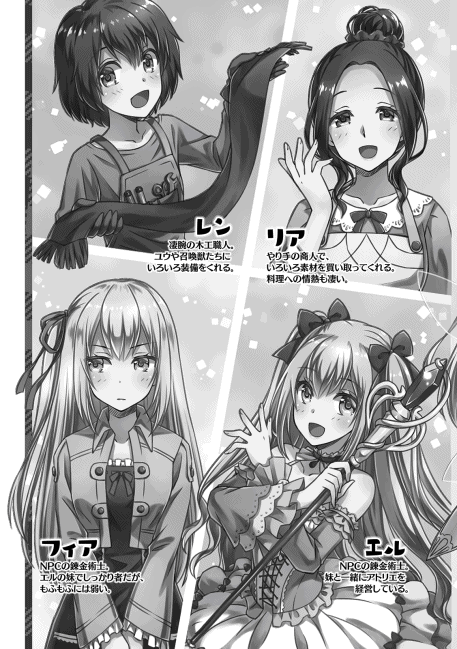

| VRMMOでサモナー始めました2 (TOブックスラノベ) | |
| テトメト | |
| TOブックス (2018) | |
ウサギのボーパル、フクロウのミズキに続き、ヤギのアイギスの召喚にも成功！ 自重無しでもふもふライフにどっぷり浸かっていたユウだが、そんな折、全プレイヤー参加型イベント「第１回闘技大会」の開催を運営から知らされる。早速彼はノリノリで参加表明し、レベル上げに邁進。すると、何と召喚獣たちが次々とクラスチェンジ！ また、自分自身もサモナーからハイサモナーへとクラスチェンジし、準備は万端。そして闘技大会の火蓋は切られるのだった。
Illustration：秋咲りお
Design：BEE-PEE


プロローグ
「うぇへへ〜。やっぱりボーパルのお腹はもふもふだな〜♪」
「きゅい〜♪」
俺の目の前でコロンと転がっているウサギのお腹を、両手でもふもふと撫でまわす。
このお腹の柔らかいもふもふを、わしゃわしゃするのがまた気持ちいいんだよね〜。もぅ、大好き！
俺にお腹を撫でまわされ、楽しそうに身を捩 っている、もふもふかわいいウサギさんの名前はボーパル。この世界 。ＦＷＯ で召喚士 として爆誕したこの俺、ユウの最初の召喚モンスターだな。
見た目はちっちゃかわいい儚げなウサギさんだけど、やるときはやるウサギさんなんだよ？ それはもう巨大なクマの首を蹴りで百八十度捩 じっちゃうぐらいには。
「ホー！」
「いやいや、ミズキも忘れてないよ〜」
ボーパルのお腹に続いて顎 もかいかいしていると、ちょっと離れて順番待ちしていたフクロウがピョンピョン跳ねて近づいてきた。
このフクロウはミズキ。俺の二番目の召喚モンスターにして、索敵と飛行と魔法と良識ともふもふ担当だ。多才だな〜。
ミズキのもふもふは、ふっかふかの高級羽毛だ。人差し指をそぉっと差し出すと、つぷつぷとミズキの胸に指が沈んでいき、幸せな温もりとふかふかに包まれる。あぁ〜指が幸せ過ぎて体全体が蕩 けちゃう〜。
もう我慢できない！ 手の平全部でもふっちゃう！ きゃぁ〜！ もふもふが！ もふもふが俺の手の中にぃ〜！
ふぅ......俺は今日この日の、もふもふのために生まれてきたんだな......良い人生だった......。
......いや、まだまだ長生きするけどね？ ボーパルやミズキを置いて先になど逝けるか！ 俺達の冒険はこれからだ！
「メェェ〜」
「アイギスぅ！ 構ってぇ〜！」
俺がボーパルやミズキと、もふもふ、いちゃいちゃしてるのを、ちょっと離れたところであくび混じりに眺めているのが、俺の三番目の召喚モンスターであるヤギのアイギスだ。
寝転がっているアイギスの横腹にフライング顔面着地をしても、倒した頭を上げすらしない大物......と言う名の、のんびり屋さんだな。
どれぐらいのんびりしてるのかと言えば、俺がアイギスのお腹で顔をグリグリしてもふもふを堪能しても、背中をわしゃわしゃ撫でて毛をボサボサにしても、ちっちゃいしっぽを掴 んでにぎにぎしても、垂れてるおみみをはむはむしても、気にもしないぐらい─
「メェェ〜」
あ、流石にここまでしたら鬱陶 しかったらしく、迷惑そうな目で見られた。
だが、そのうざそうな表情もまたいい！ こう......無抵抗な子って困らせたくならない？ 眉 を八の字にして、困った顔で俺を見つめるのが本当にかわいいんだよ〜♪
「メェ......」
とか考えながら、にやにやアイギスを眺めていたら、「処置なし」とばかりにため息を吐かれてお昼寝に戻っちゃった。
え〜？ アイギスもうちょっと構ってよ〜。
「ホー」
つれないアイギスにでれでれしてたら、うちのパーティー一の常識人（常識鳥？）であるミズキに嘴 でツンツンされて現実に引き戻された。
ん。そろそろ休憩 時間はお終いね。分かった分かった。じゃあ、攻略に戻りますかねえ。
「......って、あれ？ そう言えば、俺ってここで何してたんだっけ？」
「きゅい......」
「ホー......」
「メェ......」
俺のボケ老人みたいな発言に、アイギスだけじゃなくてボーパルとミズキまで、揃って呆れた溜め息を吐いた。
い、いや違うんだよ？ ちょっと脳内がもふもふで埋め尽くされてただけで、ボケてるわけじゃないからね！
その証拠に、今までのあらすじだってバッチリ語れるし！
たしか......ボーパルを召喚して、ミズキを召喚して、うさぎさんの洋服をゲットして、ボスのクマを蹴り殺して、にゃんこを封印して、アイギスを召喚して、もふもふしまくり、今に至るっと。
うん。ザックリ言えばそんな感じだな。
で、肝心な直前の出来事だけど、なんかメッセージが届いたんじゃなかったっけ？ 運営から闘技大会がうんぬんって。ちょっと開いて見てみるか。
《イベント情報》
エリアボス討伐を祝して、全プレイヤー参加型大型イベント第一弾。「第一回闘技大会」を開催します。
詳細情報はＦＷＯホームページをご確認ください。
開催日
７／23 （日）
対戦形式
予選
出場者を四エリアに分けてのバトルロイヤル。上位二名が本戦出場。
本戦
予選通過者八名によるトーナメント戦。本戦出場者には全員報酬 有り。
大会条件
・出場者は７／22 （土）正午までにエントリーを済ませていること。
②一つのゲームハードにつき、出場者は一名まで。
③サモナーの召喚モンスターはプレイヤーと同等とみなすため、大会中の召喚魔法は使用不可。
エントリー方法
開催中のイベント項目を選択。第一回闘技大会エントリーを選択。エントリーするキャラクターを選択する。
ふんふん。なるほど〜。って、ちょっと待てぃ！ 召喚魔法使用不可!? はぁ!?
い、いや、分かるよ？ 他の人が一人で戦ってるのに、サモナーだけチームで戦ってたら勝ち目無いってことだろ？
だからって、召喚魔法取りあげたら、サモナーなんてただの劣化マジックユーザーじゃん！ 勝ち目ねえ！
こりゃ、当日は観戦かな......タクとシルフは出るだろうし、応援がんばろっかなぁ......。
はぁ......俺も出てみたかったな......。あれ？ これって......ほほぅ？ 面白いじゃん？
《エントリーが完了しました。予選開始は７／23 （日）の正午からになります。開始時間にログインしていない場合エントリーが無効になりますので、ご注意ください》
くふ。これで当面の目標は決まりだ！ 闘技大会に向けてのレベル上げ、頑張るぞい！
◆◆◆
《召喚モンスター：アイギスがレベルアップしました。任意のステータスを上昇してください》
アイギス ヤギ
ＬＶ１ → ７
体力 13 → 15
筋力 ９ → 11
敏捷 ８ → 10
器用 12
魔力 ４
精神 ８
スキル
危機察知 悪路走破 怒り
レベル上げに行くためのレベルが足りないから、そこら辺で雑魚狩 りちゅ〜。
ん〜、そろそろ新エリアに行っても大丈夫かな？ 大分レベルも上がりにくくなってきたし。雑魚狩り飽きたし。
アイギスは体力がめっちゃあるから多分大丈夫だろう。すでに現時点で俺よりも高いしな。
「メェェ」
ちなみに戦闘中、アイギスはずっと俺の横でのほほんとしていた。
......うん。まぁね？ レベル低いうちに飛び出されてやられたら困るし、そうでなくても、ボーパル達の高速戦闘に付いていけないのも分かるよ？
でも、最初から一回も戦闘に参加しようとしないのはどうなんだろう......？
もうちょっとやる気出してもいいのよ？ いやまぁ、強制じゃなくて任意だけどさぁ......。まぁ、いっか。いざとなれば前線に放り投げよう。
では行かん。まだ見ぬ第二層へ！
第一章 森林マラソンとアイギスの進化
はい！ という訳でやってきました新エリア！
一歩奥地に踏み込んだだけで空気が変わったのが分かったね。なんと言えばいいのか、空気が重くなった感じ？
周りに生い茂っている木々も深みを増して、さっきまでの森よりも暗い印象を受けるな。まあ夜だし、暗いのは当たり前だけど。そして暗いのに何故か見えてるのも変わんない。便利。
スキル無しでこれなら、夜目のスキルを取れば昼間と同じ様に見えるのかもしれないな〜。まぁ、現時点では要らないから取らないけどね。
「きゅい！」
景色を見ながらぼんやりと歩いていた俺達だが、ボーパルが鋭く鳴いた瞬間、バッとその場から飛びのいた。
今のボーパルの鳴き方は敵が近くに居る事を知らせるものだ。場の空気がピンと張りつめた次の瞬間、ついさっきまで俺達が固まって移動していたその場所に、ボトボトとヒモの様なものが落ちてくる。
ボーパルの警告に従い、その場を離脱していた俺とミズキとボーパルは無事。いつもならここから直ぐに反撃に移るのだが......。
「メェ？」
「シャアアアア！」
「!? メェェェェェェェェ!? 」
モンスター ポイズンスネーク ＬＶ13
状態 アクティブ
俺達が飛び退いたのに、のんびりとその場に留まっていたアイギスが自分の背に落ちてきたヒモ......ヘビとばっちり目が合って今更、慌てている。
いやいや、アイギス緊張感なさすぎじゃない？ アイギスのスキルの危機察知は発動しなかったの？ ボーパルの気配察知は発動したみたいなのにな。平和ボケかな？
「シャアアアアアア！」
「メッ、メェェェェェェェェェ!? 」
あ、噛 まれた。そして、そのままこっちに来た！
『取って！ コレ取ってええええええええええ！』
って感じの涙目で、こっちに向かってくるアイギス。......当然、一緒に落ちてきたヘビを背中に乗せて。
う、うん。一応盾 役として注目は集められてるみたいだな！ よくやったぞ。アイギス！ でも、こっち来ないで！
「やるぞ二人とも！」
「きゅい！」
「ホー！」
「 ェェェェェェェェ！」
必死に体を揺すってヘビを振り落とそうとしてるアイギスに近づいて、背中をあむあむしているヘビを掴んで無理矢理に引き剥 がしてやる。
「 ェェェェェェェェ!? 」
痛かったのか暴れだしてるアイギスをヨシヨシしつつ、腕に巻きつこうとしてくるポイズンスネークを宙に放り投げて......。
「『ウォーターストーム』！」
「ホー！」
水魔法のレベル10 で覚えた魔法のウォーターストームを叩きこむ。水魔法の範囲攻撃魔法だな。
やっぱりファイヤーボールよりも詠唱に時間かかるんだよなぁ。まぁ、アイギスが体を張って時間を稼いでくれたから大丈夫だったけどね。さっすがアイギス！ 偶然だろうけども！
「ホー！」
水流に飲まれてガボガボしているヘビに、更に追撃で上空のミズキから風の斬撃が沢山振ってくる。
あれは、ウィンドストームかな？ 風魔法の範囲攻撃だし、たぶんそうだろうな。
「きゅいいいいいいいい！」
更に更に、溺 れて切り刻まれてぼろ雑巾みたいになったポイズンスネークが滞空している間に、跳びかかったボーパルが回転踵落 としでポイズンスネークを地面に叩きつけた。
そこまでの三連続攻撃でやっとヘビのＨＰが０になった。
......どの攻撃も一層の敵なら一撃で瀕死 、あるいは即死しかねない程の威力があるんだけどなぁ。やっぱり新エリアの敵は一味違うな。
「きゅい！」
「シャァ!? 」
「『ウォーターボール』！」
「ホー！」
残る敵はあと二匹。ボーパルが視認すらしにくい程の速度で接近し、打ち上げたヘビの一体に俺とミズキの単体魔法が決まって、残りは一匹。
残ったポイズンスネークだが、タイマンなら今のボーパルに勝てる相手はそうそう居ない。
最後の一匹も描写する時間も無くあっさりと沈んだ。
《召喚モンスター：アイギスがレベルアップしました。任意のステータスを上昇してください》
「メェェ、メェェェェ！」
「ちょっと待ってな。今、毒消し丸出すからな」
体をこすりつけてダメージをアピールしてくるアイギスに毒消し丸を飲ませて、毒状態を解除する。ヒールクリームはまだいいかな。ＨＰが三割減ったら使おう。
「 ッ!? ェェェェェェェェ！」
毒消し丸を飲んだ瞬間。おげぇぇぇぇぇぇぇぇ、っと毒消し丸を吐き出すようにアイギスがえずきだした。
お、おう。フィアちゃんがすごく苦いとは言ってたけど、そんな吐き出したくなるほどなのか......。
俺も場合によっては飲まなきゃならないんだが、飲みたくなくなってきたな......。
アイギス ヤギ
ＬＶ７ → ８
体力 15 → 16
筋力 11
敏捷 10
器用 12
魔力 ４
精神 ８
スキル
危機察知 悪路走破 怒り
「メェェェェェ......」
「すまんすまん。悪かったって。そんなにマズイとは思わなかったんだよ。でもほら、毒は治っただろ？」
「メェェ」
不承不承ながら了承してくれたアイギスだが、その目はまだ不満げだ。
そんな反応をされても、毒状態を解除するにはこれを飲むか、一定時間経過しなきゃダメなんだよ。つまり、無駄に体力を減らさないためには飲むしかないんだよ。諦めろ。
さて、それじゃあポイズンスネークを封印して先に進もうか。全部封印して上がった封印率が三十パーセントだから一匹につき十パーセントだな。残り七匹も封印しなくてはならない計算だが、一度に沢山出てきてくれるのならば、そんなに大変ではなさそうだ、なっ!?
「メェ！」
警戒しつつ森の道を歩いていたら、唐突にアイギスに頭突きで膝カックンされた。そんな嫌がらせをするほど毒消し丸が嫌だったのか!? と目を見開いた俺の視界を、何かが高速で通り過ぎて行った。
モンスター トレント ＬＶ15
状態 アクティブ
「あ、あぶねぇ......！」
「きゅい！」
「ホー！」
「メェェ！」
俺の頭があった位置を通過していったのは太い枝だった。普通の木に擬態していた木のモンスターだな。
ボーパルと俺の耳でも、ミズキの目でも見つけられないモンスターか......厄介だな。
今回トレントの不意打ちを避けられたのは、たまたま俺の後ろを歩いていたアイギスがトレントに気付き頭突きで押し倒してくれたからだ。
それが無ければ、最悪俺の頭はボールの様にシュートされてたかもな。もしくはホームラン。なにそれ怖い。
「きゅい！」
「ホー！」
「メェェェ！」
とはいえ、すばらしい隠密性を持つトレントも、最初の不意打ちさえ回避してしまえば、ただの的だ。
撹乱 するように駆け回るボーパルとミズキを、ついぞ捕らえることが出来ずにペチペチと叩かれ続け、根元をアイギスにかじられてご臨終 だ。なむ〜。
《召喚モンスター：ミズキがレベルアップしました。任意のステータスを上昇してください》
ミズキ マジカルオウル
ＬＶ11 → 12
体力 12
筋力 11
敏捷 17
器用 10
魔力 11 → 13
精神 10
スキル
飛行 奇襲 索敵 夜目 高速飛行 風魔法
今回はアイギスも最初から戦闘に参加してくれたな。
それどころか、今もフンス、フンス。と鼻息を荒くしてトレントを食べてるし。
......いや、食べるなよ。え？ アイギスにとってトレントっておやつ扱いなの？ 確かにヤギって草食獣で悪食な生き物だけどさ、お腹壊しても知らないよ？
んで、アイギスがもぐもぐしてるトレントを封印したら、封印率が十パーセント上昇したな。ここら辺の敵は基本的に十パーセントなのかもな。
同じ十パーセントなら、ポイズンスネークの方に出てきて欲しいかな〜。封印率が百パーセントに近いのはそっちだし。
まぁ、毒がうざいから、もっと倒しやすいのが出てくれるのならば、それに越したことは無いんだけど......。
「きゅい！」
「「「「シャアーーーーー！」」」」
「メェェェェェェ!? 」
......フリじゃないよ？ 本当だよ？
◆◆◆
《ポイズンスネークの封印率が百パーセントになりました》
《ポイズンスネークが封印完了しました》
《スキル：召喚魔法がレベルアップしました》
《召喚モンスター：アイギスがレベルアップしました。任意のステータスを上昇してください》
《スキル：鑑定がレベルアップしました》
《スキル：水魔法がレベルアップしました》
アイギス ヤギ
ＬＶ８ → ９
体力 16 → 17
筋力 11
敏捷 10
器用 12
魔力 ４
精神 ８
スキル
危機察知 悪路走破 怒り
きぃやぁぁぁ！ 毒もらったぁぁ!?
あれから更に何戦かした後、ヘビの枝からの飛び降り攻撃を回避しそこね、ばっちり首筋に噛み付かれてしまい、ＨＰが大幅に減った上に毒を貰ったため、ヒールクリームと毒消し丸を両方使用しなきゃなんだが......。
でもね、でもね！ すっげえ飲みたくないの！
ヤギのアイギスでさえめっちゃイヤそうに、仕方なく。ホントーにしぶしぶと飲み込んで、吐きそうになっている毒消し丸を、誰が好き好んで飲みたいものか！
だが、こうして毒消し丸片手に葛藤している間にもＨＰは徐々に減っている。くっ、いずれは飲まなくちゃダメなのは分かっているんだが、心の準備が！
ぽむ。
「アイ......ギス......」
膝をついて究極の選択に苦悩する俺を励ますように、アイギスが背中を叩いてくれた。
まさか、毒消し丸を飲むコツでも伝授してくれるのか、アイギス......！
ふるふる。
黙って首を振られたぁ！
事実上の死刑宣告！ いいよもう！ 飲むよ！ 飲めばいいんでしょ!? ああ、もう！ やっさいもっさい！
ごくり。
......昔どこかで聞いたことがある。薬は噛んだら苦い。飲むと決めたのならば、口の中に薬がある時間を少しでも減らすために即座に飲み込むべしと。今ならば言える。あれはガセであると。
胃の腑に叩き込んだ薬から発生した苦味が喉を通って、口へと徐々に侵食してくガガガガガガガガ！
こ、これアカンやつや!! み、水！ 水ぅ!!
◆◆◆
「きゅい......」
「ホー......」
ボーパルとミズキが一人で百面相をしている俺の体を、（頭をではない）心配して顔を覗 き込んでくれる。
ああ、二人は優しいなぁ......よしよし。大丈夫だよー。
「フンスッ」
対して、良くも悪くも毒消し丸の絶望的な味を知っているアイギスは、鼻息を一つ吐いて呆れ顔だ。
いや、多少はオーバーリアクションだったかもしれないけど、マジでマズイよこれ。もう絶対に飲みたくないね。
でも、どれだけ苦くても他に解毒手段も無いし、毒を放置するわけにもいかないから、毒になったら毒消し丸を飲まなくてはいけないわけで......。
どう考えても罰ゲームです。本当にありがとうございました。
ちくしょう！ なんで、この世界には回復魔法が無いんだよ！
キア○ーかナースをプリーズ！
ぼとぼとぼと。
「「「シャーーーー！」」」
だから、お前らは呼んでねえって！
◆◆◆
【アイテム：素材】ポイズンスネークの毒袋 レア度３
ポイズンスネークがドロップする毒袋
中には毒液が詰まっているため取り扱い注意
調薬や錬金術の素材として使われる
毒回避成功！ そして依頼アイテム回収！
ポイズンスネークはもう封印済みだからな。解体ナイフを刺したら毒袋を落とした。明らかにポイズンスネークの胴回りよりも大きい紫の水風船みたいなものだな。
......俺はたまたまフィアちゃんから毒消し丸を貰ってたからいいけど、毒消し丸を作るためには毒袋が必要で、毒袋を得るためにはポイズンスネークを倒す必要があるわけで......。
ポイズンスネークと戦うのに毒消し丸が欲しいのに、その為にポイズンスネークを狩りに行くとか本末転倒だな。数が揃う頃には毒を避けるのが上手くなっていて、毒消し丸が要らなくなりそうだ。
「メェェェ！」
勝 ち鬨 を上げるアイギスは、隙 あらば休もうとするのは変わらないが、必要な時までサボろうとはしなくなったな。初戦闘で毒もらったりしたから、戦いが嫌になったりしないか、ちょこっと心配してたんだが、良い方に変わってくれたみたいで良かったよ。
「メェ？」
俺がアイギスを見つめていると、なぁに？ と首傾げてこっちを見たが、何でもないと首を振ると、今度は空を飛ぶミズキを目で追い始めた。
おーい、よそ見しながら歩いてると、あ、転んだ。四足歩行なのに思いっきり顔面から落ちたな。ある意味器用だわ......。
まぁ、そんなマヌケなところもかわいいんだけどね！
さて、依頼の毒袋も集め終わったから、ポイズンスネークは無視してトレントを集中的に狩りたいんだが、あいつら隠密性高すぎんだよ。なんかいい方法ないかね？ う〜ん......。
「あ、そうか。走ればいいのか」
「きゅい？」
トレントはこちらが近づくまで、ただの木と判別つかないので居場所が全く分からない。
つまり、こちらが近づけば居場所が分かるということで、ならば森を走りまわればトレント発見し放題じゃん！
俺って天才じゃね？ トレントは多分アレ をドロップすると思うから、封印完了後も何体か狩りたいしな。
てなわけで。
「第一回チキチキ森林マラソン大会開始だ！」
「きゅい！」
「ホー！」
「メェ？」
アイギスだけは突然叫びだした俺に「ハァ？」って顔してるが、すでに付き合いの長い（三日と二日）二羽は、俺の思いつきからの急なハイテンションにも慣れたもので、テンションアゲアゲだ。......生まれた時からノリが良かったような気もするが。
「はい、よーいスタート！」
「きゅいーーーーー」
「ホーーーーーー」
「メェ？ メ!? メェ〜〜〜〜〜」
索敵をほっぽり出して急に走りだした三人に、出遅れたアイギスが慌てて追いかけてくる。
もちろん俺達がアイギスを一匹で置いていくはずもなく、アイギスとほぼ同じ速度を維持して駆けてるんだけどな。さてさて、トレントは何体見つかるかな〜？
◆◆◆
「メェェ！ メェエエ！ ガフッ」
「『ウォーターストーム』！」
「ホー！」
「きゅいきゅいきゅいきゅい！」
暗い森の中、俺たちは走っていた。それはもう死に物狂いで走りまくっていた。
その様はまるで、かの有名なメロスの様に......って、確かメロスの走る速度って、距離を時間で割ったら時速四キロぐらいだっけ？ 普通の徒歩より遅いじゃん！ いくら足場が悪い森の中だからってそんなに遅くはないわ！ てか、そんな速度じゃ奴らに追いつかれる！
「「「「シャーーーー！」」」」
「メェエ！ メェエエ！ ガホッゲホッ」
「分かったからアイギスは走るのに集中してろ！」
アイギスを戻せればいいんだが、戦闘中はパーティの変更は出来ないからしょうがない。毒消し丸を口に放り込まれたくなければ、キリキリ走ってもらうしかないな。
第一回チキチキ森林マラソン大会は、急遽 第一回チキチキ森林鬼ごっこ大会に変更になっております。
どうしてこうなった......。
本来の予定ではヘビは振り切って、トレントが出てきたときに一緒にいた奴だけ仕方なく倒すつもりだったんだが......ヘビしつこすぎぃ！
なんなのあいつら。諦め悪すぎるだろ。ヘビだけに執念深いってか？ いらんわ、その設定！ おかげで俺達がトレイン行為をする迷惑プレイヤーみたいになってるじゃん！ いや、みたいっていうか、そのまんまだけども！
「ヒーヒー......！」
「『ウォーターストーム』！」
「ホー！」
「きゅいきゅいきゅいきゅいきゅいきゅいいいい！」
ぼとぼとぼと。
「「「シャーーーー!! 」」」
逃げれば逃げるほど鬼 が増えていく鬼ごっことか鬼畜過ぎんだろ！ まぁ、鬼は倒せば減るんだけどさ！ 倒す為に足を止めたら囲まれる！
今のところは俺のウォーターストームとミズキのウィンドストームで弱らせたポイズンスネークを、殿 を務めるボーパルが蹴り殺しまくってなんとか逃げ続けられている。
ヘビを蹴っては跳びあがり、近くの木から木へと高速で蹴り移っては、またヘビの集団に突っ込みヘビを複数まとめて吹き飛ばし、俺とミズキの魔法が飛んできたタイミングで上空へと退避して、行方をくらませては強襲する。
......お、おかしいなぁ〜？ うさぎってあんな戦闘民族だったっけ......？
ボーパルの深刻なうさぎ離れはさておき、そろそろ現状をなんとかしないとな。ＭＰも底を尽きそうだし、アイギスは舌噛んだみたいだし、なによりお腹空いたし。覚悟を決めて立ち止まって数を減らさないと。でも毒は嫌だなぁ......毒がと言うか、毒消し丸が嫌なんだけどさ。
トレントの封印率は八十パーセント。あと二体で封印完了なんだが、二桁を超えるヘビから逃げるのに精一杯で、トレントを見かけても素通りするしかないんだよなぁ。悔しいです！
「ゼー......ゼーガヒュッ!? メェ、ゴッ!? 」
「アイギス!? 」
あっ、詠唱止めちゃった。もったいない。じゃなくって！ アイギスが突然左に吹き飛んだかと思ったら、空中で方向を変えてこっちに飛んできた。回避不可。キャッチしたら足が止まる！ でも受け止めるしかない！
「う、おぉぉぉ!? 」
「メェ!? 」
なんとかアイギスを受け止める事に成功した。が、完全に俺の足が止まり、俺を見捨てられないとミズキも近くで滞空した。
後方からは、紫の絨毯 にすら見えるポイズンスネークの群。
正面には、さっきアイギスをお手玉してくれたトレントが二体。
俺とミズキのＭＰは残り少なくアイギスはボロボロ。
......あれ？ これ詰んでね？
い、いやいやいやいや。まままま、まぁ待て！ 落ち着け！ 落ち着いて素数を数えるんだ！
えー、一、三、五、七......。
あれ？ 二は素数だっけ？ 二で割れるのは素数じゃなかったような、ん？ 二は別にいいんだっけ。あれ？ ゼロはセーフだったっけ......あれ？
「「「シャーーーーー！」」」
「ホー！」
「きゅいきゅいきゅい！」
俺が混乱している間にミズキがウィンドストームを放つが、足を止めた俺達を包囲しようとポイズンスネークが散らばったため、数匹しか巻き込めていない。
ウィンドストームを避け、左右から半円状に包囲しようとポイズンスネークが散開してくるも、右翼はボーパル一羽を抜けずにその場で立ち往生している。
ボ、ボーパルさんマジかっけぇ......惚 れる！ もう惚れてた！ 惚れ直した！
だが、左翼からはポイズンスネークがどんどん俺の方向に迫ってきてるし、振り向いた後方では、わっさわっさと枝を振っているトレントが二体もいる。
移動不可の代わりに高い隠密性と破壊力を持っているトレントと、毒持ちの上に数が多いポイズンスネークを一緒に相手はしたくない。毒消し丸マズイし！
......ん？ あれ？ 移動不可？
ちらっと後ろを振り返る。
トレントが二体とも、わっさわっさと必死に枝を振っている。その攻撃力は高く、体力特化のアイギスを二撃で残りＨＰ四割まで削る威力がある。
......うん。派手に吹っ飛んだ割には結構残ってるな。お前も起きて戦ってこい！
「メェェェ!? 」
毒消し丸が嫌だからか、やられたフリをして半目で俺の様子を伺っていたアイギスを左翼の方へ放り投げる。
非難の声を上げつつもしっかり着地したあたり、やっぱりタヌキ寝入りだったか。そんなにポイズンスネークが嫌いか。いや、嫌いなのは毒か。もっと言えば毒消し丸か。俺も大嫌いだ。
だが、安心しろ。お前の頑丈さならポイズンスネークにＨＰを四割削られることは滅多にない。安心して逝ってこい！ 毒消し丸は覚悟してもらうがな！
という意味を込めたサムズアップでアイギスを送り出す。俺の意思が伝わったのか、めっちゃ嫌そうな顔でしぶしぶ迎撃をしているミズキの元へ向かっていった。アイギスがサボっても何とかなるならサボっててもいいんだが、そういう訳にも行かないからなぁ。頑張ってくれよ？ 期待してるぞ。
さて、背後のトレントだが......うん。相変わらず、わさわさしてるな。必死にわっさわっさしてるけども、やっぱり届いていない。移動不可で遠距離攻撃無しとか、居場所ばれたら的じゃないですかーやだー。
まぁ、だからこそ高い隠密性と攻撃力を持ってるんだろうけども、仲間にはいらないな。
さて、後方は退路を断たれてるだけで脅威にはならないという事が分かったので、二手に分かれた戦場のどっちかに味方しようと思うんだが......。
「きゅいきゅいきゅいきゅいー！」
「「「シャ、シャー!? 」」」
順当に行くのなら、一羽で戦っているボーパルの援護に向かうべきなんだろうけど......必要無くない？
ボーパルの真っ白な体に赤いマフラーの軌跡が地を滑り、宙を舞い、急降下するたびにポイズンスネークの悲鳴が森に響く。ポイズンスネークの攻撃はボーパルには当たらず。ボーパルの攻撃はポイズンスネークを的確に捉え続ける。
......もう、全部あいつ一人でいいんじゃないかな。
防御力が紙なのが難点だが、物理が効いて範囲攻撃や必中攻撃が無い相手なら、そうそう負けないよね。
防御力に関しては、体力にパラメーターを振れば改善は出来るが......やっぱりボーパルは圧倒的な速さと攻撃力のイメージが出来たからなぁ。このまま尖った能力でいこうと思います。極振りはロマン！ なんだかんだで極振りが一番強かったりもするしね。器用貧乏で何にも出来なくなっちゃうのが一番困るもん。
「メェェェェェ!? 」
「ホー！ ホー！」
一方のアイギスは、背中に張り付いたポイズンスネークをミズキに剥がしてもらっていた。
アイギスぇ......しゃあない、あっちに加勢するか。この杖の錆 にしてやらぁ！ 杖木製だけど！
◆◆◆
《スキル：水魔法がレベルアップしました》
《スキル：杖がレベルアップしました》
《プレイヤーがレベルアップしました。任意のステータスを上昇してください》
《召喚モンスター：ボーパルがレベルアップしました。任意のステータスを上昇してください》
《召喚モンスター：ミズキがレベルアップしました。任意のステータスを上昇してください》
《召喚モンスター：アイギスがレベルアップしました。任意のステータスを上昇してください》
《トレントの封印率が百パーセントになりました》
《トレントが封印完了しました》
ユウ サモナー
ＬＶ12 → 13
体力 13
筋力 13
敏捷 13
器用 13
魔力 18 → 19
精神 18 → 19
スキル
杖ＬＶ５→６ 蹴りＬＶ16 召喚魔法ＬＶ９→12 火魔法ＬＶ10 水魔法ＬＶ11 →13 鑑定ＬＶ８→９ ダッシュＬＶ９ 回避ＬＶ５ 防御ＬＶ５
《スキルポイントを二点獲得しました。ＳＰ10 →12 》
ボーパル 蹴りウサギ
ＬＶ12 → 13
体力 10
筋力 20 → 21
敏捷 20 → 21
器用 12
魔力 ４
精神 ７
スキル
索敵 気配察知 跳躍 ダッシュ 蹴り 溜め蹴り 立体機動（ＮＥＷ）
ミズキ マジカルオウル
ＬＶ12 → 13
体力 12
筋力 11
敏捷 17
器用 10
魔力 13 → 15
精神 10
スキル
飛行 奇襲 索敵 夜目 高速飛行 風魔法
アイギス ヤギ
ＬＶ９ → 10
体力 17 → 18
筋力 11
敏捷 10
器用 12
魔力 ４
精神 ８
スキル
危機察知 悪路走破 怒り ダッシュ（ＮＥＷ）
《召喚モンスター：アイギスがクラスチェンジ条件を満たしました。クラスチェンジ先を選択してください》
《クラスチェンジ候補：ハーデンゴート
エスケープシープ》
《ハーデンゴート
体毛を硬化させ、敵の攻撃を弾く事ができる山羊。
ヤギ専用鎧 を装備可能になる。
主に地上で活動し、主な攻撃手段は突進、爪撃等》
《エスケープシープ
全身を弾力のある長い毛で覆い、物理攻撃に対する耐性を得た羊。
稀に戦闘中に逃走することがある。
地上で活動し、主な攻撃手段は突進、爪撃等》
勝った勝った！ 今夜はドン勝つだ！
圧倒的不利な状況から死力を尽くして勝利をもぎ取るとか、めっちゃ気持ちいいんですけど。今すっごく楽しいわ〜。もう二度としたくないけどね。
ポイズンスネークを大量に倒したから全員レベルアップしたし、ボーパルは新スキルを覚えたし、アイギスはクラスチェンジだ！ ウハウハが止まらないね。
ピンチとチャンスは裏表。勝てば官軍、負ければ国賊。勝つも負けるも俺次第って事だな。ちょっと自分でも何言いたいのか分かんないけど、フィーリングで察して。
んで、ボーパルの新スキルの立体機動。これは三次元的な動き全てにプラス補整が入るパッシブスキルだな。
あれかな？ ボーパルは近々進撃してくる巨人と戦う予定でもあるのかな？ うなじを切り裂くとか、ある意味首狩り兎 にぴったりだけども、俺達も巻き込まれそうだから、やめてね？
ボーパルの強化はさておき、毒消し丸を飲んで悶 えているアイギスのクラスチェンジだ！ 候補はいつもどおり二つだな。
一つ目はハーデンゴート。体毛を硬化させて攻撃を弾ける。つまりは、攻撃が当たる瞬間だけ防御力を高めることができるアクティブスキルを覚えるんだな。
アイギスは、任意で発動できるアクティブスキルを一つも覚えていないからありがたい。
他にも専用の鎧を装備出来るみたいだから、素の防御力の底上げも期待出来る。
ただ......ヤギ様の鎧ってどこで売ってるんだろうな？ リアさんにお願いしたら仕入れてくれるかな？ 完全オーダーメイドになりそうだから、お値段を聞くのが怖いけどね......。
二つ目はエスケープシープ......って、ヒツジじゃねーか！ 山羊がクラスチェンジして羊になるって進化してるの？ 退化してない？ 戦闘能力はヒツジよりヤギの方が高そうなんだが......。
性能的には全身を毛で覆って物理攻撃に強くなる。つまりは常に物理防御力が上がるパッシブスキルを覚えるんだろな。
今のところ物理攻撃をしてくる敵ばかりだから、盾役としての性能は飛躍的に上がりそうだ。
ただ、稀に、戦闘中に逃げるっと。ダメじゃん！ 盾役とか一番逃げちゃダメなポジションじゃん！ もうエスケープシープが何処を目指しているのか分からないよ！ 一番防御が固いのに真っ先に逃げるとか！
......はっ！ 自分の生存が一番なのか!? 死ぬのは嫌なので防御力に極振りしたいって事か！ でも、俺が死んだらパーティ全滅なんだよ？ そこんとこ分かってる!?
はぁ......はぁ......ツッコミ疲れた......脳内でしかツッコんでいないのに、息が切れちゃったよ。あの短い説明文だけで俺をここまで疲弊させるなんて、エスケープシープ......恐ろしい子ッ！
さて、両者の特長が出揃った訳だか......これはもうアイギスの進化先は迷う余地すらなく決定だな。
アイギス ヤギ → エスケープシープ
ＬＶ10
体力 18 → 21
筋力 11
敏捷 10
器用 12
魔力 ４
精神 ８ → 10
スキル
危機察知 悪路走破 怒り→怠 け（ＮＥＷ） ダッシュ 物理耐性（ＮＥＷ）
《召喚モンスター：アイギスがエスケープシープにクラスチェンジしました》
もふもふには勝てなかったよ......。
だってヒツジだぜ!? もふもふの代名詞みたいな存在じゃん！
一流のもふらーを自称する俺としては、このもふもふチャンスを逃す訳にはいかないでしょ！
そりゃハーデンゴートの方が強いのかもしれないけどさぁ。世の中強さが全てじゃないじゃん？ 俺は他のゲームでも強さよりも見た目重視でパーティを決めるからな。例えそれが強力な必殺技を持った物語の主人公であろうとも、かわいい女の子をパーティに入れる為ならば迷い無く控えに回すぜ。多少弱かろうが愛が有れば問題なしだ。
「メェェェ？」
「きゅいきゅい！」
「ホー！」
で、超肝心なアイギスの見た目だが......もこもこからはみ出している頭や手足はほとんど変わってないな。ヤギからヒツジになったんだ。多少は顔付きが変わりそうなもんだが......まぁ、ゲームだしな。気にしたら負けだ。
そんな変わらぬアイギスの眠そうな顔とは対称的に、あからさまに変化しているのがアイギスの体を覆うもこもこ！
もはや、もふもふでは表現しきれないもこもこは、毛の短い頭や手足の先以外の全てを覆って、アイギスをまん丸なシルエットへと変貌させている。
もし、あのもこもこに包まれたアイギスの体の大きさが、ヤギだった頃と変わらないのであれば、肉体の体積とほとんど変わらない量のもこもこが引っ付いている事になるな。これはもふって確かめざるをえまい！ と言うか、もう我慢の限界だぁ!! もふらせろぉ!!
「メェェ〜」
急に真冬仕様のもこもこになった自分の体を不思議そうに眺めていたアイギスの横腹に顔を突っ込んで、目一杯もこもこを満喫する。
すっっっっごいふわふわだよこれ!?
手の平でぎゅ〜って押し込んだら、ふんわりと押し返される低反発！
どれだけ押してもぽよんぽよんと跳ね返すのに、ゆっくりと指を差し入れたら優しく包み込んで、手の平全体をぎゅって抱き締めてくれるみたいな！
なにこれ!? なにこれぇ!? すっごいふわもこだよ!?
幸せぇ......手が幸せ。顔も幸せ。もう、全身で抱きついちゃうもんね。
ふかふか、もふもふ、わしわし、もふもふもふもふもふもふ......。
「メ、ェ、エ、エ、エ、エ、エエ〜！」
ハッ！ つい夢中でもふってしまった！
全身を使って愛でる事ができるアイギスの大きさは魅力的だよな。ボーパルとミズキは俺の手のひらより大きいぐらいしか身長が無いからなぁ。激しくもふると傷つけちゃいそうなんだよ。
「きゅいきゅい！」
「ホー！」
考えごとをしつつもアイギスをもふり続けていると、放置されていたボーパルが俺の手とアイギスの体の間にムリムリと頭をねじ込んできた。と同時に、俺の肩に止まったミズキが俺の顔に頭をうりうりと擦り付けてくる。
ヤキモチかな？ かわいいやつらめ〜。
「邪魔する子は〜、こうだ！ うりゃうりゃりゃー！」
「きゅい〜！」
「ホ〜！」
「メェ......」
いつもよりちょこっと乱暴にボーパル達の毛並みを掻 き乱してやると、二人とも大興奮で俺にじゃれついてくる。
やっぱりもふもふは最高だぜ！
◆◆◆
「おひょ？ お兄ふぁん、おふぁお〜」
「おはようさん。もうお昼過ぎだけどな」
満足するまでボーパル達も、もふもふして、ちょこちょこっと狩りをしつつ、街に帰ってログアウトした。
リビングに入るとダボダボのＴシャツにホットパンツ姿の翼がソファに寝転んで足をバタつかせている。年頃の女の子がはしたない。
口には棒アイスを咥 えてピコピコ動かしつつ、視線は手に持つ携帯端末に注がれている。
部屋に漂うシャンプーの匂いと濡れている翼の髪を見るに、シャワーでも浴びていたのだろう。
なんとなく翼の姿を目で追いつつ、赤色のキツネにお湯を注いでタイマーを長めにセットする。
うどんはちょっとのびてるぐらいが美味しいんだよね。甘いお揚げと柔らかい麺が最高。
「ねぇねぇ、お兄ちゃん。今日って暇 ？」
「ん？ 暇に出来るぞ」
さっさと食べ終えて、簡単に片付けをしていると、唇を尖らせてアイスの棒をピコピコして遊んでいた翼に急に声をかけられた。
今日の予定はレベル上げぐらいしかないからな。暇と言えば暇だな。
「......そんな男前な返しは期待してなかったんだけど......、今日、時間空いちゃってさ。一緒に砂漠でレベル上げしない？ ボーパルちゃんにも会いたいし！」
「砂漠かぁ......まだ行ったこと無いなぁ」
確か始まりの街の西が砂漠だったはず。北が山で東が森。南が海だったっけ？
「砂漠は昼は暑くて夜は寒いから、あんまり人気が無くて穴場なんだよね。闘技大会も近いし、少しでも効率よくレベル上げしなきゃ！ 目指すはエリアボス討伐！」
「あー......エリアボスはマジで強いからな。頑張れよ。俺は行かないからな！」
あの熊戦の絶望はまだ克服出来てないんだよ。しばらくはエリアボス戦はしたくないぜ。
まぁ、急にやる気が出るかもだけどな。ボスがハムスターだったりしたら、即もふりに行くよ！ もふもふは正義！
「お兄ちゃんもエリアボスに特攻かけたんだね......その気持ちは私にもよく分かるよ......。なら、エリアボス戦はせずに、一緒にレベル上げするってことで決定ね！ 先に入ってリアさんの所で待ってるから！ 早く来てよ〜!! 」
ソファーから跳ね起きた翼が、俺の返事も聞かずにスキップしながら自分の部屋に戻って行った。
毎度のことながら嵐のような奴だな、あいつは。そんなにボーパルに会いたかったのかね？ うちの子は世界一可愛いからな。仕方ないね。
......ハッ！ いくら翼でもボーパルはやらんぞ！ お父さんは許しませんからね！
◆◆◆
「きゅい！」
そんなこんなで再びログイン。
さっそくリアさんのお店へ向かおう！......と言いたいところだけど、その前にログアウト前にゲットした戦利品の確認だ。
【アイテム：素材】トレントの木材 レア度２
トレントから採れる木材。
魔力を帯びており普通の木材よりも頑強で魔力伝道率も高い。
これこれ。これが欲しかったんだよね。
ポーパル達はクラスチェンジしてメキメキ強くなってるのに、俺だけが取り残されてるからな......。こいつで新しい杖を作れれば俺の火力も上がるはず！
あとでレン君に杖の作成をお願いしようっと。
さて、街中でボーパル達を召喚しながら歩いてるんだが......普通に歩けてるな？
念のため、うさぎさん装備は外してきたけれど、さっきからチラホラとウサミミが歩いているのを見かけるし、ウサギさん装備の希少性と共に俺の目立ち度も下がったのかもな。よかったよかった。
「もう！ おねぇちゃんおっそ〜い！」
ぶんぶんと残像が残るほど手を振り回しているシルフは、妖精の格好も相まって、そこそこ人がいる大通りの中でも凄く目立ってる。おかげで待ち合わせの目印にはピッタリだな。
......まぁ、頭にウサギを乗せて、肩にフクロウをとめ、ヒツジを引き連れた初期装備の俺の方が絶対目立っているとは思うけどさ。
「すまんすまん。でも、そんなに遅れてはないだろ？ あと、お姉ちゃんって言うな」
「時間の問題じゃないんだよ！ 私の気持ちの問題なの！ あ、ボーパルちゃん、久しぶりー！ 相変わらずのもふもふだねっ！ 他の二人は初めまして！ フクロウとヒツジだよね？ ね？」
相変わらずテンションの高いシルフは、左手を腰にあてて右手をズビシと俺に突きだし理不尽な理屈を垂れ流してから、ボーパルに手を振って挨拶 し、ミズキとアイギスをキラキラした目で見つめている。
ふふん。うちの子はかわいいだろう？ よく分かってるじゃないか。
「新しく召喚したミズキとアイギスだ。よろしく」
「きゅいー！」
「ホー！」
「メェ〜」
「あ〜ん。みんなかわいい！ すっごい、もふり甲斐がありそう！ うふふふふ......」
ギラリとシルフの目が怪しく光った瞬間、ぞわりと嫌な予感が全身を駆け抜けた。
シルフの兄として過ごしてきた十数年の経験が俺に警鐘を鳴らしている。このままでは俺にとって不本意な状況になる、と。
その予想を裏付けるように、にこにこ笑っていたシルフの口角がニマァ〜、と意地悪く吊り上がり、体を少し沈めて今にも飛びかかろうと......。
「アイギス！ 君に決めた！」
「メェ!? 」
「もふもふ！」
急に飛びかかってきたシルフに抱きつかれる寸前に、近くでぼーっとしていたアイギスの首根っこを掴んで割り込ませる事に成功した。
ふぅ〜。危ない危ない。こんなに人目の多いところで妹にもふもふされるなんて、恥ずかしくて仕方ないからな。回避できて良かったぜ。
「ふわ〜。もこもこだぁ〜。ウェヒヒ」
「メェェ......」
シルフに捕われ身動きの取れないアイギスからアイコンタクトが送られてきたので、笑顔でサムズアップしておいた。
戦いに犠牲は付きものだからな。しゃーなしだ。頑張れ盾役！
「こんばんわ。ユウ君達がいると賑やかで楽しいわねぇ〜」
「......うちの妹がやかましくてごめんなさい......」
今までのやり取りは、全てリアさんの屋台の真ん前で行われていたわけで......。
めっちゃ営業妨害だよな!? リアさんはコロコロ笑って「気にしなくていいのよ〜」って言ってくれてるけども、あとでシルフにお説教しておかないと。
「ボーパルちゃんとミズキちゃんもこんばんわ。元気にしていたかしら？」
「きゅいー！」
「ホー！」
俺の頭と肩の上で、二人がすちゃっ！ と前足と片翼を上げて挨拶をしているのが分かる。
ちゃんと挨拶できて偉いな〜。あとでご褒美 におやつを買ってあげよう！
「あっちの子は初めて見る子よね。アイギスちゃんだったかしら？」
「そうそう。新しく召喚したヒツジのアイギスです」
リアさんと俺が視線を向けた先には、やりきった表情でフーっと息を吐いているシルフと、浜に打ち上げられた魚の様にピクピクしているアイギスの姿があった。
「ふぃ〜、汝 もよきもふもふであった......」
「メェ〜」
あ、アイギスが喋った。と言うことは生きてるな。よかったよかった。
レベル上げに行く前にアイギスが戦闘不能になったかと思ったぞ。
......アイギスが盾になってくれなかったら、シルフにもふり倒されて、あられもない格好でビクンビクンしてるのが俺だったかもしれないんだよな......。アイギスには特別にご褒美をいっぱいあげよう。そうしよう。
「満足したなら出発するぞ〜。アイギス、立てる？」
「メェェ......」
「えー！ まだボーパルちゃんとミズキちゃんをもふもふしてないよ！」
「お前、当初の目的完全に見失ってない？ てか、移動しながらもふればいいじゃん」
「その手があったか！ お姉ちゃん賢い！ 偉い！」
「きゅい!? 」
「ホー!? 」
キュピーンと目を光らせたシルフが、ボーパルとミズキをロックオンし。その邪気に当てられたのか二人がヒシッ！ っと俺の頭に抱きついてくる。
シルフさん怯えられてまっせ？ 下手したらラースベアーの時よりも怖がってる可能性すらある。うちの妹ながら恐ろしい才能だ......本人は絶対に嫌がる才能だろうけどな。
シルフの暴走を宥 めつつ、リアさんに別れを告げて、さばくちほーに向けて出発だ！ 新しいもふもふフレンズがいたら嬉しいな〜。
第二章 シルフの狂気と妖精の恩返し
「へくちっ！ ぺぷしっ！ さむい！ 夜の砂漠ちょーさむい！」
「だよねー」
舐めてた！ 思ったのより三倍は寒い！ 夜の山も寒かったけど砂漠は更に寒い！ 流石、寒さがステージ特性なだけはある。
しかも、耐えられないほどじゃないのがまたジワジワくる。ダメージがあるわけじゃないし、街に帰って耐寒装備を買ってくるほどじゃないんだが、順調にやる気が削がれてくこの感じがいやらしいわ〜。
「というか、ボーパル達もふもふ組が平気なのはまだ分かるけど、俺と同じぐらい装甲が薄いシルフが平気なのが謎なんだが......」
「きゅい？」
「ホー」
「メェェェェ」
砂漠に足跡をつけて遊んでいたもふもふ組が、「呼んだ？」って感じで振り替えるのがかわいい。かわいいけど寒い。みんなをぎゅっと抱き締めていれば暖が取れるかな？ 戦闘は出来なくなるけども。
「鍛え方が足りないよお姉ちゃん。『心頭滅却すれば氷もまた熱し』って言うじゃない」
そんな「常識じゃん」と言わんばかりのやれやれ顔をされても聞いたことが無いんだが？
もし、シルフが氷を触って熱いと思うのならば、病院に行ったほうがいいと思うよ？ もちろん頭のな。
「......ただでさえ寒いのに凍てつく目で見つめないでよお姉ちゃん。本当に凍っちゃうじゃない。本当の事を言うと、耐寒のスキル取ってるからある程度は平気なんだよ。耐寒なら死にスキルになりにくいだろうし、防寒着なんかで、せっかくのセット装備を変更したくないもん！」
「むぅ、確かに」
防寒装備を着てセット装備が崩れるのは嫌だな......。それぐらいなら、俺も耐寒スキル取ろうかな？
「全職共通で２ポイントだから取ったら？ ちなみに耐暑っていう暑さに強くなるスキルも同じポイントで取れるから一緒に取るといいと思うよ？ きっとどこかで役に立つし」
「じゃあ、そうするー」
耐寒を取得したら、ちょこっと寒さが和らいだ気がした。レベルが上がればもっとマシになるんだろ。
「と言うか、お姉ちゃんもウサギさんシリーズ着てるんだね......ふふっ。確かに今流行りで高性能だけど、ウサギさんシリーズって、ますます女の子にしか見えないよ？ いや、最初から女の子にしか見えないから、おんなじだけどね♪」
かわいいからいいんですぅ〜。かわいいは正義だもん！
「んなことよりも、砂漠にはどんなモンスターが、ぁ!? 」
砂に足をとられて、べしゃっと顔面から砂の中に突っ込んでしまった。砂漠って歩きにくすぎなんだよ！ 森より酷いんだけど！ もうやだぁ！
ゲームの仕様なのか、服や口の中に砂が入ってこないのが、せめてもの救いだけどさぁ。このエリア不快指数がマッハだよ？
「はぁ〜......。こりゃ、砂漠が不人気なのも当然だぞ。俺ももう帰りた、い？」
身を起こそうと砂に着いていた手がズリズリと動いていく。というか、俺が倒れてる地面自体がゆっくりと動いてない!? こわっ！ なにこれ!? 流砂!?
思わずキョロキョロした俺の視界に入ったのは、流れ落ちる砂の真ん中でキチキチと耳障りな音を出しながら、俺がすべり落ちてくるのを待つ一体のモンスターの姿......って、アリジゴクだこれ！
「ちぇっ。ハズレかぁ〜残念」
四つん這いの格好で両手両足を砂に飲まれた俺が戦々恐々としている中、俺の頭上からそんな呑気な声が聞こえてきた。
ちょっとシルフさ〜ん？ 残念がる前に助けて欲しいんですけど？
流砂って暴れるほど呑まれるって言うし、それ以前に両手両足が埋まってるから俺は動けないんだよ。ヘルプミー！
「そんな心配しなくても、お姉ちゃんでも殴り殺せるぐらいの雑魚だから大丈夫だよ？」
モンスター アリジゴク ＬＶ３
状態 アクティブ
ホントだ！ よわ！ 見た目キモこわいのにレベル低！ いや、街からすぐの場所に居るモンスターにしては高いし、厄介なのかもしれないけれども、今更この程度の相手には負けないな。
「オイタする子はお仕置きよ！」
とか、なんとか驚いてる間に空から降ってきたレイピアが眉間 にサクッと刺さり、アリジゴクさんご臨終。
流砂も無事に収まり、なんとか穴の外に脱出できた。
ぶっちゃけ見た目がキモイからアリジゴクを召喚することは絶対に無いが、封印数確保のために一応封印。召喚はしないがな。本当だよ？ 絶対にしないからね？
「はぁ、ビックリした。あんなのが居るなら先に教えてくれよ......」
「きゅいきゅい」
「ホー」
俺にはひしっと抱きついてきたボーパルとミズキも口々に驚いたと言っている......気がする。
こういう時は、地形効果に左右されない飛行ユニットのミズキはうらやましいなぁ。俺にも翼をください！ この背中に鳥のようにもふもふな翼を！
「ごめんごめん。まさか、こんなに早くお姉ちゃんが落っこちるとは、ちょっとしか思ってなかったからさ〜」
ちょっとは思ってたんかい！ やっぱり確信犯だったか......そんな気しかしてなかったけどさぁ。
「ごめんってばぁ。それで、夜の砂漠にでるモンスターは二種類だよ。さっきのアリジコクと......あ、アレアレ」
モンスター アント ＬＶ４
状態 パッシブ
砂漠をサクサク歩いていたのは、体長一メートルぐらいの黒光りする大きなアリだった。
アリジゴクもでかかったけど、アリもでけぇな〜。
デカイ虫って、俺ちょっと苦手かも。怖いもん。戦力的には脅威のきょの字も無いんだけど、生理的な恐怖を感じてな〜。ぶっちゃけキモイ。
「お姉ちゃん達はそこで待っててねぇ〜。セイッ！」
「ギイィィィ！」
俺が「アント、こわー」って思ってる間に、なんの躊躇 いもなく巨大アリに接近したシルフが、アントに反撃を許さない怒涛の連撃でアントのＨＰをじわじわ削っていく。
うっすらと笑みを浮かべ、いたぶる様に、恐怖を煽 るようにプスプスプスプスと、ちょっとずつ、ちょっとずつアントの体を削り、死へと近づけていく。
「ギィィ！ ギィィィィィィ!! 」
反撃も出来ず、逃走も出来ず、とても戦闘とは呼べない拷問を淡々と実行され、悲痛な声を上げる事しか出来ないアントを、それでもまだプスプスプスプスプス......。
「あわ、あわあわあわ......」
「きゅ、きゅいぃ......」
「ホー......」
「メェェ......」
根源的な恐怖を呼び起こす悪魔の所業に、ボーパル達も僅かにカタカタと震えながら俺に寄り添ってくる。
いや、あれは怖いって！ マジで怖いって!!
「みんな......シルフとは喧嘩 しないようにな？ 俺も気をつけるから......」
「きゅい」
「ホー」
「メェェ」
「ギィィィィイィィィィィイィィィィ！！！」
「きゅい!? 」
シルフの知らないところで俺達の絆がより一層深まっていた頃、アントから断末魔と言える程の酷い悲鳴が響き渡った。
おそろしやぁ......痛覚が鈍いらしい虫が悲鳴をあげるって、シルフさん、どんだけヤバイことしてんだよ!? アイギスとか生まれたての仔ヒツジみたいに足プルプルしてんじゃん！ ボーパルとミズキもマナーモードになってるし！ あ、これは俺の振動だったわ。プルプル。
「よし、ＯＫ」
「なにが!? 」
悲鳴を上げ続けるアントにトドメをさしたシルフが、振り向きざまにいい笑顔で言い放った言葉に、ついツッコミをいれてしまう。
えぇ......？ 妹の知られざるドＳな一面を垣間見てしまった訳だけど、こんな時、どんな顔をすればいいか分かんないよ！ 笑えばいいの!?
「聞き忘れてたけど、おねぇちゃん、範囲攻撃魔法は使える？」
「お、おぅ。使える......ます。ついでに言えばミズキも使え、ますよ？」
「ホ、ホゥ！」
シルフが「なんで敬語......？」って首を捻ってるけど、当然だからね？
一瞬、シルフの頬 にベッタリと付いた返り血が幻視できたほど怖かったんだよ？
「ミズキちゃんも魔法を使えるんだね。さっすが！ 伊達にオッドアイじゃないね！」
「ホ〜！」
「いや、範囲攻撃魔法とオッドアイに関連性は無いと思うぞ？」
使える魔法の属性とは関係があったけどな。
黒曜とエメラルドのオッドアイって、綺麗でかっこよくてかわいくてミズキにぴったりだよな！ ずっと見つめたくなるわ〜。
「気持ちは分かるけど、ミズキちゃんと見つめ合ってないで、そろそろ戦闘準備してね、お姉ちゃん。ていうか、私が戦ってる間もボーパルちゃん達と抱き合ってもふもふしてたよね!? お姉ちゃんばっかりズルイ！ 代わって！」
「いや、あれはもふってた訳じゃなくて、お前のせ、い？」
シルフと言い合いをしている最中に、唐突に背中に氷を差し込まれたように悪寒が駆け抜けた。
「きゅい!! 」
凍える体を温めようと近くに居たボーパルを胸にかき抱 くと、ウサミミをウサウサさせて索敵していたボーパルが、俺に後ろを向けとペシペシしてくる。
うぅ......怖い。俺の本能が振り向いてはいけないと言っている......で、でもちょっとだけ気になる。ちょっとだけなら振り向いても大丈夫だよね？ ね？
「「「「ギィィィィィィィ!! 」」」」
「はにゃぁぁぁぁぁぁ!! 」
「メェ!? 」
「ホー！」
怖いもの見たさで、そろぉ〜っと振り向いた俺の視界には、黒光りしてカサカサ動くアレが大群で押し寄せていた。
ひぃ〜〜!! ムリムリムリぃぃ！ 生理的に無理！ 背筋がゾワゾワってくる！ やっぱり巨大昆虫系ってＶＲだとキツイ！ いや、あれでもかなりデフォルメされてるのは分かるんだけども！ リアルそのまんま巨大化されたアリにたかられたら、ＦＷＯの開発会社にカチコミに行くぞ！ 丸太を持って！
「『ウィンドストーム』」
「「「ギ、ギィィ〜〜〜〜!? 」」」
しかし、クレーム（物理）を叩きこむ間もなく、シルフが発した風に煽られてアリが吹っ飛んで行った。
姿形がキモ過ぎてビビったけど、相手は吹けば飛ぶ様な格下なんだし、こんなもんだよな。
怖いのは性能じゃねーんだよ。つうか、巨大なアリの群れに一切躊躇 なく飛び掛かっていくシルフが逞 しすぎる......。頼もしいけれども、女の子としてそれでいいのかな？ お兄ちゃんは妹の将来が少しだけ心配になりました。
......あれ？ 怯えてる俺が男らしくないだけとかじゃないよね？ 自分と同じサイズのアリが集団で襲ってきたら普通怖いよね？ ね!?
「これでおっしまい！」
「きゅい〜」
「ホー」
気づけば、シルフとボーパルの高機動アタックとミズキの安全な上空からのチクチクアタックが、アントを一体だけ残して全滅させてる。そして残ったアントはシルフの拷問 コースへとご案内......ひぇっ！
「そうだ、ミズキちゃん。魔法はあんまり使わないでね。あたしのＭＰが切れたら初手範囲魔法を代わって貰いたいから。もちろんお姉ちゃんもね」
「あ〜。うん。了解」
「ホー」
開幕ブッパは正義ですね。分かります。
流石に今までの流れを見てれば、シルフが何をしたいのかは分かってきた。
恐らくアントは瀕死になったら仲間を呼ぶ特性があるんだろう。それを利用して砂漠にいるアントを皆殺しにしようとしてるんだな......恐ろしい事を考えやがる......
「よーし、それじゃあ三人のＭＰが切れるまで連戦行くよー！ 目指せレベルアップ！」
「......え？ 休憩無しっすか......？」
「きゅい！」
「ホー」
「メェ〜」
「ギィィィィイィィィィィイィィィィ！！！」
......マジで？
◆◆◆
《スキル：耐寒がレベルアップしました》
《スキル：火魔法がレベルアップしました》
《スキル：鑑定がレベルアップしました》
《プレイヤーがレベルアップしました。任意のステータスを上昇してください》
《召喚モンスター：ボーパルがレベルアップしました。任意のステータスを上昇してください》
《召喚モンスター：ミズキがレベルアップしました。任意のステータスを上昇してください》
《召喚モンスター：アイギスがレベルアップしました。任意のステータスを上昇してください》
《アントの封印率が百パーセントになりました》
《アントが封印完了しました》
《スキル：召喚魔法がレベルアップしました》
ユウ サモナー
ＬＶ13 → 14
体力 13
筋力 13
敏捷 13
器用 13
魔力 19 → 20
精神 19 → 20
スキル
杖ＬＶ６ 蹴りＬＶ16 召喚魔法ＬＶ12 →13 火魔法ＬＶ10 →11 水魔法ＬＶ12 鑑定ＬＶ９→10 ダッシュＬＶ９ 回避ＬＶ５ 防御ＬＶ５ 耐寒ＬＶ７（ＮＥＷ） 耐暑ＬＶ１（ＮＥＷ）
《スキルポイントを二点獲得しました。ＳＰ８→10 》
ボーパル 蹴りウサギ
ＬＶ13 → 14
体力 10
筋力 21 → 22
敏捷 21 → 22
器用 12
魔力 ４
精神 ７
スキル
索敵 気配察知 跳躍 ダッシュ 蹴り 溜め蹴り 立体機動
ミズキ マジカルオウル
ＬＶ13 → 14
体力 12
筋力 11
敏捷 17 → 18
器用 10
魔力 15 → 16
精神 10
スキル
飛行 奇襲 索敵 夜目 高速飛行 風魔法
アイギス エスケープシープ
ＬＶ10 → 11
体力 21
筋力 11
敏捷 10 → 11
器用 12 → 13
魔力 ４
精神 10
スキル
危機察知 悪路走破 怠け ダッシュ 物理耐性
「そろそろ終わろっか〜」
「うい〜」
「きゅい！」
「ホォ〜」
「メェ......」
いつから魔法使い三人のＭＰが一回切れたら終了だと錯覚していた？
三人のＭＰが切れたら、ある程度回復していたシルフがまた魔法を使い、その後またミズキが......というループで、結局日が昇るまで戦闘を繰り返した。
ザコ相手とはいえ流石に疲れたよ......ちょっと休憩したい。ボーパル達をもふもふしながらお昼寝したい。天国かな？
「んー！ お腹も空いたし、街までダッシュで帰ろっか♪ ボーパルちゃん、街まで競争する？ しちゃう？ 負けないよ〜？」
「きゅい！」
精神的疲労と昼の砂漠の暑さでノビている俺とミズキとアイギスとは対照的に、背伸びしたり足を伸ばしたりと元気溢 れるシルフと、シルフのマネをして砂の上でコロコロしているボーパル。
二人は本当に元気だなぁ......実は俺達から元気を吸い取ってたりしないよね？ サキュバスかな？
......小悪魔シルフと小悪魔ボーパルかぁ。それはそれでかわいいな。アリだと思います！
「よーい、ドン！」
「きゅい！」
「......ってちょっと待てぃ！ ボーパルと駆けっこするって事は、召喚範囲的に俺も一緒に走らなきゃいけないんじゃ!? 」
バビューンとアニメの様に砂を撒 き散らしながら砂漠を爆走していく、シルフとボーパルの速度特化元気っ娘組。
舞い飛ぶ砂の所為 でどっちが速いのかは分からないけど、どっちも尋常じゃない速さなのは確かだな。
だって、砂の中で待ち伏せをしていたのであろう巨大ミミズが不意打ちしたのに置いていかれてるし。てか、巨大ミミズキモイ！ 昼に出るのはコイツかよ！ このエリア、こんなんばっかりか!!
「てっ、ちょっ、まっ、えぇーい！ ミズキ！ アイギス！ 走るぞ!! 」
「ホー！」
「メェ〜」
文句たらたらなアイギスのお尻を叩きつつ三人で追いかけたものの、勿論追いつく筈 もなく。街で待っていたシルフとボーパルに、何故かビリだからとアイスを奢 ることになってしまった......。
まぁ、俺も甘い物食べたかったし、いいんだけどさぁ。シルフにも付き合ってくれたお礼をしたかったしね。
シルフは「お互い様だから気にしなくていいのに」と言っていたが、アイスは一切の遠慮なく三段を注文していた......いや、いいんだけどね。金返せなんて言う狭量 な真似をする気は無いけどさ。
甘い物も補給したところで今日は解散だ。
宿屋を取って一日中ボーパル達とイチャイチャもふもふしていたい所なんだが、宿題という名の呪縛が俺を現世に呼び戻すんだよ......。
また明日学校が終わったら一番に来るから！ みんないい子で待っててね!!
◆◆◆
【優勝は】第一回闘技大会優勝者を予想するスレ【誰だ！】
１：名無しのゲーマー
ここは第一回闘技大会の優勝者を予測するスレです
雑談やクラスチェンジについては別スレで
次スレは〉〉９５０を踏んだ方が宣言して立てること
・
・
・
２３６：名無しのゲーマー
やっとこのスレも落ち着いてきたな
２３７：名無しのゲーマー
殆どクラスチェンジスレの方へ流れて行ったからな〜
２３８：名無しのゲーマー
にしても、ようやくクラスチェンジが現れ始めた所なのに、その前に闘技大会エントリースタートって明らかに早過ぎるよな。だって本サービス開始からまだ四日だぜ？ 最低でも一週間は公式イベントは無いと思ってたわ
２３９：名無しのゲーマー
なんか前もそんな話しなかったっけ？
２４０：名無しのゲーマー
インフォから考えると、首を折ってエリアボスを倒したであろう某 さん達が完全に運営の予想外だったんだろうなぁ
元々闘技大会の開催自体は初期から告知されてたし、エリアボス討伐をキーにしてたら予想よりもかなり早く某さんが倒しちゃって、闘技大会も前倒しになったんじゃないか？
２４１：名無しのゲーマー
そんなことより誰が優勝するかが重要だろ。やっぱエリアボス倒した某さん達かね？ 某さん達だけ先のエリアに行けるわけだろう？ 狩場もドロップもクエストも独占し放題とか羨ましすぎる！
２４２：名無しのゲーマー
いや、エリアボスを倒したら先のエリアに行けるってのはあくまで予想に過ぎないからな？ エリアボスを倒したであろう某さんに聞けばハッキリするんだが......
２４３：名無しのゲーマー
いっこうに名乗り出ないからな。某さん
２４４：名無しのゲーマー
今じゃ某さんを見つけたプレイヤーに報酬を払うとかいってる奴までいる始末だしな。ニセ某さんしかこなかったらしいが
２４５：名無しのゲーマー
指名手配ワロタｗｗ
２４６：名無しのゲーマー
本物の某さんかどうかどうやって見分けるんだよ？
２４７：名無しのゲーマー
フィーリングで！
２４８：名無しのゲーマー
学級裁判で！
２４９：名無しのゲーマー
美少女度合いで！
２５０：名無しのゲーマー
全部ひでぇ。マジレスすれば目の前で新エリアに入ってもらえば分かるんじゃね？ 新エリアが無いって言い張る奴は知らん
２５１：名無しのゲーマー
マジレス乙
２５２：名無しのゲーマー
それで結局誰が勝つの？ 脱線しすぎ
２５３：名無しのゲーマー
某さんは言っても運でエリアボス倒しただけだしな。順当に行けば〝剣士〟かベータ組の誰かじゃね？
２５４：名無しのゲーマー
〝剣士〟......ああ、戦闘狂って噂 の？
２５５：名無しのゲーマー
この時期でもうレベル15 らしいからな。どんだけやりこんでんだよ。レベル10 超えたあたりから全然レベル上がらんし
２５６：名無しのゲーマー
モンスターが10 レベル以下ばっかりだからね。しょうがないね
２５７：名無しのゲーマー
明確な目標値が分かったぶん、これからクラスチェンジ組は増えてくるだろうし、となるとやっぱベータ組が有利じゃね？
２５８：名無しのゲーマー
ベータ期間は一週間だったんだろ？ なら一週間たったら条件は互角じゃね？
２５９：名無しのゲーマー
バッカお前。一週間余分に使えたぶんベータ組の方が有利だろうが。俺達本サービス組は一週間経ってやっとベータ組の初期に追いつくんだよ
２６０：名無しのゲーマー
いやでも、ベータ時代にはなかった装備とかも出てるし分からなくね？ ウサギさん装備とかさ
２６１：名無しのゲーマー
ハッ！ つまりはウサたんにも勝機が!?
２６２：名無しのゲーマー
ウサギさん装備してる奴なら街中に溢れてるし優勝する可能性もあるんじゃね？
２６３：名無しのゲーマー
ウサたんって言ったら、最初にウサギさん装備してたサモナーのおにゃのこに決まってるだろ！
２６４：名無しのゲーマー
ないわー。サモナーが優勝とかナイワー
２６５：名無しのゲーマー
今回の大会はサモナーに厳しすぎるからなぁ
タイマン戦でポンポン召喚モンスター出されるのが困るのは分かるけど、召喚モンスターのいないサモナーとか苺 の無い苺のショートケーキみたいなものだしな
２６６：名無しのゲーマー
それじゃただの詐欺 だろ
剣の無い剣士みたいなもんじゃね？
２６７：名無しのゲーマー
素手でも戦えないことはないだろう
変身アイテムの無い魔法少女みたいなもんじゃね？
２６８：名無しのゲーマー
可愛いければそれだけで価値があるだろうが
ネット環境が無いお前らみたいなもんじゃね？
２６９：名無しのゲーマー
それは無価値すぎるだろう
召喚モンスターのいないサモナーみたいなもんじゃね？
２７０：名無しのゲーマー
それだ！
２７１：名無しのゲーマー
天才か！
２７２：名無しのゲーマー
お前らノリ良すぎじゃね？
でも、本当にサモナーに厳しいよな。運営がサモナー嫌いなのかね？
２７３：名無しのゲーマー
某さんがサモナーだったりして
某さんの所為で予定を狂わされたからその腹いせとか？
２７４：名無しのゲーマー
......
２７５：名無しのゲーマー
......
２７６：名無しのゲーマー
ま、まっさかー
２７７：名無しのゲーマー
そ、そうだよな。だって俺ＦＷＯでサモナーって一人しか見たこと無いし
２７８：名無しのゲーマー
仮にそうだとしたら某さん＝サモナー＝ウサたんになってしまうしな！
２７９：名無しのゲーマー
......
２８０：名無しのゲーマー
......
２８１：名無しのゲーマー
ちょっとウサたん探してくる
２８２：名無しのゲーマー
ちょっとウサたんの後つけて来る
２８３：名無しのゲーマー
ちょっとウサたんに声かけてくる
２８４：名無しのゲーマー
行くな変態共
２８５：名無しのゲーマー
２８２の所為で前後二人までストーカーに見えてくる不思議
２８６：名無しのゲーマー
また、話ズレてるぞ。雑談は別スレ行けよ
２８７：名無しのゲーマー
そうカッカすんなよハゲるぞ？ むしろハゲてるぞ？
２８８：名無しのゲーマー
また髪の話してる......
２８９：名無しのゲーマー
本サービス組は知らんがベータ組なら〝双剣〟か〝妖精〟か〝姫騎士〟辺りが残るんじゃないか？
タイマンじゃ魔法使いは厳しいだろうしな
２９０：名無しのゲーマー
くっころ！
２９１：名無しのゲーマー
くっころさんじゃないですか！
２９２：名無しのゲーマー
くっころ！（歓喜）
２９３：名無しのゲーマー
くっころ！（便乗）
ところで誰？
２９４：名無しのゲーマー
あくまでもベータの時の話だが、姫騎士って言うのは近接メインのプレイヤーだな
今もそうだが、魔法使いが多くて戦士が少ないから戦士の上位ランカーは少ないんだよなぁ
２９５：名無しのゲーマー
敵とゼロ距離でぶつかり合う泥臭いイメージの戦士よりも、ド派手な魔法とか使いそうな魔法使いの方が華がありそうだしな
俺だってせっかくなら魔法使ってみたいからマジックユーザーになったもん
２９６：名無しのゲーマー
〝双剣〟
筋力極振りのゴリゴリのパワーファイター
剣が二本あれば攻撃力二倍になるんじゃね？ というアホな、もとい天才的な考えの下、大剣の二刀流という頭おかしいとしか思えない戦闘スタイルを用いてスキルも使えないのにバッタバッタと敵を切り倒しまくる脳筋
２９７：名無しのゲーマー
〝妖精〟
剣術と風魔法を使う魔法剣士
妖精シリーズの装備とレイピアを装備し、一撃の威力よりも速度と魔法を併用した手数の多さで責めるスピードファイター
近づけばレイピアが離れれば風魔法が飛んできて生半可な攻撃だとよけられる
おそらく体力が低い上に布装備なので一撃当てられれば勝機があるかも
見た目は中学生ぐらいで可愛い
２９８：名無しのゲーマー
〝姫騎士〟
金髪縦ロールの所謂ドリルヘアーという明らかに狙っているとしか思えない髪形に、兜 以外の全身鎧と身の丈よりも大きいタワーシールドとランスを装備した盾職及び司令官
親衛隊と名乗る謎の兜付き全身鎧軍団と常に行動を共にしており、戦闘は殆どこの親衛隊がこなす。本人は親衛隊への指示と、要所要所でのフォローをしてる
オークの実装を心待ちにするファンが多いらしい。くっころ！
２９９：名無しのゲーマー
おまわりさん！ ２９７です！
３００：名無しのゲーマー
連続投稿乙です
おまわりさん！ ２９８もです！
３０１：名無しのゲーマー
てか、三つとも投稿者同じだろう
〝双剣〟の解説に悪意を感じる......
３０２：名無しのゲーマー
見事にパワータイプ、スピードとテクニックタイプ、ディフェンスタイプに別れたな
この面子で戦ったら誰が勝つんだ？
３０３：名無しのゲーマー
双剣VS 妖精 双剣の攻撃は当たらず妖精の削り勝ち。ただし一撃当たれば双剣の勝ち
妖精VS 姫騎士 妖精の攻撃が姫騎士の防御を抜けられるかが問題。ちょっとでも削れれば妖精に勝機があるが削られなければ良くて引き分け
姫騎士VS 双剣 互いに近接でのぶつかり合い。どちらが先に相手のＨＰを削りきれるかの勝負
ってところじゃね？
３０４：名無しのゲーマー
誰が勝つのか結局分かってねーじゃねーか！
勝率はどんなもんなんだよ？
３０５：名無しのゲーマー
思いつきを数字で語れるものかよ!!
３０６：名無しのゲーマー
ＯＴＯＮＡ（笑）
３０７：名無しのゲーマー
唐突なＯＴＯＮＡの登場に吹いた（笑）
３０８：名無しのゲーマー
ＯＴＯＮＡくんな（笑）
３０９：名無しのゲーマー
まぁまぁ落着いて
あったかいものどうぞ
３１０：名無しのゲーマー
あったかいものどうも
３１１：名無しのゲーマー
あったかいものどうも
３１２：名無しのゲーマー
このスレ適合者多すぎんよ......
◆◆◆
ギィイ〜
「ただいま〜」
「......ただいまはお客さんがお店に来たときの挨拶ではありません」
リアルでは六時半。ＦＷＯではお昼の時間にログインしてアトリエにやってきた。
レベル上げもしたいところだが、とりあえず受けてたクエストを達成したいし、フィアちゃんの顔も見たかったしな。
「きゅい」
「ホー」
「メェェ」
今回はボーパル達も一緒にな。
「......！ もふもふ」
昨日街を歩いた時にみんなを出しても大丈夫だったし、今日も大丈夫だろうと思って、みんなを出してたんだが......。
なんか不審な人に探されて、後をつけられて、声をかけられそうになったから、蹴っ飛ばしといた。
ふっ、命拾いしたな不審者よ。蹴っ飛ばしたのが俺だったからすっ転ぶぐらいで済んだが、もし、ボーパルに蹴られてたら今頃お星様になってたぜ？ キラーンって。なにそれ、ちょっと見てみたいかも。
「......よく見たら、あなたも見たことない服を着ていますね......ウサギさんですか」
「そのとおり！ フィアちゃんに見せるのは初めてだったよね？ かわいいでしょ？」
フィアちゃんにウサギさんセットを見せつける様に、その場でクルリと一回転してから、頭巾のウサミミを俺の視界に入る様に引っ張ってみせた。
しばらくじっと俺の恰好を上から下まで眺めていたフィアちゃんが、小さい声で「......かわいいです」って呟 いてる。
上目遣いでそんな事を言うフィアちゃんの方がかわいいよ！
フィアちゃんは俺の頭で揺れるウサミミに心奪われてる様で、気にしてない風を装いながらもチラチラと頭の上に視線を感じる。
......あ、いい事考えた。
「きゅい〜？」
「......どうしてウサギさんをフィアの頭に乗せるのですか」
「いいから、そのままこっち向いて......うん。やっぱりかわいい！ 世界一のバリスタになりそうだよ！」
初めて訪れたアトリエの匂いが気になるのか、ふんふんと鼻をならしながら部屋を探索していたボーパルを捕まえて、フィアちゃんの頭の上に腹這 いで乗せてみた。
ジト目のフィアちゃんとハテナ顔のボーパルのコンビがかわいい！ やっぱり俺の目に狂いは無かったな！
「......対飛竜用兵装 になんかなりません。バカな事言ってないで、早く中に入ってください。そちらのフクロウさんとヒツジさんも一緒にどうぞ」
「ホー」
「メェェ」
俺をジト〜っと見つめていたフィアちゃんがくるっと反転して、ミズキとボーパルをアトリエ内へと先導していった。
......頭にボーパルを乗せたままで。
「あ、ボーパルは頭に乗せたまま、行くんだ」
「......ボーパルちゃんというお名前なのですか。モンスターは初めて見ましたが、聞いていたよりもずっとおとなしいですね。かわいいです」
「きゅ〜い〜」
小さな歩幅でトコトコ歩くフィアちゃんが、頭の上のボーパルをぽむぽむと撫でている。
それでもフィアちゃんの頭の上からボーパルが落ちないのは、フィアちゃんのバランス感覚がいいのか、ボーパルのしがみつく力が強いのか......恐らく両方だな。
だって、フィアちゃん髪の毛サラサラだもん。もふもふなボーパルが乗ったら、つるっと滑り落ちちゃうって。滑り台かな？
「ボーパル達は召喚モンスターだからおとなしいけども。普通のモンスターは襲い掛かってくるよ？」
ウサギとかイモムシとか襲ってこないモンスターもいるけど、大抵は襲いかかってくるよな。
「......!? じゃ、じゃあ......ボーパルちゃん、も......？」
「きゅい？」
ボーパルの両脇に手を入れて顔の前にぷらーんと垂らすフィアちゃん。
突然宙吊りにされたボーパルが首を傾げてフィアちゃんを見つめている。なに、あのかわい生き物。もふもふしたい。
フィアちゃんも、じ〜、とボーパルのクリクリの瞳を見つめて、ふんわりと頬を緩めている。なに、あのかわいい生き物。ぎゅってしたい。
「......むぎゅう」
「きゅい？」
「......もふもふ」
「きゅい〜」
「......すりすりすりすり」
「き〜ゅ〜い〜」
「......かわいいは正義です」
「きゅい！」
フィアちゃんもかわいいよ〜〜〜！ 略してふぃあかわ！
ボーパルと見つめ合ううちに、魅力に吸い寄せられて体が勝手にもふもふするのは、自然の摂理だよな！
フィアちゃんもボーパルと目と目が合った瞬間に好きだと気付いたんだろう。一目で尋常でないもふもふだと見抜いた観察眼は、流石は錬金術士だな。
「およよ？ お客さんはユウだったデスか！ 久しぶりデース！ おお！ あの時のウサギさんも一緒デスね！ あの時は助けてもらってありがとうデス！ 危うく採取した素材を全部ロストするところだったのデスよ！ そっちの二人は始めましてデスよね？ 飛行モンスターと前衛モンスターデスか。堅実な良い判断だと思うデス！ 今日はお薬を買いに来てくれたデスか？ それともエルと遊びに来てくれたデス？ どっちでも大歓迎するデース!! 」
「セリフが長い！ 余所見しない！ 溢れてる！ 溢れてるから!! 」
工房に入ると、巨大な丸い鍋を杖でかき回してるエルがいた。
そして、工房に入ってきた俺達に顔も意識も完全に向けたエルが余所見をしながらかき回した所為で、盛大に鍋の中身が溢れてビシャビシャと床を汚してる。
......汚しているというか、シューシュー音を立ててミドリの煙が出てるんだけど、あの液体大丈夫なの？ 床溶けてない？
「あ、あわわ、あわわわデスぅ！」
「......はぁ、姉さんはまったく。落着きを持って行動してくださいと、いつも言ってるじゃないですか」
「め、面目ないデス......」
手に持つボーパルを頭の上に戻し、近くに置いてあった雑巾で飛び散った液体を拭きつつフィアちゃんがお小言を言ってる。
って、その液体は雑巾で拭いていいものなの？ フィアちゃん素手だよね？ ていうか、さらっとボーパルを床じゃなくて頭に戻したな。気に入ったのかな？ もふもふ？
「手伝おうか？」
「ホー」
一人で床を掃除するフィアちゃんを見かねて、俺とミズキが手伝いを申し出る。
ちなみにボーパルは、下を向いて床を拭くフィアちゃんの頭の上から転がり落ちないように必死でしがみついてる。
フィアちゃんの頭からコロリンと転がって謎の液体にダイブしたら最悪だもんな。頑張れボーパル〜！
「......いえ、大丈夫です。これでお終いです」
床を拭き終わって変色した雑巾をクルクルと丸めて、ポイっとストレージに放り込むフィアちゃん。ゴミ箱が無いなとちょっと探してしまったが、良く考えたら必要なかったのか。部屋が散らからなくっていいなぁ。
ぽふんっ。
「完成デス！」
気の抜けた音と共に丸い鍋が淡く光を放った。その輝きは直ぐに収まり、エルが嬉しそうに光が消えた鍋の中に手を突っ込んでる。
「良いものが出来たのか？」
「ムフフ〜知りたいデスか〜？ ユウがどうしてもって言うなら、教えてもいいデスけど〜？」
鍋の中から何かを取り出したエルが、ニマニマした顔で俺を見てくる。
語りたいんだろうな〜。なんか今日のエルは前よりもテンション高いし、多分ずっと欲しかった何かができて、それを俺に自慢したいんだろうな。だが断る！
「長くなりそうだからいいや」
「およ？ そ、そうデスか？ 気にならない......デスか？」
「......姉さんはユウさんに聞いて欲しいんです。フィアも昨日からずっとおんなじ話を聞かされ続けて疲れました」
エルのあの目の輝きと似たようなものを時々シルフも放ってるから分かる。あれは自分が満足するまで延々語り続ける時の女の子の目だ。
フィアちゃんは既に捕まった後のようで、うんざり感が顔に滲み出てる。
その気持ちは良く分かるぞ、フィアちゃん。俺はフィアちゃんの味方だぞ！
「そんな寂 しい事言わないで欲しいデスよ、フィア〜」
「......姉さんはもっと反省すべきです。いつもいつもフィアが後始末をして─」
「あーあーあーあー、聞こえない〜、何も聞こえないデス〜」
耳を塞いで明後日の方向を見るエルと、念仏のように文句を垂れながらにじり寄るフィアちゃん......と、フィアちゃんの頭の上でキョロキョロと戸惑っているボーパル。
助けてあげたい気もするけど、お小言モードに入ってるフィアちゃんの前に出ていく勇気は無い。頑張れボーパル！ 影ながら応援してるぞ！
「......屋台で買ってみた謎肉の串焼き、わりと美味しいな」
「メェェ」
物欲しそうに見つめるアイギスにも分けてあげたんだが、目を輝かせておいしそうに食べてるな。ヤギって雑食だったっけ？ 草食じゃなかった？ それともモンスターだから、お肉も食べられるのかな？ まぁ、おいしければなんでもいっか。
「きゅい！」
楽しそうに団欒する俺達にボーパルが裏切り者！ と叫んでる気がするが、ウサギ語だから俺には分かんなーい。食べ終わったら救出に向かうから、もうちょっとフィアちゃんの怒りが収まるまで待っててね。
「............」
「......ふぅ。今日のところはこれぐらいにしといてあげます」
俺とアイギスが三本目の串焼きを食べ終わる頃には、エルが真っ白に燃え尽きてた。
ここで聞いている分にはフィアちゃんの言い分は正当なものだったし、全面的にエルが悪いな。ただ、あっちこっちに飛び火してエルのだらしない私生活を全方位からフルボッコにしてたけど。
おかげでエルはぐうの音も出ない程にコテンパンにやられてる。フィアちゃん強し......。
「......それで、今日はどのような御用ですか」
「きゅい？」
言いたいことを言い切ってスッキリしたのか、いつもの調子に戻ったフィアちゃんが、頭の上のボーパルをもふもふしながら俺達の方へとやってきた。
ボーパルはどこでも人気者だな〜。かわいくてもふもふとか最強だもんね！ もふもふが嫌いな人間なんていません！
「ボーパル達の顔見せが一つ目の目的。何回か呼んでるけど、フィアちゃんが頭に乗せているのがウサギのボーパルね。あ、にんじんスティックあげてみる？」
「......あげてみたいです」
「きゅい！......カリカリカリ、もきゅぃ、もきゅぃ」
もふもふ欲に素直になってきたフィアちゃんにニンジンスティックを渡すと、フィアちゃんの頭の上から机の上へと跳び降りたボーパルのお口の前へと、ニンジンスティックを差し出した。
フィアちゃんがニンジンスティックの端を手放さなかったから、お口で迎えに行ったボーパルが、最後にフィアちゃんの指にちょこんとキスするようにしてニンジンスティックを食べ終えると、フィアちゃんが無言のまま、ぷるぷるとかわいさに悶えてた。
フィアちゃんの気持ちは良〜く分かる。ボーパルかわいすぎかよぅ！ もう、大好きだぁ!!
「こっちがフクロウのミズキ。ボーパルとは感触の違うもふもふがまた気持ちいいんだよ〜」
「......もふもふ！」
「ホゥ〜」
すっかりもふもふの魅了に取りつかれたフィアちゃんが、俺の指示通りに人差し指を伸ばして、ミズキの翼の内側をくすぐるように撫でたり頭をよしよししたりすると、ミズキが目を細めて気持ち良さそうな声をあげている。
ミズキもかわいいよな〜。猛禽類かわいい！
「最後にこいつがヒツジのアイギス。ボーパル達と違って、全力でわしゃわしゃ出来るのがよし！」
「......わしゃわしゃ」
「メェ〜」
串焼きでお腹を満たし、アトリエの隅っこで惰眠を貪 っていたアイギスの隣に腰を降ろして、両手でわき腹をわしゃわしゃするフィアちゃん。
安眠を妨害されてわき腹をぐしゃぐしゃにされながらも、顔を上げずに寝続けようとするアイギスがすごいな。流石、怠けのスキルを持っているだけはある。
......いや、スキルを覚える前からこんな感じだったか。
全員を順番にもふもふしたフィアちゃんは、ほんのりと頬を桜色に染めて、上機嫌になったみたいだ。「ボーパル達をもふ贄 にしてフィアちゃんの機嫌を良くしよう作戦」は成功だな！
それじゃあ......。
「......どうして、あなたは手を広げて立っているのですか」
「え？ 順番的に次は俺の番でしょ？ へいカモン！ うぇるかむかも〜ん」
ボーパル達をもふもふしていいのはもふられる覚悟のあるやつだけだ！ ってね！
「......行きませんし、もふりません。変なことばっかり言うのなら帰ってもいいですよ。......あ、ボーパルちゃん達は置いていってくださいね」
「あ、あれぇ？ 俺への対応だけ、なんか冷たくない......？」
フィアちゃんはボーパル達を胸に抱え込んで温かそうなのに、俺だけ独り身で寒いよ？ 俺も温めて？
「......分かりました。ここに火炎系の爆弾がありま─」
「依頼の品も持ってきたから納品よろしく！」
《クエスト『毒袋の納品』を達成しました》
《クエスト『薬草の納品』を達成しました》
フィアちゃんがおもむろに真っ赤な円筒形の筒を取り出した瞬間に、被せるように依頼の品をフィアちゃんの手にのっけて誤魔化した。だって明らかにヤバそうな爆弾だったんだもの。三大発明にカウントされてる様なやつ。
「......ありがとうございます。報酬はお金で受け取りますか、現物で受け取りますか」
「現物って？」
今取り出したダイナマイトじゃないよね？
敵に投げたらボーパルまで丸焦げになるようなアイテムは要らないからね？
「......毒袋の納品は毒消し丸を、薬草の納品はヒールクリームを報酬として受け取れます。お金で受け取るよりもちょっとお得です」
「じゃあ、現物でお願いしよっかな」
元々その二つを買おうと思ってたしね。そっちの方がお得なら現物で受け取るしかあるまい！
......あれ？ 冷静に考えると、俺はクエストの報酬を全額アトリエでのお買い物に消費したって事で......フィアちゃん意外と商売上手!?
「......分かりました。今準備するので、ちょっと待っていてください」
そう言うと、フィアちゃんは俺が出した薬草と毒袋を（ついでにダイナマイトも）持って、奥の部屋に行ってしまった。
またボーパルを頭に乗せなおして。
......大丈夫だよね？ 帰る時は俺のところに戻ってきてくれるよね？ なんかすごい馴染んでいるけど！
「......お待たせしました。こちらが今回の報酬です」
「ありがとう〜」
ゴトゴトと机に並べられた報酬をひょいひょいとストレージにしまっていく。
ヒールクリームの数もだいぶゆとりが出来たけど、そろそろ違う回復手段も欲しいなぁ。遠距離での回復をしたいんだよね。回復魔法とか無いのかな？ 今度シルフに聞いてみよう。
「......よかったら、また薬草と毒袋をもってきて貰えませんか。納品はいつでもいいので」
「了解。ついでに拾ってくるよ」
《クエスト『毒袋の納品』を受理しました》
《クエスト『薬草の納品』を受理しました》
「じゃあ、そろそろ行こうかな。ボーパルおいで」
「きゅい！」
「......もう、帰ってしまうのですか」
どこか寂しそうに呟いたフィアちゃんの視線は、俺の胸に飛び込んできたボーパルに固定されており、フィアちゃんが何を惜しんでいるのか良く伝わってくる。
ボーパルを気に入ってくれたみたいで何よりだわ〜。モンスターは出入り禁止とか言われたら寂しいもんね。
「またすぐ来るからさ。納品の依頼も受けたことだし」
「......絶対ですよ。ボーパルちゃんもミズキちゃんもアイギスちゃんもまた来てください」
「きゅい！」
「ホー！」
「メェェ......」
あ、あれぇ〜？ 俺に挨拶は......？ 一応、俺がご主人様でお客様なんだけど......？
「......冗談です。ユウさんもまた来てください。待ってますから」
「う、うん......」
き、急に素直に認められたから心の準備が！
何だろう。普通に嬉しいや。はっ！ これがギャップ萌え!? フィアちゃん恐ろしい子!!
「エルもユウ達が遊びに来るのを待ってるデスよ！」
「あ、エルいたんだ」
「ふぇぃっ!? 」
「......フィアもすっかり忘れていました」
「なんデスとー!? エルは最初からずっといたデスよー！ 忘れないで欲しいデスぅーー!! 」
フィアちゃんと話している間、ずっと正座のまま置物と化していたエルが、両手をぶんぶん振りながら立ち上がろうとして、足が痺 れていたのかスッ転んで「わにゃーーーデスぅ!! 」って騒ぎながら床の上でわたわたしてる。
「......まったく、姉さんは......こんなに騒がしい人を忘れることなんて出来るわけが無いじゃないですか」
「だな。ほら、エル手貸して。椅子に座らせるから」
「か、かたじけないデス......」
テレテレとピンクに染まった頬を掻いているエルの手を取って椅子に座らせてあげた。エルも反省しているみたいだし、椅子に座るぐらいは許してあげてね。
「じゃ、今日は帰るわ。またね〜」
「きゅい〜」
「ホ〜」
「メェ〜」
「ありがとうございましたデス！」
「......またのご来店お待ちしております」
ちょこんと頭を下げるフィアちゃんと、ブンブン手を振るエルに見送られてアトリエを出た。
うーん、思ったよりも長い時間アトリエにいたな。一旦落ちて晩飯食べてこようか。
戻ってきたらレン君の所にも行こうかな。トレントの木材で何が出来るかも気になるしね。
◆◆◆
「突然だがコイツを見てくれ。コレをどう思う？」
「すごく......丸太です......」
晩飯を食べて再ログインした俺達は、レン君の家に遊びに来てトレントの木材を突きつけていた。
「......って、ぇぇええ!? ナニコレ!? どうしたの!? 」
「トレントの木材。木材っていうか丸太だけどね」
リビングにドンと鎮座する太くて立派な丸太を見て、レン君の目がまん丸になってる。驚かせようとしたのは確かだけど、そこまで驚くものかね？
「驚くよ！ レア度２の木材なんて初めて見たんだから！ どこで採ってきたの？」
「森の奥にいたトレントを倒したら落としたんだよ。ちょっと時間無かったから一本しかないけど、これで新しい杖って作れる？」
「きゅい〜」
「ホーホー」
「メェェ」
涎を垂らさんばかりの表情でトレントの木材に抱きついているレン君の向こうで、ボーパル達は紅茶とクッキーで放課後ティータイムを楽しんでいる。動物達のティータイムとか御伽噺 の一ページみたいでほっこりするわ〜。
「うん。作るよ！ むしろ、お金出すからボクに作らせて！ 今すぐに！」
「お、おう。いや、お金は俺が出すから。じゃないと品質落ちちゃうし」
はしっ！ と俺の右手を包みこむように両手で掴み顔を寄せてくるレン君にちょっと引きつつコクコクと頷 く。
距離が近いって！ 逆に話しにくいでしょうが！
「闘技大会前でレン君も忙しいでしょ？ 作るのは闘技大会の後でもいいよ」
「んー、ボクはあんまり特注とかやらないから、そんなに忙しくないよ？」
え？ ボーパルにマフラーくれたし、ミズキにもアクセサリー作ってくれる約束したし、今、俺の杖も作ってくれる話をしてたよね？
「ボクが作るのはボクが作りたい物だけだよ。作りたくない物を作ってもいい物は作れないと思うからね。今は作りたい物が沢山あるから、それ以外を作ってる暇は無いとも言えるけどさ。あ、もちろん今一番作りたいのはトレントの杖だよ！」
「......レン君の作る物が優れている理由がちょっと分かった気がするよ......」
やりたい事しかやらないというスタンスが必ずしも正しいとは言わないけれど、やりたくない事よりもやりたい事をやっている方がモチベーションは上がるわな。
「あ、そうだ。ボーパルちゃん。ミズキちゃん。アイギスちゃん。こっちおいで。約束の物作ってあるよ」
「きゅい？」
「ホー！」
「メェー？」
レン君がストレージから装備を取り出しつつ、おいでおいでと手招きしてボーパル達を呼び寄せてる。
「はい。ミズキちゃんには、この〝友情のミサンガ〟をあげる。足に付けてあげるから、机に止まってくれる？」
「ホー！」
【アクセサリー：足首】友情のミサンガ レア度２
防御力＋１ 重量０ 耐久値10
友の事を思い編まれたミサンガ
装備者は良縁に恵まれると言われている
【効果】
パーティメンバーの被クリティカルダメージ軽減：微小
「ホー！ ホー！」
右足にシマシマのミサンガを巻いてもらったミズキが、嬉しそうに部屋中を飛びまわってミサンガを俺達に見せびらかしてくる。
よかったな〜。ミズキもアクセサリーを貰えて。似合ってるし、かわいいぞ〜。
「ミサンガはすぐ千切れちゃうから気をつけてね。切れたら新しいのまた編んであげるから」
「ホー！」
......それはまた買いに来いって事だよね？ まぁ、安いらしいからいいけどさ。
「次に、アイギスちゃん」
「メェ？」
自分も？ と首を傾げるアイギスに笑顔で頷いたレン君が手招きする。
「リアさんにキミのことも聞いていたからね。さっき急いで作っておいたんだ。ほら〝努力のチョーカー〟だよ」
レン君が取り出したのは、木で出来たヒツジのアクセサリーがあしらわれた首輪だな。
【アクセサリー：首】努力のチョーカー レア度２
防御力＋２ 重量１ 耐久値１００
ヒツジの飾りのついたチョーカー
装備者は技の熟練が早まると言われている
【効果】
被ダメージ軽減：微小
「メェェ？」
「ふふふ。はい、付いたよ。うん、似合ってる似合ってる」
モコモコの毛皮に埋もれるように付けられたチョーカーにぶら下がるヒツジの飾りが、アイギスの首元で左右に揺れている。かわいい。
「良かったな。ミズキ、アイギス」
「きゅいきゅい」
「ホー！」
「メェェ！」
俺とボーパルが声をかけると、ミズキとアイギスは嬉しそうにミサンガとヒツジの飾りを揺らしている。二人の喜ぶ姿......プライスレス。
「実はもう一つあるんだ。ボーパルちゃん、マフラーを借りてもいいかな？」
「きゅい？ きゅい！」
「ありがと......ここをこうして、ちょちょいのちょいのちょいちょいのちょいっと！」
明らかに「ちょい」じゃ済まない作業量に見えるけど、レン君にとっては簡単は仕事なんだろうと分かるぐらいの数の「ちょい」だな。
「はい完成。どうぞボーパルちゃん」
「きゅい！」
レン君がスキルを使ったのか、超高速で針を通したボーパルのマフラーには、新しく白い糸でうさぎさんの......というか、ボーパルのアップリケが縫 い付けてあった。
【アクセサリー：首】勝利のマフラー レア度２
防御力＋５ 重量１ 耐久値１００
風がなくてもたなびく赤いマフラー
うさぎの刺繍が縫い付けてある
装備者に勝利を運ぶと言われている
【効果】
与クリティカルダメージ補正：小
「良かったな、みんな。よく似合ってるぞ」
「きゅいきゅい！」
「ホー！」
「メェェ！」
見て見て褒 めて！ と押し寄せてくるみんなを抱えて撫でてやると、嬉しそうにゴロゴロと体をこすりつけてくる。可愛いやつらめ。うりうり。
「支払いはトレントの木材で、有る時払いでいいからね！」
「......取って来いと？ いや、どの道レベル上げには行こうと思っていたからいいけどさ。出現時間も正確には分かってないし、遅くなるかもしれないよ？ そもそも、今日はもう落ちようかと思っているし」
前回第二層に入ったのは夜だったから夜に入ればいると思うけど、次に森に入るときが昼夜どっちか分からないしな。計算すれば分かるけど、面倒だし。
「昼夜で出るモンスターも採取できるアイテムも変わるもんね。ボクも前に生産スキルが必須な素材を採取するために何時間か粘った事があったよ〜。
ん〜、しょうがないから今日はお金を貰うけど、なるべく早くトレントの木材持ってきてね！ いくつでもいいからね！ なるはやでね！」
生産スキルが必須の素材......そんなものがあるのか。
俺はてっきり生産職って街から出ないのかと思ってたけど、そんなのがあるなら外に採取に行かなきゃダメだな。戦闘が苦手なのに大変だな。
「はいはい。分かった分かった。今日はありがとうね。近いうちにまた木材の納品と杖の引き取りにくるからねー」
「きゅいー」
「ホー」
「メェェ」
「うん。またね。バイバーイ！」
手を振るレン君に、俺達も手を振り返してログアウトした。
......ふぅ。夏休みまでもうちょっと。嫌だけど、明日も学校に行くために今日はもう寝ますかね。
おやすみなさい......
◆◆◆
おはようございます。
リアルだと夕方だけど、ＦＷＯ内は昼まっさかりだな。まだまだ一日はこれからだぜ！
闘技大会まで後五日。こういう全プレイヤー参加系の大会で優勝は不可能だとは思っているけれど、やれるだけの事はやったるぜ！
てなわけで、森に行きますか。
目的は昼の森奥で出現するモンスターの封印と俺のクラスチェンジ。あと、トレントの木材の採取だな。
それでは出発しんこ〜！
◆◆◆
《スキル：ダッシュがレベルアップしました》
《召喚モンスター：アイギスがレベルアップしました。任意のステータスを上昇してください》
《プレイヤーがレベルアップしました。任意のステータスを上昇してください》
アイギス エスケープシープ
ＬＶ11 → 12
体力 21
筋力 11 → 12
敏捷 11 → 12
器用 13
魔力 ４
精神 10
スキル
危機察知 悪路走破 怠け ダッシュ 物理耐性
ユウ サモナー
ＬＶ14 → 15
体力 13
筋力 13
敏捷 13 → 15
器用 13
魔力 20
精神 20
スキル
杖ＬＶ６ 蹴りＬＶ16 召喚魔法ＬＶ13 火魔法ＬＶ11 水魔法ＬＶ12 鑑定ＬＶ10 ダッシュＬＶ９→10 回避ＬＶ５ 防御ＬＶ５ 耐寒ＬＶ７ 耐暑ＬＶ１
《スキルポイントを二点獲得しました。ＳＰ10 →12 》
《プレイヤーがクラスチェンジ条件を満たしました。クラスチェンジ先を選択してください》
《クラスチェンジ候補：ハイサモナー
マジカルサモナー》
《ハイサモナー
モンスターを従える力が上昇したサモナー。
召喚モンスターと心を通わせることにより、ステータスに補正が入る。
スキル〈クラスダウン〉を習得できるようになる。
主な攻撃手段は召喚魔法等》
《マジカルサモナー
属性魔法の使用に特化したサモナー。
属性魔法の攻撃力が上昇する。
スキル〈マジックフォース〉を習得できるようになる。
主な攻撃手段は属性魔法、召喚魔法等》
森の奥へと向かう途中で、無謀にも挑みかかってきた野犬の群れをチャチャっと片付けたら、あっさりレベルアップした。アリと格闘していた経験値が残っていたのかな？ でも、ボーパルとミズキはレベルアップしていないから、丸々２レベル分の経験値は無かったと。半日ぶっ続けで戦闘し続けた結果としては微妙じゃね？ まぁ、いいか。それよりも問題は俺のクラスチェンジだ！
「クラスチェンジしたから、ちょっと休憩するぞ〜」
「きゅい！」
「ホー！」
「メェェ」
さっき通り過ぎた場所に休憩できそうな広場があったので、そこまで戻って休憩にする。
ボーパル達も思い思いに腰を降ろして寛 いでて癒 されるわ〜。でも、とりあえずは俺のクラスチェンジからっと。
ユウ サモナー → ハイサモナー
ＬＶ15
体力 13
筋力 13
敏捷 15
器用 13 → 14
魔力 20 → 22
精神 20 → 22
スキル
杖ＬＶ６ 蹴りＬＶ16 召喚魔法ＬＶ13 火魔法ＬＶ11 水魔法ＬＶ12 鑑定ＬＶ10 ダッシュＬＶ10 回避ＬＶ５ 防御ＬＶ５ 耐寒ＬＶ７ 耐暑ＬＶ１
《プレイヤーがハイサモナーにクラスチェンジしました》
クラスチェンジ完了！ マジカルサモナーでもよかったんだが、召喚モンスターと心を通わせるとか素敵やん？
ぐぅ〜。
「おなか......すいたな」
「きゅい？」
「メェ？」
あぐらで座る俺の足の間にちょこんと納まったボーパルと、勝手に俺の膝枕でお昼寝をしているアイギスの声に、なんでもないと手を振って答えると、二人ともまた静かに目を閉じて休憩に戻った。
晩御飯にはまだ早いんだが、ストレージに何かなかったっけ？ リンゴとか買ってなかったかなぁ......あっ、
「そういえば、こんなの貰ってたな。いろいろあって忘れてたわ」
ストレージから取り出したのはうさぎのシチューだ。少し前にリアさんに作ってもらったやつだな。すっかり忘れていたぜ。
ストレージから取り出してみると、木のお椀に入ったシチューは湯気が立つほど熱々で、おいしそうな匂いが空腹の胃袋をきゅっと締め付けてくる。
「すっごい美味そう......いただきます！」
お椀とセットで出てきた木のスプーンを使って、シチューを軽くかき混ぜてみる。
シチューの中には大き目に切られたウサギの肉やニンジン等がゴロゴロと豪快に入っており、かき混ぜる度に濃厚なヤギのミルクの香りがふんわりと辺りに広がって、もう我慢できない！
にんまりと吊り上がる口の端を意識しつつ、まずは一匙 ......うん。ウサギ肉ってどんな味がするのかと思っていたけど、鶏肉みたいな感じだな。シチュー自体が濃い味付けだから、あっさりとしたウサギの肉がマッチしてて超美味しい！
リアさんがオススメするだけあって、ウサギのシチューは絶品だなぁ。これが作れるのならば、実益が無くても料理スキルは優秀なスキルかもしれない。まぁ、俺は料理をしないから取らないけども。
「「「......」」」
「ん？ みんなも食べてみる？ でもシチューって食べれるのか？」
ハフハフ。うまうま。モグモグ。とシチューを次々口に運ぶ俺を、ジ〜と三対の目が見つめてるのに気づいた。
どことなく物欲しげな眼差しをしているボーパル達の為に、ストレージからシチューをもう一皿取り出して目の前の地面に置いてあげた。
「食べていいぞ〜。あ、でもムリはしちゃダメだからね？」
「きゅい〜？」
「ホー」
「メェェ」
ホカホカと湯気を上げるシチューを囲んだボーパルが、ニンジンを一つ掴みあげてもきゅもきゅと食べ始め、ミズキはくちばしでウサギ肉を探り当てて丸呑みにして、アイギスはお椀の中に顔を突っ込んで水を飲むようにぺちゃぺちゃ飲んでる。
アイギスはすごく食べにくそうだな。あと顔がきちゃない。飛沫 も飛んでるし。二羽からは微妙に距離をとられてる。
シチューはそれしかないけど、器だけでも分けようかと思ったんだが......何だかんだ本人達も楽しそうだからいっか。やっぱり美味しいものはみんなでわいわい食べてこそだよね！
そんな微笑ましいボーパル達の食事風景を眺めつつ、スキル一覧を開いて......あった。一覧の一番下にスキル《クラスダウン》を発見。必要ＳＰが......15 ポイントか。今12 ポイントあるから、後レベルアップ二回で取れるな。高いのか安いのかはよく分からないけど......《蹴り》スキルに10 ポイント持っていかれた事を考えれば安いか。他に取りたいスキルもないし、ポイントが貯まれば取ってみようかな。
んー、でも名前通りのスキルなら、今はそんなに必要じゃないんだよなぁ。たぶんクラスチェンジを戻せるスキルだろう？ 退化みたいな感じ。別に要らなくね？ っていう。
んー、でも、せっかくの職業専用っぽいスキルだし......んー、でも《耐寒》みたいに急に欲しいのが出るかもしれないし、......んー、でもなー、んー、ん〜、んんー！ んんーー!!
「？......きゅい？」
「うん？ ボーパル？ どうし......敵か？」
うっうー！ 唸 りながら考えていた俺は、ボーパルが突然立ち上がって森の一点をじーと見つめだしたのを見て、食べかけのシチューを置いて杖に手をかけた。
俺は敵の存在を全く感じていないけど、ボーパルが居ると言っているんだから居る。もはや、そこを疑いはしないぜ。
「きゅ......い？ きゅい？ きゅい！」
「......よし。分からん」
なんかこっちを向いて身振り耳振りで何かを伝えようとしてるのは分かるんだけど、愛らしさしか伝わってこない。かわええな〜。癒されるわ〜。
「きゅい〜、きゅい！ きゅい！」
ついつい頭をなでなでしたら一瞬ほんわかした後、ハッ！ って感じで我を取り戻して、ビシィ！ ってさっきまで見つめていた森の一角を指している。かわいい。
「ホ〜？」
「メェェ？」
ミズキとアイギスも、ボーパルが何を伝えたいのかよく分からないらしく首を捻っている。かわいい。
こう、動物たちが集まって同じ動作をするのってかわいいよね。子猫が並んでネコじゃらしを目で追いかけてる動画とか大好き。癒されるよね〜。
チラッ。
「ん？」
今なんか見えたような......？ ボーパルが指さす方向をなんとなく見ていたら、木の幹に隠れるように何か動いていたんだが......。
チラッ。
「んん!? 」
完全に目が合った。木の陰からチラチラとこちらを伺っている小さな瞳と。
相手も俺と目が合ったのに気づいたようで、キャ〜！ って感じの顔をして木の陰に舞い戻っている。
「えっ......と？ 小さな、女の子？」
隠れていたことがバレたからか、その子は木の陰から姿を現し、こちらにふよふよと飛んできた。
その子は小さな女の子だった。それはもう、身長十五センチぐらいの物理的に小さな女の子だ。
背中からは透明な四枚の羽が生えており、キラキラと小さな光の粒を零 しながら宙に浮かんでいる。
服装は大きな花の花弁をひっくり返して、腰の辺りで紐で縛った様なものを着ているな。
......なんだろう、無性にひっくり返したくなるデザインの服だな。性的な意味でなく純粋なイタズラ心で。嫌われそうだから、やらないけどさ。
モンスター フェアリー ＬＶ８
状態 パッシブ
「〜〜？」
ツインテールの髪を揺らし、可愛らしく小首を傾げながらこちらへと近づいてくるフェアリーが、鈴を転がしたような澄んだ声で何かを言っているが、少なくとも日本語じゃないから何を言っているのか分からないな。むしろ、ちゃんとした言葉を喋ってるのかすら分かんない。ピク○ンと話してる気分だわ。
「〜〜〜！ 〜〜〜〜!! 」
そんな宇宙語を操るフェアリーだが、俺達に危害を加えるつもりは無いようで、頭上をクルクル旋回しながら楽しそうに何か言ってる。
前、シルフにちらっと聞いたことがあるんだが、フェアリーは仲良くなると住処 に連れていって歓迎してくれるらしい。シルフのフェアリーセットは、住処の歓迎会でお土産 として貰ったものだと言っていたから、俺も仲良くなったらフェアリーセットが貰えるかもな。これは仲良くなるしかあるまい！
「〜〜♪」
「きゅい！ きゅい！」
俺達の上を旋回していたフェアリーは、やがてボーパルに狙いをつけたようで、長いお耳をつんつんして遊んでる。触るたびにピクピク動くのが楽しいらしく、クスクスと笑っては指を伸ばしてる。ボーパルはイヤイヤと首を振っているが、今度はそれによってぶるんぶるんと振られる長い耳を追いかけて遊びだした。......ボーパルが優しい子で良かったな。レベル差的に、たぶんボーパルの後ろ足が掠 っただけで死んじゃうからねキミ。
「〜〜！」
「ホー!? 」
ボーパルで遊び終わったフェアリーが、今度はミズキのフカフカの胸の毛に全身で抱きつきモフモフしてる。
何それ気持ち良さそう！ 代わってください！ お願いします！
まぁ、フェアリーの小さい体だからこそ出来ることなんだけどね。でっかいテディベアにヒシっとしがみついている外国人の幼女みたいな構図だな。ミズキがフカフカ過ぎて殆ど埋まってるけど、息苦しくないのかな？
「ホ〜」
ミズキが助けを求めるようにこっちを見てくるが、俺は静かに首を振って答える。ミズキはフェアリーの好感度稼ぎの犠牲になったのだ。
「〜〜？」
「メェ！」
ミズキを体全体で満喫したフェアリーは、今度はアイギスが食べてるシチューに興味を持ったらしく、横から手を出そうとしてアイギスに吠えられてる。
今のは流石にフェアリーの方が悪いな。食事中のとこに横から手をだされたら、アイギスじゃなくても怒るわ。
「ほら。俺のも同じものだから、欲しいならこっちをどうぞ」
頭だけで自分の全身と同じぐらいのサイズがあるアイギスに怒られて、薄っすらと涙を浮かべているフェアリーにニンジンを一つ掬 って差し出してあげる。
普段はぼんやりしているアイギスだけど、食べ物の事だけは「本気」と書いて「マジ」になるからな。食べ物の恨みは怖いんだぞ？
「〜〜♪」
フェアリーは肉食よりも草食っぽいよな。というイメージでニンジンをあげたけど、正解だったっぽい？
自分の顔と同じぐらいのサイズのニンジンの欠片と、スプーンに入ったシチューを嬉しそうに頬張っているしな。
俺にとってはスプーン一杯なんだが、フェアリーにとってはお椀一杯分ぐらいの量があるシチューに目を輝かせて、お口で迎えにいっている。
あ〜あ〜、顔どころか髪までベトベトに......ああ、手も真っ白になってる。ハンカチ、ハンカチ。
右手でスプーンを支えているので、頑張って左手だけでストレージからハンカチを取り出すと、スプーンに乗っていた分のシチューを綺麗に食べ終えたフェアリーが、お腹をさすさすしつつ、けぷぅと可愛いゲップをしていた。
......明らかにフェアリーの細い胴回りよりも、食べたシチューの方が大きい事には突っ込んでも無駄なんだろうな。ボーパル達も食べることはあっても出すことはないし。お腹の中に取り出し不可のインベントリでもあるんだろうな。カ○ビィかな？
「〜〜〜〜〜！」
「こらこら。あんまり暴れると拭きにくいだろ、っと。よし、キレイになったな」
満足げに目を閉じてふよふよと漂うフェアリーを捕まえて、顔と髪。ついでに手も拭き拭きした。顔を拭かれるのにビックリしたのか、新しい遊びだと思ったのかは分かんないが、両手をワシャワシャと大きく振り回すものだから、手間がかかってしまった。
ちょっと力を入れただけで首とかポッキリいきそうなほど小さいから、本当に苦労したよ。
なんだろう。独身の男子高校生なのに子育てを経験してる気分......いや、本当の子育てはもっと大変なんだろうけどさ。これぐらいの苦労なんて顔を拭き終わったフェアリーの満面の笑顔をみたら吹き飛んだしね。かわいいは正義だよね！
「〜！ 〜〜！」
「ん？ どうした？」
結局三人用に出したシチューをアイギスが一人で食べちゃって、最初俺が食べていたシチューをボーパルとミズキにも分けたり、さっき満腹になったはずなのに物欲しそうにこっちを見てくるフェアリーに分けたり、こちらも物欲しそうに見てくるアイギスにＮＯ！ と言ったりしているうちに、シチューはあっという間に無くなり、空になった食器はストレージに突っ込んでおいた。あとでリアさんに返しておこう。
さて、すっかりみんなにも馴染 んで、ボーパルの耳の間に挟まり、ボーパルが跳ねるたびにきゃっきゃと騒いだり、自前で飛べるのに飛んでいるミズキの足にぶら下がったり、食休みしてるアイギスを登頂していたりしていたフェアリーがフワリと飛び立つと、何かを言いながら俺の前髪をちょんちょんと引っ張ってきた。
うん。どこかに連れて行こうとしているのは分かったから、前髪を引っ張るのはやめようか。普通、袖とかじゃない？ 痛......くはないけども。フェアリーは見にくいし、前も見にくいもん。いや体のサイズ的に袖が掴みにくいのも分かるけどさ。
「分かった分かった。付いていけばいいんだろう？ もしかして、キミたちの住処に案内してもらえるのか？」
「〜〜〜！」
そう言うと、パッと俺の前髪を放して、ニコニコ笑顔でコクコクと頷いたので合ってるんだろう。
シルフの話だと、偶然二、三回会ってようやく案内してもらえたって言ってたから、本当にラッキーだな。コレもボーパルとミズキの癒しパワーのおかげだな！ アイギスも取っ付きやすい空気を作ってくれたしね！
......にしても、俺はフェアリーの言葉が分からないのに、あっちは俺の言葉が分かるんだな。まぁ、ボーパル達も分かっているみたいだし、今更か。
「〜〜！ 〜〜〜♪」
「きゅい！」
「ホー！」
「メェ」
「あんまり、よそ見してるとぶつかるぞ〜」
俺達を先導するように森の奥へ奥へと飛んでいくフェアリーだが、俺達を住処に案内するのが楽しみなのか、無駄に蛇行飛行をしたり、その場でターンしたりと楽しそうだ。
一応森に住む飛行型のモンスターだけあって、木々を掻き分けて地上を行く俺とアイギスよりもよっぽど移動速度は速いのだが、その無駄な行動のおかげで何とか追いついていられる。
森は小道を外れると途端に歩きづらくなるからなぁ......俺も空を飛びたいぜ。
......ボーパルも地上組じゃないのかって？ 木から木へと猿みたいにピョンピョン跳んで移動していますが何か？
今日の移動はずっとこうだったので俺はもう慣れたよ。実際、地上を行くよりも早いし、立体機動のスキル上げにもなるしで、否定する理由も無いしな。
理由は無いんだけど......なんだろう。この胸に渦巻くコレジャナイ感は......俺の中でうさぎの定義が揺らぎつつある今日この頃です。
......というか、ボーパルが時々何も無い空中を蹴って軌道を微調整してるように見えるんだが......あれかな？ 右足が沈む前に左足を出しているのかな？ 水でも無茶苦茶なのに空気でやるとか、デタラメが過ぎるから違うか。......違うよね？
「〜〜!! 」
「お、到着か？」
ボーパルのＮＩＮＪＡ化に頭を悩ませているうちに目的地に到着したみたいだな。
たどり着いた場所は、巨大な木々が立ち並ぶ森の中でも一際巨大な大樹が立っており、丁度俺達の正面が大きな洞 になっていた。
「お〜、いかにも妖精の住処への入り口っぽい所だな」
倉庫にある洋服ダンスが異世界への入り口です。とか言うパターンも想定してツッコミを用意していたが無駄になったな。指輪を巡る戦いは発生しなかったようで何よりだ。
「〜〜！ 〜〜!! 」
「分かった。分かった。入るから前髪を引っ張らないで。あんまし引っ張ると、前髪だけハゲちゃうでしょ！」
「きゅい！」
「ホー！」
「メェェェェェ」
この年でおでこキャラにはなりたくないので、前髪を引っ張るフェアリーを宥 めつつ全員で木の洞に入ると、一瞬だけ視界が真っ白になった後、すぐ元に戻った。
何が起きたのかと目をパチクリさせていると、一人だけ謎の発光現象に動じなかったフェアリーが、今度は俺の後ろ髪を引っ張ってきた。
「おぉ〜！」
「きゅい！」
なんだんなんだと振り返った矢先、森の中から入ってきた洞の入口を振り返ると、外は全く見た事の無い場所へと繋がっていた。
木立に遮 られ日の明かりが届きにくかった森の中と違い、柔らかで暖かな日差しが降り注ぎ、色とりどりな花畑と、その花畑を飛び交って笑いあう沢山のフェアリー達が住む場所。妖精の花園 へと俺達はやってきた。
「綺麗な所だなぁ〜」
「きゅい〜」
「ホ〜」
「メェェメェェ」
「〜〜！ 〜!! 」
風に舞う花びらと舞い踊るフェアリー達の美しさに感嘆の声を上げる、俺とボーパルとミズキ。
足元に生えていた花をもぐもぐしてフェアリーに耳を引っ張られているアイギス。
いや、アイギス。お前今さっきまでシチュー食べてたじゃん。ボーパル達の分まで。
まったく。アイギスはこの美しい花畑を見て食欲しか感じないのかね？
ほら見てみなさいよ。
風に攫 われキレイに舞い飛ぶ、色とりどりの美しい花弁達。
花から花へと飛びかうちょうちょと、一緒に踊るように歌いながら舞い飛ぶフェアリー達。
巨大な花の真ん中が大きく裂けたような口から涎 を撒き散らしつつ、触手をなぎ払う巨大植物。
......ん？ 何かおかしくね？ もう一回落ち着いて見てみよう。
吹き散らされ舞い飛ぶ、色とりどりの美しい花弁達。
花から花へと飛びかうちょうちょを追い抜くように、悲鳴を上げながら舞い飛ぶフェアリー達。
巨大な花の真ん中が大きく裂けたような口へと、触手で捕らえたフェアリーを放り込もうとする巨大植物。
......うん。どう見てもピンチだコレ!?
「ボーパル！ ミズキ！」
「きゅい！」
「ホー！」
俺が名前を呼んだ意味を正確に理解し、風景を見るために登っていた俺の肩から飛び降りて、弾丸のようにボーパルとミズキが飛び出していく。
モンスター フェアリーイーター ＬＶ10
状態 食事中 パッシブ
フェアリーの天敵じゃねーか！ なんでフェアリーガーデンにこんなのが居るんだよ！
「アイギスも行くぞ！ 花食ってる場合じゃねえ！」
「メエエエエ」
「〜〜！」
アイギスの首根っこを引 っ掴 んで駆けだすと、一緒にいたフェアリーも付いてきた。食べられない様に注意しろよ？
フェアリーガーデンはフェアリーが飛んで移動するからか、道になっている場所は殆どなく、俺の脛 ぐらいの高さの花がびっしり生い茂っている。ちょっと離れた所から見る分には綺麗でいいんだが、移動には邪魔でしょうがないな。
足に絡みつく草花を引きちぎりながら走っているため、移動速度がかなり落ちる。アイギスとか絡まって転んでるし。ボーパルなんかちっちゃいから、殆ど花々の中に埋まってしまってて、どこに居るのか分からないし。
「グワアアアアアアア!! 」
「〜〜!! 〜！」
「ホー！」
今にも食べられそうな一体のフェアリーに、ミズキが翼から風の刃の魔法を飛ばして触手を切断して助けた。
ほう。あいつの触手切れるのか。体の一部が切断できる敵って少ないんだが、あの触手をもげるのならば、ある程度は戦いやすいかな。
「グワアアアアアアアア!! 」
「きゅい！」
触手が切られて暴れまわろうとしたフェアリーイーターに、花々に隠れて接近したボーパルが、跳躍からの後方宙返りサマーソルトで、俺の倍はありそうなフェアリーイーターを宙に蹴り上げた。
う、うわぁ......根っこがブチブチ引きちぎられて巨体がスピンしながら飛んでるよ......。
なんか物理法則を無視した機動で超スピンしてるんだけど、そういうスキルだったのかな？ ライジング的な？
「きゅいー！」
打ち上げたからには打ち落とさないとね！
と言わんばかりに、空中で超スピンしながら滞空しているフェアリーイータの真上まで飛び上ったボーパルが、踵落としでフェアリーイーターを地面へとスマッシュした。
「グ、ワァァァ!? 」
「きゅいぃぃぃ!! 」
花畑に倒れるフェアリーイーターへ、空中を蹴って加速したボーパルのキックが流星の様に突き刺さり、地面にボーパルが激突した衝撃で花畑に波が広がっていく。
もう......あいつ一人でいいんじゃないかな......？
結局フェアリーイーターにたどり着く前に戦闘が終わってしまった......まぁ、格下だったしな。にしても一方的だったが。
地に伏すフェアリーイーターの上に着地し、勝利のポーズを決めるボーパルは、いつも通りかわいいな〜。
「お〜い。ボーパル〜お疲れ〜」
「「「「グワアアアアアアアア!! 」」」」
「まさかの倍プッシュ!? 」
いや四体出てきたから四倍プッシュだな！ 強気すぎんだろ！
やられたらやり返す。四倍返しだ！ とばかりに、四体のフェアリーイーターが花畑から起き上がる様に姿を現して、俺達全員を取り囲んだ。
触手で中距離攻撃が出来るフェアリーイーターに囲まれてるのはいい気がしないぞ。ボコボコにされる前になんとかしなきゃな。
「正面の一体を撃破して包囲の外に出るぞ！ 俺とアイギスが前に出るから、ミズキは援護を！ ボーパルは他のフェアリーイーターの足止めを頼む！」
「ホー！」
「メエエ！」
「きゅい！」
「〜〜!! 」
花畑を踏み倒して作った道を逆走して、一番近くのフェアリーイーターへと駆け寄る。
フェアリーイーターは待ち受けるつもりなのか、ウネウネにょろにょろと触手を動かしてこちらを威嚇 してるな。
......あの触手には絶対に掴まりたくない。男の触手プレイとか誰得 だよ。
「『ウォーターボール』！」
「ホー！」
「グワアアアアアアアア!! 」
俺の唱えたウォーターボールがフェアリーイーターに当たるが、大したダメージにはなっていない。そこへ駆けつけたミズキの風の刃が追撃で放たれ、二本ある触手の片方を切り飛ばした。さっすがミズキ！ 愛してる！
「グワァァ!! 」
「メェエエ!! 」
お返しとばかりに放たれた触手の一撃を、前へ飛び出したアイギスが庇 って受け止めた。
鞭の様にしならせた触手の一撃を受けたアイギスは、懸命に四肢を突っ張るも勢いを殺しきれずに、盛大に花畑を吹き散らしながら地面をスライドしていった。
だが、アイギスもタダでぶっ飛ばされてはいない。交錯 の一瞬でフェアリーイーターの触手に喰らいつくことに成功しており、触手の一撃を耐えきった後は、逆に触手を引っ張ってフェアリーイーターの体勢を崩すことまで成功している。
ナイスアシスト！ 最高だぜ！
「『ウォーターボール』！」
「ホー！」
「〜〜!! 」
「グワアアアア!! 」
攻撃手段である二本の触手の片方をミズキに切断され、もう一本をアイギスに拘束されて身動きの取れないフェアリーイーターに、俺とミズキ、そしてフェアリーの魔法が突き刺さる。
水と風と土のトリプルアタックを受けたフェアリーイーターは、残りのＨＰ全てが消え去って花畑へとぶっ倒れた。よし。なかなか素早く倒せたな。フェアリーの協力も助かったぜ。
「まずは一体！ みんなよくやったぞ！」
「ホー！」
「メエェ〜」
「〜〜〜！」
褒められて喜んでるミズキとアイギスに並んで、フェアリーがふんすっ！ と鼻息荒く小さな胸の前で両手でガッツポーズをして「がんばるぞいの構え」をしてる。かわいい。
なんか、めっちゃ馴染んでるけども、召喚したわけじゃないから、フェアリーガーデンを出たらお別れしなきゃダメなんだよな......戦って倒して封印するなんて無理だしな。かわいそう。
まぁ、先の事を悲観しても仕方ない。とりあえず今はフェアリーイーターを残滅させるぞ！
「ボーパル！ 今、援護に行くぞ！」
「ホー！」
「メエエ！」
「〜〜!! 」
包囲の外に出て退路の確保も出来たので、反転して三体のフェアリーイーターを足止めしているボーポルを助けに向かう。
流石のボーパルでも一対三で勝つ事は難しいだろう。こちらの一体はすぐに片付けられたから、まだ無事だと信じているが......！
「きゅい！」
「「「「ぐ、グワアア......」」」」
「......あれ？」
頭の片隅で囲まれてボコられてるボーパルが脳裏を過 り、嫌な予感に顔色を青くして振り返った先では......三体のフェアリーイーターが一塊になっており、その手前でボーパルがいい仕事したとばかりに額の汗を拭 う仕草をしてた。
いや、ウサギは額に汗かかないと思うよ......？ って、そうじゃなくって！
「きゅいきゅいきゅいきゅい!! 」
「「「「ぐ、グワアアアアアアアアアアアアア!! 」」」」
触手が雁字搦 めに絡まり、二進も三進も行かなくなったフェアリーイーターの周囲をボーパルが高速で駆け回り、すれ違いざまに蹴りを入れていく。
何者にも邪魔されることなく縦横無尽 にフェアリーイーターの間を駆け続けるボーパルの軌跡に風が巻き起こり、辺りの花びらを散らして舞い上げていく。
わ〜。きれいだな〜。あはははははは......
......ボーパルって、実はチート系の転生者だったりしないよね？ 実は中身がおっさんだったりしたら、俺泣くよ？ ずっとかわいいい俺達のボーパルのままでいてね？
「きゅい〜！」
花びらの舞に行く手を遮られ、手を出そうにも出せずにまごまごしていると、内側から花吹雪を蹴り裂いてボーパルが飛び出してきた。
えらい？ えらい？ ほめて！ ほめて！ と飛びついてくるボーパルの後方には、触手が絡まったまま目がバッテンになってるフェアリーイーターの塊がある。俺達は四人のチームワークで一体を倒したんだが、一人で三体を圧倒......まぁ、ボーパルだしな！ かわいいからいっか！
「お〜、よしよし。よくがんばったな〜。えらいぞ〜！」
「きゅい〜」
胸に飛び込んで来たボーパルをもふもふしながら褒めちぎると、照れてるのか身を捩 りながらも嬉しそうに体を擦り付けて甘えてくれた。
もぅ〜。かわいいなぁボーパルは！ 大好きだぁ！
《スキル：杖がレベルアップしました》
《召喚モンスター：ボーパルがレベルアップしました。任意のステータスを上昇してください》
《召喚モンスター：ミズキがレベルアップしました。任意のステータスを上昇してください》
ボーパル 蹴りウサギ
ＬＶ14 → 15
体力 10
筋力 22 → 23
敏捷 22 → 23
器用 12
魔力 ４
精神 ７
スキル
索敵 気配察知 跳躍 ダッシュ 蹴り 溜め蹴り 立体機動 空歩（ＮＥＷ）
ミズキ マジカルオウル
ＬＶ14 → 15
体力 12
筋力 11
敏捷 18 → 19
器用 10
魔力 16 → 17
精神 10
スキル
飛行 奇襲 索敵 夜目 高速飛行 風魔法 高速詠唱（ＮＥＷ）
「〜〜!! 〜〜!! 」
「〜？ 〜〜！ 〜!! 」
「〜〜!! 」
「〜〜！ 〜〜♪」
フェアリーイーターをツンツンしていたフェアリーが、もう起き上がってこない事を確認したのか、何事かを叫ぶと、隠れていた沢山のフェアリー達が花畑に戻って来て、そのまま空でクルクルと回って踊りだした。
音楽も無い、歌も無い、リズムも無い、てんでバラバラに飛んだり跳ねたり回ったりしているフェアリー達は、それでも全員が心の底から楽しそうで、見てるこっちも笑顔になるほどの素敵なダンスだ。
即座に混ざりに行ったボーパルの後を追いかけたい気もするが......それより先にフェアリーイーターの後始末をしなきゃな。
このイベントにしか出てこない限定モンスターっぽいから処理に困るんだよなぁ。普通のモンスターなら問答無用で封印するんだが、封印率が足りないかもしれないし、解体するのも有りなんだよなぁ......
うーん。五体いるんだし、一体封印してから考えるか。
で、封印した結果、封印率が二十パーセントになった。
全部封印すれば封印完了するが、ドロップも見てみたい気が......いや、このまま封印率二十パーセントのページを取っておいてもモヤモヤするしな。ここは割り切って封印してしまおう。どうせ、うさぎさんセット以上の物は出ないって。
《フェアリーイーターの封印率が百パーセントになりました》
《フェアリーイーターが封印完了しました》
《スキル：召喚魔法がレベルアップしました》
「〜〜〜？」
「ん？ どうした？」
舞い踊って小さな体全体で喜びを表しているフェアリーの群の中から、一匹のフェアリーが俺の顔の横に飛んでくると、封印のために取り出していた封魔の本を覗き込んできた。
......正直、これだけ沢山いるフェアリー達の見分けなんてつかないけど、このフェアリーは俺達と一緒に来たフェアリーだと思う。たぶん。きっと。根拠はないけど。
「この本が気になるの？ これは封魔の本って言って。封印したモンスターを仲間にできる凄い本なんだぞ。ほら、さっき倒したフェアリーイーターのページもあるよ」
「〜〜!! 」
フェアリーイーターのページを開いて見せてやると「ひゃ〜！」って感じの叫び声を上げて俺の頭へと抱き着き、ぎゅっとしがみついたまま恐る恐るページを覗き込んでいる。
ふふふ。この子、かわいい反応するなぁ。
「じゃあ、かわいい子のページでも探そうか？ と言っても、ボーパル達のページはもう無いからなぁ......あ、野良猫とかあるよ？」
「............〜〜！」
「ちょっ！ えぇ!? 」
ジ〜っと封魔の本から目を離さないフェアリーに他のページを見せてあげようと思って、フェアリーから視線を外した瞬間。ふわりと俺から離れたフェアリーが封魔の本へと飛び込み、そのまま吸い込まれていてしまった。
え？ なに？ 何が起こってるの!? 誰か説明プリーズ！
《フェアリーの封印率が百パーセントになりました》
《フェアリーが封印完了しました》
《スキル：召喚魔法がレベルアップしました》
《封印完了モンスターが十五体になりました》
《召喚可能モンスター枠が一つ増えました》
お、おう。説明ありがとう......
な、なんか知らんが封印できたみたいだな。やったぁ？ 知らなかったが、モンスターって自分から封印されに行く事も出来るんだな......そして、その時は一発で封印が完了するっと。
というか、俺に決定権は無いんだな。仲間になりたそうにこちらを見ている過程をすっとばして強制的に仲間になっちゃった。いや、召喚するかの決定権はこちらにあるからいいのか。封印だけならデメリット無いしな。
まぁ、悩むまでもなく召喚するんですけどね。ちょうど召喚枠も増えたし、タイミングバッチリだな。
『サモン・モンスター』
『サモン・フェアリー』
《 》 フェアリー
ＬＶ１
体力 ３
筋力 １
敏捷 10
器用 10
魔力 15
精神 15
スキル
浮遊 風魔法 土魔法 風魔法耐性
フェアリー
森の奥深くに生息する妖精。
好奇心が旺盛で何にでも興味を示す。
人間にも興味を示すことがあり仲良くなると住処に案内してもらえる。
主に空中で活動し、攻撃手段は属性魔法等。
《モンスター：フェアリーを召喚しました。名前を設定してください》
「〜〜〜？」
封魔の本のフェアリーのページが飛んでいき、魔法陣となって一体のフェアリーを召喚した。
てか、極端だな！ ステータスが極端だよ！ 魔法攻撃タイプだろうから、筋力は無くてもいいけど体力が低すぎるだろ。これはしばらく体力に極振りしなきゃな。
ティーニャ フェアリー
ＬＶ１
体力 ３
筋力 １
敏捷 10
器用 10
魔力 15
精神 15
スキル
浮遊 風魔法 土魔法 風魔法耐性
名前はティーニャに決定。由来は妖精女王ティターニアからだな。ニアとかでもかわいいけど、猫になっちゃうからな。一文字抜いて、ちょっと崩してかわいらしくしてみました。小文字ってかわいいよね。
「〜〜？ 〜！ 〜〜♪」
ティーニャの見た目は召喚する前と何も変わっていないように見えるけど、本人的にはやっぱり違うのか、クルクルと回りながら自分の体を確認してる。
無事に同じ子が召喚されたみたいで良かったよ......自分から仲間になってくれたのに、召喚したら違う子だった〜、とか悲しすぎるしね。
「あっ......ごめんティーニャ。いきなりで悪いんだけど晩御飯の時間だから、テント張れそうな場所があれば案内してくれないか？」
「〜？ 〜〜......！ 〜〜〜！ 〜！」
「「「〜〜〜！」」」
自分の体を確認するためにクルクル回ってたはずなのに、気づいたらどれだけ高速回転できるかの遊びに趣旨が変わってたティーニャが、体をふらふらさせながらも、近くを飛んでいたフェアリー達に何か言うと、言われた子達がどこかに飛んで行った。
付いて行けばいいのかな？ と首を傾げたら、「ここで待ってて！」って感じのボディランゲージをされたので、ちょっと待つことに。こういう身振り手振りはちっちゃいとはいえ人型のティーニャだと分かりやすくていいな。
「「〜〜〜！」」
待っててと言われたので、フェアリーと戯れるボーパルやミズキと、フェアリーに戯 れられるアイギスを眺めてほんわかしてると、さっきのフェアリーが帰ってきた......いや、ティーニャ以外のフェアリーの見分け付かないけども。たぶん合ってるはず。
「〜〜、〜〜！」
「あっちに行けばいいんだな？ 了解。みんな移動するぞ〜」
「きゅい！」
「ホー！」
「メェエ！」
「「「「〜〜〜〜〜！」」」」
ティーニャにおいでおいでされたので、花畑をかき分けて奥へ奥へと進んでいく。
......花畑を飛んでいたフェアリー全員も一緒に。
いや、確かにみんな移動するぞって言ったけども！ フェアリーまで全員移動しちゃったら、次のお客さんが来た時に寂しくなっちゃわない？ こっちは凄く賑やかだけどね。
俺の周囲にも集まってきて、ウサミミやリボンやスカートを思い思いに引っ張ってくるフェアリー達をなんとか宥めていると、トプン。と急に水の中に入ったかの様な抵抗を受け、視界から花畑が消えた。
唐突なエリア移動に戸惑う俺の正面には、沢山のフェアリーと、そのフェアリーの真ん中に羽根の生えた幼い子供が居た。
ふむふむ。見た感じ、あの子がフェアリー達のボスなのかな？
「ここに人の子が来たのは久々なのじゃ！ 歓迎するぞ、人の子よ！ のじゃ！」
ギャアァァァァァァァァァァァ！ シャベタァァァァァァァァァァァァァァァ!!
ＮＰＣ 未設定
精霊 ？？？？ ＬＶ??
《スキル：鑑定がレベルアップしました》
お、おう。フェアリー達のボスだからモンスターなのかと思ったらＮＰＣなのか。喋るのがＮＰＣで封印できない。喋らないのがモンスターで封印出来るんだっけ？
というか、職業とレベルが見えないのが怖いなぁ、見た目はちっちゃくてかわいいんだが、本当はすごく強いのだろうか？
精霊ちゃんの見た目は年齢一桁ぐらいの幼女だ。輝くエメラルドグリーンの髪を地面に付きそうなほど伸ばし放題にして、シルフが着ていたのと同じ妖精シリーズの服をちっちゃくした物を装備している。あら、かわいい。
「〜〜!! 」
「ふむ？ ほうほう。そなたはこの者と共に行きたいのじゃ？ なんと、既に名も貰ったのか。ティーニャ......良い名前なのじゃ！」
「〜♪」
ティーニャが手をふりふりしつつ一生懸命説明しているのを、精霊ちゃんがウンウンと頷きながら聞いてあげてる。なんか微笑ましいなぁ。お人形遊びしてる子供みたいだ。
「のじゃ？ どうしたのじゃ人の子よ。わらわの顔に何か付いておるのじゃ？」
「〜〜〜？」
「いや、なんとなく見てただけだから気にしないで」
俺にほほえま〜と見られてるのに気づいたティーニャと精霊ちゃんが、同じ動作で首を傾げるのがかわいくてまた頬を緩めながらも、お話の邪魔をしないようにティーニャ達から目を話して辺りを観察する。
ふむふむ。フィールド的には花畑からまた森の中に戻ってきたみたいだな。開けたこの場所の中心には銀の杯型の噴水があり、噴水を囲む様に小さな泉がある。また、その泉を囲む様に木々の無いスペースがあり、さらに外側は完全に森に閉ざされている。
上から見たらバームクーヘンみたいになってる場所だな。広さもそれなりにあるし、避暑地にはぴったりの場所かもしれん。避暑地なんて行ったことないから分かんないけど。
「うむ。話は分かったのじゃ！ 人の子よ。お主はテントを建てる場所を貸して欲しいのじゃな？ この子らを助けてもらった恩もある。好きな場所にテントでも家でも建てるがよいのじゃ！」
「〜〜〜！」
「流石に家は持ち歩いてないが......助かるよ。どっか端っこの方借りるね」
辺りを見渡している間に、ティーニャが上手い事交渉してくれたみたいで、精霊ちゃんからテント設営ＯＫの許可を貰えた。
ドヤ顔で小さな胸を張っているティーニャの頭をうりうりと撫でてから、さっそくテントの準備だ。もうお腹ペコペコだよ。晩御飯を意識した途端にお腹空いてきちゃった。
「じゃがのう......場所はいくらでも貸すんじゃが......」
「ん？ どうしたの？」
さぁ、ログアウトするぞ！ と踏み出した一歩が、精霊ちゃんの不穏な呟きで中断された。嫌な予感ほどよく当たるものだからな。何かあるのならば、キッチリ聞いておかないと。
「テントを建てるのはいいんじゃが......寝るのは難しいと思うのじゃ」
そう言った精霊ちゃんが泉の方を振り返る。うん。精霊ちゃんの言いたいことは分かるよ......。
「〜〜〜〜!! 〜♪」
「きゅい!? きゅい!! 」
「〜〜♪ 〜〜〜!! 」
「ホー！ ホ〜!! 」
「〜〜！」
「「「〜〜〜〜〜!! 」」」
「メエエエエップ！ メェ、ゲホッゴホッ！」
ピッチャピッチャ、バッシャァアアアアアン!!
うるせぇ！ 安眠妨害もいいところだわ！
水辺で戯れる動物と妖精達って書くと幻想的なのに、実際はドンちゃん騒ぎだからね。フェアリー達は魔法を解禁したのか、あっちこっちで火や水や土なんかの球が飛び交ってるし、中には雷やら氷やら見たことが無いのまで混じってる。
ミズキとボーパルは弾幕ゲーでもやってるつもりなのか、全方位から飛来する魔法の球を紙一重でかわし続けてる。いや、ボーパルは全回避してるけど、ミズキは時々当たってるな。地面の下から攻撃されない分、地に足ついてるボーパルの方が避けやすいんだろうな。俺には無理だけど。
で、ミズキは時々直撃をもらってるんだが、ダメージは無いみたいなんだよね。つまり、ここは町中と同じ安全エリア内なのかな？ あ、メニューに安全エリアって書いてあったわ。
ちなみにアイギスはフェアリーにアスレチック扱いされて、もこもこの毛にいっぱいフェアリーをぶら下げてる。しかも、ボーパル達の弾幕ゲーの余波でおきた大波に飲み込まれてびしょびしょになってるし。それでもお昼寝をしようとするアイギスの睡眠欲には脱帽だよ。エリアの端っこまで逃げればいいのにね。
「確かに寝るのは無理そうだけど、ログアウトするだけだから大丈夫。まぁ、晩御飯を食べたらすぐ戻ってくるから、ちょっとだけ貸してね」
「では、それまでに謝礼を用意しておくのじゃ」
「ん？ ティーニャも付いて来てくれる事になったし、場所も貸してもらったんだから。別に謝礼なんて要らないよ」
妖精シリーズの装備を貰っても嬉しいっちゃ嬉しいけど、うさぎさんシリーズの索敵能力を捨ててまで装備したいかといわれると微妙だしな。かといって、貰い物を装備しないのも失礼だし、それなら最初から貰わない方がいいや。
「そう言うでないのじゃ。おぬしらにとって、貰い物は邪魔にはならなかろう？ 人の好意は素直に受け取っておくものじゃ。その方がおぬしもわらわも嬉しいのじゃ！」
「そんなもんなの？」
「そんなもんなのじゃ」
精霊ちゃんとそんな会話をしつつ、張った状態のテントをインベントリからドンと取り出し、突然現れたテントに目を輝かせたフェアリーが突撃してくる前に、急いで飛び込んでログアウトした。
フェアリーの集団ってかわいいんだけどさ......圧力がヤバイんだよね。ちょっと離れたところから眺めてるぐらいがちょうどいいよ......。
◆◆◆
「大きな箱と小さな箱、どちらか好きな方を持っていっていいのじゃ！」
テントの前で仁王立ちをして俺を待ち構えていた精霊ちゃんが、開口一番にそう言った。
むふーっと鼻を膨らませてドヤ顔をしている精霊ちゃんの足元には、一抱えぐらいありそうな箱と手のひらサイズの箱がそれぞれ置いてある。あと、ドヤ顔をしているフェアリーが後ろにいっぱい。君達、人のマネするの大好きだよね。そういうところもかわいいんだけどさ。
「えーっと、その箱は？」
「うむ！ 人の子の間で語り継がれる伝承を元に用意してみたのじゃ！ 中身は箱の大きさには関係無いから好きな方を選ぶのじゃ！」
「......ここでフェアリーイーターのモノマネをしたら帰れなくなるんですね。分かります」
箱の大きさと中身に関連性が無い事を言っちゃったら、欲張り者が損をするっていう物語の趣旨が歪んちゃう気がするんだが......まぁ、元ネタを知っている時点で今更か。
ん〜。俺が独断と偏見で決めてもいいんだけど、ここは民主主義的に多数決で決めようか。まずは全員を召喚してっと。
「せっかくだから、俺はこの小さい箱を選ぶぜ！」
「きゅい！」
「ホー！」
「メエエ！」
「〜〜！」
小さい箱を選んだのは俺とミズキとアイギス。
大きい箱を選んだのはボーパルとティーニャだな。
という訳で、精霊ちゃんからの謝礼は小さい箱に決定！
「テレテレテレテレテレテレ！ ゴマダレ〜！」
「きゅい！」
「ホー！」
「メェェ〜」
「〜〜！」
「何が入っていたのじゃ？ わらわにも見せて欲しいのじゃ！」
小さな箱を手に持って蓋 を開けると、俺の背中や肩にボーパル達が登ってきて、箱の中を覗きこんできた......何故か精霊ちゃんやフェアリー達も一緒に。
「いや、精霊ちゃん達が用意したものじゃないのか？」
「ん〜、確かにその箱を用意したのは、わらわ達で間違い無いのじゃが、中身は違うのじゃ」
「「「〜〜〜〜！」」」
ふわりと空を飛んで俺の肩に着地して、肩車状態になっている精霊ちゃんがよく分からない事を言ってる。どういうこっちゃ。箱の中身はシステムが用意する感じなのかな？
まぁ、それはさておき箱の中身だが......。
「指輪？」
ちっちゃい指輪が一つだけ入っていた。
緑の大きな宝石の付いたその指輪は、リングの部分が銀で出来ていて、内側に小さな文字でビッシリと何語かすら分からない文字が彫ってあった。
「精霊の雫 じゃな。なかなかに貴重な物なのじゃ」
【アクセサリー：指】精霊の雫 レア度３
防御力＋10 重量０ 耐久値１００
精霊にしか生み出せない貴重な宝石を使用した指輪。
持ち主を災厄から守り、幸運を運ぶと言われている。
【効果】
精神系状態異常耐性：？
幸運補正：小
レア度３！ タクのホーバーブーツと同じレア度だな。鑑定結果にも見えない所があるし、これはいいものを貰ったんじゃないか？
何より精神系の状態異常耐性が付いてるのがおいしい。
タクに聞いたんだが、ＦＷＯには大きく分けて二種類の状態異常がある。
一つが精神系状態異常。
精神の値が高いほど掛かりにくく、効果も低くなる状態異常で、具体的な種類としては俺も掛かった恐怖や、混乱、魅了、呪い等が当てはまる。
もう一つが肉体系状態異常。
体力の値が高いほど掛かりにくく、効果も低くなる状態異常で、具体的な種類としては、毒、気絶、凍結、沈黙等が当てはまる。
欠損など、これらに当てはまらない特殊な状態異常もあるらしいが、タクいわく精神系の状態異常は特に厄介らしい。
まぁ、これはちょっと考えれば分かるが、敵に魅了されてこちらに襲い掛かってくるぐらいなら、戦場の隅っこで気絶されてたほうがマシだ。
そんな訳で、精神系の状態異常耐性の上昇する装備は重要なのだ。たぶん。
「この指輪はティーニャが装備するか？ ティーニャが一番レベル低いしな」
「〜〜♪」
俺が精霊の雫を指先でつまんでティーニャに差し出すと、「ホントに!? やった〜！」って感じでバンザイで喜びを表すティーニャと、それを羨ましそうに見つめる他のフェアリー達＋精霊ちゃん。
「〜〜！ 〜？」
ひとしきり踊りまわって、小さな体で喜びを目一杯表現した後、早速装備してみようと俺から指輪を受け取ったティーニャだが、受け取ってからどう装備すればいいのか分からなくなったようで、指輪をあちこち回しては首を捻っている。
あー、うん。そりゃそうだよな。俺にとっては小さな指輪だけど、ティーニャにはデカ過ぎるよな。
って、それ指輪だから！ 頭を突っ込むものじゃないぞ！ あ〜あ〜、案の定引っかかってるし......
「〜〜......」
体にすっぽりと挟まっちゃった指輪を俺がなんとか外してやり、それからもなんとか装備しようと四苦八苦していたティーニャだったが、しばらくすると、仕方なく。ほんとうに仕方なく。といった緩慢 な動きでそぉっと俺へと指輪を返してくる。めっちゃ涙目で。プルプルと体を震わせながら。
......なんだろう。すごく受け取りにくい。そりゃ、装備できないのなら俺が預かっておくべきなんだろうけども、一度渡してアレだけ喜んでいるのを見てしまった後だから、罪悪感がふつふつと......。
「......指輪なのじゃから、指に装備すればいいだけの話じゃないのじゃ？」
ティーニャが両手で差し出した指輪を、俺がつまむように受け取るのを不思議そうに見つめていた精霊ちゃんがそう呟いた。
「いや、どう見てもサイズが合わないだろう」
「〜〜〜！」
ティーニャも手をブンブン振って抗議しているな。いちいち動きがかわいいよね。
「サイズなど、装備者に合う大きさに変わるに決まっておるのじゃ」
「......あれ？」
そうだよな。このゲームじゃ体格なんて人それぞれなんだし、防具を装備するためにサイズの自動調節機能ぐらい付いててもおかしくないよな。むしろ無いと不便すぎるよな。いちいちオーダーメイドで作らなくちゃいけなくなる。特にモンスタードロップなんて悲劇しか生まなくなっちゃうな。
「〜〜？」
「つまり、指につければティーニャでもこの指輪が装備できるかもしれないって事だ」
「〜〜！ 〜!! 」
俺達の話が理解できなかったのか、しきりに首を捻っているティーニャに説明してあげると、途端に目をキラキラと輝かせて、だっこをせがむ様に俺に両手を伸ばして差し出してきた。
何させてもかわいいなぁ〜、とニコニコしつつ、ティーニャのちっちゃな手を取って、ゆっくりと指輪を通していく。
「!! 」
指輪がある程度入った途端、しゅるしゅると収縮していき、ぴったりとティーニャの細い指に収まった。
お〜、便利だな。これって、もしかしてティーニャも杖を装備できたりするんだろうか？ いや、流石に無理か。武器の大きさと防具のサイズじゃ意味合いが違うもんな。大きいサイズの武器が欲しかったのに勝手に縮められたりしたら困るし。
「〜〜!! 〜〜〜!! 」
俺に指輪をつけてもらったティーニャは一回落ち込んだ嬉しさが再燃したらしく、またハイテンションになってあたりを飛び回り、他のフェアリー達に見せびらかして自慢している。
......指輪がティーニャにピッタリのサイズまで縮んだのは良かったと思うんだが、アレだけ大きくてキレイだった宝石まで一緒に縮んでしまったのは、もったいないと思ってしまった。俺は心が狭い男なのだろうか。まぁ、外せば元のサイズに戻るだろうし、宝石だけ元のサイズのままでも、つけにくくてしょうがないからいいんだけどさ。
「〜〜〜♪」
「きゅい〜」
「「「〜〜〜!! 」」」
「ホ、ホー!! 」
「〜〜〜♪」
「「「〜〜〜〜〜!! 」」」
「メエエエエ......」
バッシャァアアン!! ドゴォォォン!!
そして再び始まるお祭り騒ぎ。あちこちでダンスや鬼ごっこや弾幕ゲーが始まり、まるで収集が付かなくなっていく。
あ〜、これ今日中にティーニャのレベル上げしたかったんだが無理そうだな。みんなが楽しそうな中、水を差してまでしなきゃいけないことでもないしね。
「わらわも......わらわも混ぜるのじゃ〜!! 」
「「「〜〜〜！」」」
泉周辺でのドンちゃん騒ぎを、俺と一緒に保護者的立場から眺めていた精霊ちゃんだったが、ついに我慢できなくなったようで、低空タックルで踊りまわるフェアリーの群れに突っ込んでいった。
別に無理して威厳をアピールしてなくても良かったのにな。めっちゃ混ざりたそうにウズウズしてたの分かってたし。お姉さんぶりたいお年頃なんだろうと思って何も言わずにいたけれど、ああやって、見た目相応の笑顔で絨毯爆撃しているほうが精霊ちゃんらしい、うん。ちょっと待とうか。
どうして、あの子は高笑いしつつ上空から魔法を連打して地上を焼いているのかな？ そして、どうして無傷で突破してきたボーパルの回転かかと落としを片手で受け止めているのかな!? ボーパルのあんよを掴んで地面に叩きつけてるし！ え!? 精霊ちゃん強すぎぃ！ フェアリーイーターの時に精霊ちゃんが居てくれたら余裕だったじゃん！ いや、居なくても割と余裕だったけども！
......その後も周囲を完全に包囲したフェアリーの魔法攻撃を、同数の反属性魔法で全て打ち落としたり、ボーパルを肉弾戦で圧倒したり、ミズキの飛行の先回りをしてビビらせたりと精霊ちゃんVS 全員の構図で圧倒的な強さを見せつけていた。
なんというか......上には上が居るもんだなぁ......これからも慢心せずに頑張らねば。
......え？ 一緒に戦わないかって？ ゴメンなさい。無理です。なんでもするので許してください......。
◆◆◆
「およ？ お帰りなさいなのじゃ！」
「「「〜〜！」」」
「ただいま〜。で、いいのかな？」
次の日。学校が終わってからログインすると、精霊ちゃんとフェアリー達が水浴びして涼んでいた。
既に空が茜色になりかかっているので、あんまりやると風邪ひきそうだけど......ゲームだから大丈夫か。
「今日は何して遊ぶのじゃ？ 鬼ごっこか？ かくれんぼか？ あ、妖精相撲もよいのじゃ！」
「「「「〜〜〜！」」」」
「最後のとか、すっごい気になるけども、そろそろ街に帰ろうかと思ってるんだよね。レベル上げもしたいし、仲間も増やしたいし」
丁度日も暮れるし、中途半端だったアリジゴクを封印完了しに砂漠の方へ行こうかなって思ってる。あの後はまたアリを虐殺してレベル上げしようかな。なんだかんだ言って効率良かったしね。アリループ。ただキモくて寒いのが大きな難点だけど。
「そうか......もう行くのか。寂しくなるのじゃ」
「「「〜〜〜」」」
「ティーニャも居るし、また来るからさ。そしたら、また遊ぼうよ。ね。......あの東方も真っ青な魔法弾幕ゲーは絶対に嫌だけどな」
あれだけは本当に勘弁してね？ と苦笑しながら言うと、しょんぼりとしていた精霊ちゃん達にパァァっと笑顔が戻った。うん。やっぱりこっちの方が可愛いな。
「そう......じゃな！ なんか、お主達とはまた会えそうな気がするのじゃ！」
「「「〜〜〜!! 」」」
そうだな......なんか、俺も精霊ちゃん達とは長い付き合いになりそうな気がしてるよ。
「人の住処に帰るのなら、泉の淵に立って底を見るのじゃ！」
「底を？ どれどれ」
精霊ちゃんとフェアリー達にどうぞどうぞと勧められて、泉の淵ギリギリに立ってうーんと首を伸ばすようにして泉の底を覗き込んだんだが......水が澄んでいてキレイなのに、底まで見通す事が出来なかった。
「深！ ちょっと予想よりだいぶ深いんだけど。これ、底なんて見えな......」
「えい！ なのじゃ！」
「「「〜〜〜！」」」
「へ？」
振り返って精霊ちゃんに文句を言おうとした俺の背中を、精霊ちゃんと大量のフェアリー達が実にいい笑顔で押して、前のめりになっていた俺は、そのまま泉へと落下した。
事態が飲み込めずにポカンとした表情のまま、最後に見えた精霊ちゃんの笑顔は......ああ。実にいたずら好きなフェアリーの親玉らしいなと、そう思った。
第三章 闘技大会の準備とイノシシの殺戮者
「って、死ぬわぁ!! 」
「きゃあ!? 」
底が見えないほどの深い泉に落ちたはずの俺の足は、しっかりと地面を踏みしめ、頭から水を滴らせながらも、ちゃんと空気がある場所に立っている。
「あ〜、ビックリした。死ぬかと思ったわ」
「い、いや、それはこっちのセリフだよ。お姉ちゃん......私の方こそビックリしすぎて心臓止まるかと思ったよ......」
あれ？ シルフがいる。なんでフェアリーガーデンにシルフがいんの？ ん？ あれ？ ここ何処だ？ フェアリーガーデン......じゃないな。始まりの街の噴水広場か？ てか、何故か俺、噴水に浸かってるし......？
「な、なにがなにやら分かんないけど......とりあえず場所変えようよ。すっごく目立ってるよ。お姉ちゃん」
「あ〜、うん。そうだな、そうするか」
たしかに。噴水からいきなり人が生えてきたら注目も集めるか。まったく精霊ちゃんは......送ってくれたのはありがたいけど、もうちょっと穏便な送り方をして欲しかったな。
◆◆◆
「へ〜、お姉ちゃんもフェアリーガーデン行ったんだ。運が良かったんだね〜。あそこ、すっごい綺麗だったでしょ？ ちっちゃなフェアリーがいっぱい飛んでて可愛かったし......フェアリーイーター死すべし。慈悲はない」
「シルフ落ち着け。目からハイライトが消えてるから。怖いから！」
なんでも、シルフがベータ時代にフェアリーガーデンに行った時にはレベルが足りなくて、草花に足を取られてる間にフェアリーが一匹食べられてしまった事が軽くトラウマになっているらしい。
......倒したらお腹から出てきたらしいが。赤ずきんかな？
「で、精霊ちゃんに泉の底を見れば街へ帰れるよって騙 されて、泉に突き落とされて気が付いたらあそこに居たわけだ」
「そりゃ、イタズラ大好きなフェアリー達の前でそんな行動すれば押されるよ。むしろ押さなかったらフェアリーじゃないね！」
そこまでか!? ま、まぁ。確かに不用意な行動だったのは確かだわ......次から気を付けよう。
「それで、お姉ちゃん達はこれから砂漠でレベル上げをするんでしょ？ 私も手伝うよ！ 報酬はティーニャちゃんをもふもふする権利でいいからね！ お得だよ！」
「......その契約、シルフにとって得しかなくないか......？」
俺達と言う戦力を確保して安全にレベル上げにも行けるし、ティーニャも可愛がることができるとか一石二鳥だよな。
シルフは「バレちゃった」て感じでテヘペロしてるが、引く気は全く無い様で、早くティーニャを出せと手招きしてる。
......まぁ、こちらにとってもデメリットはあまり無いから、いいんだけどね。
「......『サモン・ティーニャ』」
「〜〜〜♪」
「キャ〜〜!! 」
「〜!? 」
ティーニャをポンっとシルフの前に召喚すると、口から怪音波を出しながら電光石火の速さで捕獲された。
両手でそっと握りしめたティーニャにだらけた笑みで頬ずりして、ゲームじゃなければ涎すら滴ってそうなシルフの今の姿を見れば、百年の恋も冷めそうだ。
「その時は、また惚れ直させればいいんだよ！ 何度でも恋に落ちれるなんて素敵じゃない？」
「......お前のそのポジティブな思考回路だけは本当に尊敬してるよ」
尊敬してるだけでそうなりたいわけじゃないがな。
はいはい。撫でながらでいいから砂漠に行くぞー。サクサクレベルも上げなきゃね。
◆◆◆
《プレイヤーがレベルアップしました。任意のステータスを上昇してください》
《召喚モンスター：ボーパルがレベルアップしました。任意のステータスを上昇してください》
《召喚モンスター：ミズキがレベルアップしました。任意のステータスを上昇してください》
《召喚モンスター：アイギスがレベルアップしました。任意のステータスを上昇してください》
《召喚モンスター：ティーニャがレベルアップしました。任意のステータスを上昇してください》
《スキル：鑑定がレベルアップしました》
《アリジコクの封印率が百パーセントになりました》
《アリジコクが封印完了しました》
《スキル：召喚魔法がレベルアップしました》
《スキル：水魔法がレベルアップしました》
《スキル：火魔法がレベルアップしました》
ユウ ハイサモナー
ＬＶ15 → 17
体力 13
筋力 13
敏捷 15 → 17
器用 14
魔力 22 → 23
精神 22 → 23
スキル
杖ＬＶ６→７ 蹴りＬＶ16 召喚魔法ＬＶ13 →16 火魔法ＬＶ11 →12 水魔法ＬＶ12 →13 鑑定ＬＶ10 →12 ダッシュＬＶ10 →11 回避ＬＶ５ 防御ＬＶ５ 耐寒ＬＶ７ 耐暑ＬＶ１
《スキルポイントを二点獲得しました。ＳＰ８→12 》
ボーパル 蹴りウサギ
ＬＶ15 →17
体力 10
筋力 23 → 25
敏捷 23 → 25
器用 12
魔力 ４
精神 ７
スキル
索敵 気配察知 跳躍 ダッシュ 蹴り 溜め蹴り 立体機動 空歩 回避（ＮＥＷ）
ミズキ マジカルオウル
ＬＶ15 → 17
体力 12
筋力 11
敏捷 19 → 21
器用 10
魔力 17 → 19
精神 10
スキル
飛行 奇襲 索敵 夜目 高速飛行 風魔法 高速詠唱 回避（ＮＥＷ）
アイギス エスケープシープ
ＬＶ11 → 13
体力 21 → 23
筋力 12 → 13
敏捷 12 → 13
器用 13
魔力 ４
精神 10
スキル
危機察知 悪路走破 怠け ダッシュ 物理耐性 防御（ＮＥＷ）
ティーニャ フェアリー
ＬＶ１ → ７
体力 ３ → ９
筋力 １
敏捷 10
器用 10
魔力 15
精神 15
スキル
浮遊 風魔法 土魔法 風魔法耐性
「ふぃ〜、疲れた。なぁシルフ。こんなもんでいいんじゃないか？ 明日も学校なんだしさ」
途中晩御飯を挟みつつアリを殲滅 し続けた。ＨＰ的にはまだまだ余裕なんだが、精神的に疲れてきたんだよね。だいぶ慣れてきたとはいえ、やっぱりデカイアリはキモイって、マジで。
レベル１のパーティメンバーがいるとレベル上げが大変だけど、ポンポンとレベルが上がっていくのは爽快だよな〜。
「きゅい〜」
「ホ〜」
「メエエ」
「〜〜！」
俺と同じように疲れているボーパルとミズキに、さぼってるアイギス。戦闘には参加してないのに、応援だけで疲れ果ててるティーニャ。
アイギスだけ元気だけど、ぶっちゃけ雑魚狩りで盾役のすることって無いしな。というか、よく砂漠で寝れるな。俺、砂の上でとか無理だわ〜。シート敷きたくなっちゃう。
「そだね。今日は終わりにしよっか。じゃあ最後に街まで競争だね！ よーいドン!! 」
「え!? 」
「きゅい!? 」
「ホ!? 」
「メエ！」
「〜〜♪」
「あっはっは〜捕まえてごら〜ん♪」
自分でよーいドンを言いながらフライングしたシルフが、ピュピュ〜と駆け出していく。
敏捷 がボーパルよりも高いのに追いつけるわけが無いだろうが!!
という俺の叫びを笑い飛ばして、クレーターだらけになった砂漠をシルフが駆ける。
これはまた奢 りの流れじゃないか!? この卑怯者〜！ アリジゴクに落ちろ〜!!
◆◆◆
《召喚モンスター：ティーニャがレベルアップしました。任意のステータスを上昇してください》
《スキル：ダッシュがレベルアップしました》
《スキル：回避がレベルアップしました》
《召喚モンスター：アイギスがレベルアップしました。任意のステータスを上昇してください》
アイギス エスケープシープ
ＬＶ13 → 14
体力 23 → 25
筋力 13
敏捷 13
器用 13
魔力 ４
精神 10
スキル
危機察知 悪路走破 怠け ダッシュ 物理耐性 防御 毒耐性（ＮＥＷ）
ティーニャ フェアリー
ＬＶ７ → 10
体力 ９ → 12
筋力 １
敏捷 10
器用 10
魔力 15
精神 15
スキル
浮遊 風魔法 土魔法 風魔法耐性 隠蔽 （ＮＥＷ）
《召喚モンスター：ティーニャがクラスチェンジ条件を満たしました。クラスチェンジ先を選択してください》
《クラスチェンジ候補：ハイフェアリー
シルフ
ノーム》
《ハイフェアリー
魔法の力が上昇し、羽が一対増えたフェアリー。
魔法攻撃力及び詠唱速度が上昇し、使える属性も１つ増える。
主に空中で活動し、主な攻撃手段は属性魔法等》
《シルフ
風魔法に特化したフェアリー。
風魔法の攻撃力及び詠唱速度が大幅に上昇する代わりに他の属性魔法の攻撃力及び詠唱速度が大幅に減少する。
主に空中で活動し、主な攻撃手段は風魔法等》
《ノーム
土魔法に特化したフェアリー。
土魔法の攻撃力及び詠唱速度が大幅に上昇する代わりに他の属性魔法の攻撃力及び詠唱速度が大幅に減少する。
主に空中で活動し、主な攻撃手段は土魔法等》
「〜〜！」
結局シルフは地獄に落ちず、今度は紅茶を奢らされた二日後。昨日学校の宿題が鬼の様に出て、それを終わらせるだけで力尽きてログインできなかった憂さを晴らす為に、夜の森で狩りをしまくっていたら、ティーニャが初めてのクラスチェンジをした。
......なんかティーニャのクラスチェンジ先に知り合いの名前が混ざってる気がするんだが......。
まぁ、いいか。クラスチェンジの前に、ティーニャとアイギスが覚えた新スキルの確認っと。ティーニャのスキルは戦闘中ずっと隠れていたから覚えたんだな。アイギスのは......まぁ、お察しだな。毒消し丸が殆ど無くなっちゃったよ......今度買いに行かないとね。
《召喚モンスター：ティーニャがハイフェアリーにクラスチェンジしました》
ティーニャ ハイフェアリー
ＬＶ10
体力 12
筋力 １
敏捷 10
器用 10
魔力 15 → 18
精神 15 → 17
スキル
浮遊 風魔法 土魔法 水魔法（ＮＥＷ） 風魔法耐性 隠蔽
「〜〜♪」
無難にハイフェアリーにクラスチェンジ。特化型でも良かったんだが、シルフは名前が紛らわしいし、ノームはドワーフみたいなひげもじゃイメージがなぁ。まぁ、あくまでも俺のイメージだから、実際は違うかもだけど。
ティーニャはもともと、背中から二対の半透明の羽がちょうちょの様に生えていたのが上の羽が重なるようにもう一対の羽が生えた。
羽を羽ばたかせて飛ぶ訳じゃないから、問題ないんだろうけど邪魔そうだなぁ。
「〜〜！ 〜〜！」
新しく生えてきた羽を自慢するように、クルクル回転したりバック飛行したりして、俺達に自慢してくるティーニャ。
分かった。分かった。ちゃんと見えてるから顔にグリグリ押し付けるなって。逆に見えないから。はいはい。かわいいかわいい。
それじゃあ今日はここまで。一旦フェアリーガーデンに帰って、また明日来ますかね。土日に全力でゲームをするために宿題を終わらせなきゃだしね。昨日は締め切りに追われての宿題だったが、今日は未来で遊びつくす為の宿題だ。モチベーションが違うから一瞬で終わらせてやるぜ！
◆◆◆
おはよー。
さて、ログインしたらまた夜だったし、もうちょっとレベル上げしようか。トレントの木材はレン君が欲しがっていたし、毒袋はフィアちゃんが欲しがっていたから、数を集めた方がいいしな。一石二鳥だな。
《スキル：蹴りがレベルアップしました》
《プレイヤーがレベルアップしました。任意のステータスを上昇してください》
《召喚モンスター：ティーニャがレベルアップしました。任意のステータスを上昇してください》
《スキル：杖がレベルアップしました》
《召喚モンスター：ボーパルがレベルアップしました。任意のステータスを上昇してください》
《召喚モンスター：ミズキがレベルアップしました。任意のステータスを上昇してください》
《スキル：水魔法がレベルアップしました》
《召喚モンスター：アイギスがレベルアップしました。任意のステータスを上昇してください》
ユウ ハイサモナー
ＬＶ17 → 18
体力 13
筋力 13
敏捷 17
器用 14
魔力 23 → 24
精神 23 → 24
スキル
杖ＬＶ７→８ 蹴りＬＶ16 →17 召喚魔法ＬＶ16 火魔法ＬＶ12 水魔法ＬＶ13 →14 鑑定ＬＶ11 ダッシュＬＶ12 →13 回避ＬＶ５→６ 防御ＬＶ５ 耐寒ＬＶ７ 耐暑ＬＶ１
《スキルポイントを二点獲得しました。ＳＰ12 →14 》
ボーパル 蹴りウサギ
ＬＶ17 →18
体力 10
筋力 25 → 26
敏捷 25 → 26
器用 12
魔力 ４
精神 ７
スキル
索敵 気配察知 跳躍 ダッシュ 蹴り 溜め蹴り 立体機動 空歩 回避
ミズキ マジカルオウル
ＬＶ17 → 18
体力 12
筋力 11
敏捷 21
器用 10
魔力 19 → 20
精神 10 → 11
スキル
飛行 奇襲 索敵 夜目 高速飛行 風魔法 高速詠唱 回避
アイギス エスケープシープ
ＬＶ14 → 15
体力 25 → 26
筋力 13
敏捷 13 → 14
器用 13
魔力 ４
精神 10
スキル
危機察知 悪路走破 怠け ダッシュ 物理耐性 毒耐性（ＮＥＷ）
ティーニャ ハイフェアリー
ＬＶ10 → 12
体力 12
筋力 １
敏捷 10 → 11
器用 10 → 11
魔力 18 → 19
精神 17 → 18
スキル
浮遊 風魔法 土魔法 水魔法 風魔法耐性 隠蔽
「あれ、空が明るくなってきたな」
「ホー！」
お昼を食べてから三時間ほど。木々が生い茂っていて分かりにくいけど、空がゆっくりと明るくなってきた。
「昼のモンスターは何が出るのか分からないから、気を引き締めて行くぞ」
「きゅい！」
「ホー」
「メエ」
「〜〜」
とはいえ、空はまだまだ暗い。新モンスターが出るのはまだ先だろう。
「「「ブヒィィィィィィ!! 」」」
あら、噂をすればなんとやらだな。
ドスドスばきばきと森を踏み荒らして俺達へと突撃してくるのは、立派な牙を生やした猪の群れだ。
モンスター イノシシ ＬＶ15
状態 パッシブ
モンスター ウリボウ ＬＶ５
状態 パッシブ
ん？ んん!? なんか後ろにちっちゃいのがくっついてきてる！ かわいい！ でも敵だから倒さねば。悲しいけどこれ、戦闘なのよね。
後ろで頑張って走ってるウリボウはかわいいが、三匹の猪が鏃型 に広がり低木など関係ないとでも言うように、全てをなぎ倒しながら突進してくる姿はなかなか怖いものがあるな。
「ミズキとティーニャは空から魔法！ ボーパルは遊撃！ アイギスは迎え撃て！ 初見の敵だから全力で行くぞ！」
「きゅい！」
「ホー！」
「メエ！」
「〜〜！」
俺が指示を出し終わる前には、もうそれぞれがやるべき役割に向けて動きだしている。
最初に接敵したのは一人正面に飛び出したアイギスだ。
真上。横。後ろ。と散開する俺達の中で突進してくる猪に立ち向かう様に前に出たアイギスへと、三匹のイノシシの攻撃が集中する。
「「「ブヒイイイイイイ！！！」」」
「メエエエエエ!! 」
一瞬後の衝突。イノシシ三体に跳ね飛ばされたアイギスが、ダンプカーに轢 かれたかの様に盛大に吹っ飛んでいった。アイギス以外なら即死するであろうトリプルアタックだったが、体力特化で物理耐性持ちのアイギスを仕留めきるには全く足りていない。
アイギスに衝突した事で突進の勢いというアドバンテージを失ってしまったイノシシ達は、もはや「まな板の上の鯉」も同然だ。
......ちなみに、ウリボウはアイギスにぶつかる前に転んで転がってた。なに、あの子。かわいいんだけど。
「「「ブヒ、ブヒイイ!? 」」」
「ぷぴ〜!? 」
「きゅい！」
「ホー！」
「〜！」
ボーパルが走り抜けては足を狩り、倒れこむイノシシへと上空から風の刃が次々と降ってくる。起き上がろうとするたびに転がされるイノシシはなす術も無く嬲 り殺された。ついでにウリボウも。
うん。みんな大活躍だったな！......俺？ 木の後ろで隙を伺っている間に戦闘終了しましたが何か？
いや違うよ？ びびってた訳じゃないよ？ 俺が死んだら全員死ぬわけだし、自分の身を守るのを優先して当然だよね。
敵の強さも分かったから次からは参加しよう。最初の突進にさえ当たらなければ、なんとかなりそうだしな。あ、アイギス。回復するからこっちおいで〜。
◆◆◆
《召喚モンスター：ティーニャがレベルアップしました。任意のステータスを上昇してください》
《イノシシの封印率が百パーセントになりました》
《イノシシが封印完了しました》
《スキル：召喚魔法がレベルアップしました》
《ウリボウの封印率が百パーセントになりました》
《ウリボウが封印完了しました》
《スキル：召喚魔法がレベルアップしました》
《スキル：回避がレベルアップしました》
《召喚モンスター：アイギスがレベルアップしました。任意のステータスを上昇してください》
《プレイヤーがレベルアップしました。任意のステータスを上昇してください》
ユウ ハイサモナー
ＬＶ18 → 19
体力 13 → 14
筋力 13
敏捷 17
器用 14
魔力 24 → 25
精神 24
スキル
杖ＬＶ８ 蹴りＬＶ17 召喚魔法ＬＶ16 →18 火魔法ＬＶ12 水魔法ＬＶ14 鑑定ＬＶ11 ダッシュＬＶ13 回避ＬＶ６→７ 防御ＬＶ５ 耐寒ＬＶ７ 耐暑ＬＶ１
《スキルポイントを二点獲得しました。ＳＰ14 →16 》
アイギス エスケープシープ
ＬＶ15 → 16
体力 26 → 27
筋力 13 → 14
敏捷 14
器用 13
魔力 ４
精神 10
スキル
危機察知 悪路走破 怠け ダッシュ 物理耐性 防御 毒耐性
ティーニャ ハイフェアリー
ＬＶ12 → 14
体力 12
筋力 １
敏捷 11 → 13
器用 11
魔力 19 → 20
精神 18 → 19
スキル
浮遊 風魔法 土魔法 水魔法 風魔法耐性 隠蔽
昼に出るモンスターは、イノシシとウリボウとトレントみたいだな。
ばきばきと音をたてながら動き回っているイノシシ達は、何処にいるのかすごく分かりやすいので封印しやすかった。それよりも......。
【アイテム：素材】イノシシの上肉 レア度３
イノシシが稀にドロップする上質な肉。美味。
料理の材料として使われる。
こっちの方がわたし、気になります。
封印した余りのイノシシを解体したら落としたんだが......。ぼたん鍋っておいしいのかな？
たしかウサギの肉がレア度２だったはずだ。レア度２のウサギ肉で作ったシチューがアレだけおいしかったんだから、レア度３のイノシシ肉で作った鍋は......じゅるり。
「ボーパル。ミズキ。もうちょっとだけイノシシを探そうか。具体的にはイノシシ肉が人数分集まるくらいまで」
「きゅい！」
「ホー！」
まぁ、一体目の解体で出たんだし、ウサギ狩りの時みたいにリスポーンする端から狩る必要も無いだろう。
◆◆◆
「ボーパル......ミズキ......作戦変更だ」
イノシシ狩りを開始して早一時間。イノシシの上肉はレアドロップだったらしく、レア度２のイノシシの肉しかドロップしていない。
否。していなかった。
今俺の手元には一塊のイノシシ肉がある。
【アイテム：素材】イノシシの特上肉 レア度４
イノシシが極稀にドロップする特上な肉。非常に美味。
料理の材料として使われる。
「......もうちょっとだけなんて、つれねぇことは言わねぇ。根絶やしにするぞ!! 」
「きゅい！」
「ホー！」
「メエエ！」
「〜〜!! 」
今、森で動いているのは俺達とイノシシのみ。
ヘビとは違い、動くたびに大きな音を出すイノシシを見つけるのは容易 いし。一度動きを止めてしまえば、囲んで袋にするだけの簡単なお仕事だ。
サーチ＆デス！ もうイノシシなんて歩く肉にしか見えないぜ！ じゅるり。
◆◆◆
《スキル：水魔法がレベルアップしました》
《召喚モンスター：ボーパルがレベルアップしました。任意のステータスを上昇してください》
《召喚モンスター：ミズキがレベルアップしました。任意のステータスを上昇してください》
《召喚モンスター：ティーニャがレベルアップしました。任意のステータスを上昇してください》
《スキル：回避がレベルアップしました》
《召喚モンスター：アイギスがレベルアップしました。任意のステータスを上昇してください》
《スキル：杖がレベルアップしました》
《スキル：蹴りがレベルアップしました》
《スキル：杖がレベルアップしました》
《スキル：杖がレベルアップしました》
《プレイヤーがレベルアップしました。任意のステータスを上昇してください》
《スキル：回避がレベルアップしました》
《スキル：蹴りがレベルアップしました》
ユウ ハイサモナー
ＬＶ19 → 20
体力 14 → 15
筋力 13
敏捷 17
器用 14
魔力 25
精神 24 → 25
スキル
杖ＬＶ８→11 蹴りＬＶ17 →19 召喚魔法ＬＶ18 火魔法ＬＶ12 水魔法ＬＶ14 →15 鑑定ＬＶ11 ダッシュＬＶ13 回避ＬＶ７→９ 防御ＬＶ５ 耐寒ＬＶ７ 耐暑ＬＶ１
《スキルポイントを二点獲得しました。ＳＰ16 →18 》
ボーパル 蹴りウサギ
ＬＶ18 → 20
体力 10
筋力 26 → 28
敏捷 26 → 28
器用 12
魔力 ４
精神 ７
スキル
索敵 気配察知 跳躍 ダッシュ 蹴り 溜め蹴り 立体機動 空歩 回避
ミズキ マジカルオウル
ＬＶ18 → 19
体力 12
筋力 11
敏捷 21 → 22
器用 10
魔力 20 → 21
精神 11
スキル
飛行 奇襲 索敵 夜目 高速飛行 風魔法 高速詠唱 回避
アイギス エスケープシープ
ＬＶ16 → 18
体力 27 → 29
筋力 14 → 15
敏捷 14 → 15
器用 13
魔力 ４
精神 10
スキル
危機察知 悪路走破 怠け ダッシュ 物理耐性 毒耐性
ティーニャ ハイフェアリー
ＬＶ14 → 16
体力 12
筋力 １
敏捷 13 → 14
器用 11
魔力 20 → 22
精神 19 → 20
スキル
浮遊 風魔法 土魔法 水魔法 風魔法耐性 隠蔽
「ハッ!? 俺は一体何を......」
「イノシシ絶対殺すマン」状態になって、バーサーカーの様に森を徘徊していた途中で、ふっと正気を取り戻した。
......いや。だって、コレは流石にちょっとフリーズするって......。
《召喚モンスター：ボーパルがクラスチェンジ条件を満たしました。クラスチェンジ先を選択してください》
《クラスチェンジ候補：マーダーラビット
いやしウサギ》
《マーダーラビット
数え切れない程の生命を殺し、殺意の波動に目覚めたウサギ。
速度と攻撃力が大幅に上昇し、体が夜闇の如く漆黒に、瞳が鮮血の如く真紅になった。
また、クリティカル時に極低確率で即死攻撃が発動する。
主に地上で活動し、主な攻撃手段は蹴り等》
《いやしウサギ
数え切れない程の生命を癒し、癒しの波動に目覚めたウサギ。
回復魔法を習得し、味方を癒すことを得意とする。
主に地上で活動し、主な攻撃手段は蹴り等、主な補助手段は回復魔法等》
「きゅい？」
......どこからツッコめばいいのだろうか。
とりあえず、ボーパル。お前は一体どこを目指しているんだ......波動使いってお前......。
まぁ、まて。落ち着いて考えよう。
まず、マーダーラビット。
こっちは戦闘能力の強化だな。速さと攻撃力が上がる。だが体が真っ黒になって、目が真っ赤になる。目は今も変わらないけど、体が真っ黒になるのは大きなマイナス点だな。
次に、いやしウサギ。
念願の回復魔法を覚えるな。クリームじゃ戦闘中の回復は厳しいから、ありがたいと言えばありがたいけども、別に今のままでも困ってないんだよな。それにボーパルは近接ファイターだから、回復魔法を覚えてもなぁ......だが、見た目はそれほど変わらない、かわいいままなのだろう。
......なら、迷う余地はないじゃないか。
ボーパル 蹴りウサギ → いやしウサギ
ＬＶ20
体力 10
筋力 28
敏捷 28
器用 12 → 14
魔力 ４ → ９
精神 ７ → 10
スキル
索敵 気配察知 跳躍 ダッシュ 蹴り 溜め蹴り 立体機動 空歩 回避 回復魔法（ＮＥＷ）
ボーパルはいやしウサギにクラスチェンジだな。だって、かわいいは正義だし。別に回復魔法覚えたからって前に出たらダメなわけじゃないしな。にしても、かなりステータス上がったな。流石二度目のクラスチェンジ。
「きゅい！」
いやしウサギにクラスチェンジしたボーパルは、予想どおり見た目は殆ど変わっていない。真っ白でラブリーなままだ。
ただちょっと、光の角度によっては体が銀色っぽく光る時があるな。
なんというか、ゴールデンレトリバーの金色要素と似たような感じと言えば伝わるだろうか？ 殆ど純白だけど、言われてみれば銀に見えなくもない部分もあるな。って感じ。
なんにせよ、体が銀色に輝いて神々しさが増したボーパルはかわいいぜ！
おいでおいで〜。もふもふしてやろう！ いや、させてくれぇ！
「きゅい〜」
「ふぅ......」
ボーパルをこねくり回すことに満足して、ついついため息が漏れた。ボーパルは何度もふっても飽きないなぁ......やっぱりもふもふは最高だぜ！
さて、これからの予定だが、とりあえず街に帰ろう。
リアさんに肉を、フィアちゃんに薬草と毒袋を、レン君に木材を渡したいのもそうだが、何よりも、もう魔力がすっからかんだからな。後半とか杖と蹴りで戦っていたし、ミズキも久しぶりに降下アタックしてたし、ティーニャは寝てたし。ボーパルも普通の蹴りばっかりだったし。アイギスはいつも通りだったけど。
アイギスもＭＰ使う系のアクティブスキル覚えたほうがいいと思うよ俺。挑発とか仁王立ちとかさ。取得条件知らないけど。
それはさておき。ないとは思うが闘技大会までに魔力が全回復しなかったり、うっかりエリアボスのところに迷い込んで、死んで闘技大会に参加できなかったりしないように、今日はもう大人しくしていようと思う。
まぁ、うっかりエリアボスに迷い込んで、ちゃっかりエリアボスを倒しちゃうような奴は流石にいないとは思うけどねー。ハッハッハ！
......うん。分かってるよボーパル。分かっててボケてるんだから、俺を指ささなくてもいいんだよ？ 悲しくなってくるからね。
◆◆◆
「リアさん、こんばんわー」
「〜〜！」
特に何事も無く街に到着。
道を遮 る障害はボーパルさんが全部蹴り砕いてくれました。頼りになるぅ〜。
「あら、こんばんは。丁度今、ユウ君の話をしていた所だったのよ」
いつも通り穏やかに微笑むリアさんの言葉に軽く首を傾げる。話をしていたって、誰とだろう？ 言っちゃなんだが、俺ＦＷＯ内での交友関係メッチャ狭いよ？......うん。なんだか自分で言ってて悲しくなってきた。
「......ねえ、ユウ君？......ボクは言ったよね？ なるべく早く持ってきてって。何回も言ったよね？ それでキミも近いうちに持ってくるって約束したよね......？ 一体いつになったら来るんだよーーー!! 」
「お、おう。なんかゴメン」
リアさんの屋台の影に隠れていて、バッと飛び出したかと思うと、マンガみたいに涙をダバー！ と流しているのはレン君だ。
ご、ごめんよ。フェアリーガーデンに行ったり、ストーンゴーレム倒しに行ったりしている間に、そこらへんの約束がスッポーンと抜けちゃって、結局、闘技大会前夜にまで遅れちゃったぜ。てへぺろ。
「ボク待ってたんだからね？ まだかなーまだかなーって。あ、今日はユウ君ログインしてるなー。それなら今日持ってきてくれるかなー。って、ウズウズしながら待ってたんだからね！」
「ご、ごめん。今から行こうと思ってたんだけど......」
「おっそーい!! 」
面目ない......。でも、そんなに昔だっけ？ ひー、ふー、みー......五日前か。そこそこ経ってたわ。
「頂戴」
「え？」
「もう待てない。待たない。待つつもりも無い。今頂戴。直ぐ頂戴。ハリー！ ハリー！ ハリーーー!! 」
道の真ん中で世界一有名な魔法使いの名前を叫びつつ、嫌がらせのように交易申請を俺に送りまくってくるレン君は、どう見ても駄々っ子にしか見えないな。まぁ、俺が悪いから、いいんだけどさ。
「分かった。分かった。今渡すから。ちょっと待って」
ストレージにあるトレントの木材をどんどん交易ウィンドウに移動させていく。数が多いせいでなかなか作業が終らない。全部選択ボタンとか無いのかな？ 今度探してみよう。
「分かればいいんだよ。分かれば。さあおいで！ ドンドンおいで！ どん、ど......ん............」
レン君の声が次第に小さくなっていき、反対に開いている口は大きくなっていく。口を開けっぱなしにしてたらみっともないよ？
「うし。これで全部だな。いやー、我ながらよく狩ったものだ」
改めてみると壮観だな。やっぱり桁が一つ上がると一気に数が増えたような気になる。九十八円商法は偉大だな。
「ねぇ......ユウ君......？」
「なんだい、レン君？」
「キミは......船でも作るつもりなの？ 一体どうしたら、この資材不足の時期に百本単位で木材が入手出来るのか、ボクにはさっぱり分からないんだけど......」
「いや、普通に森を走り回って手にいれたんだが......でも、船か。いいな。船長とかキャプテンってカッコイイよね」
と言った瞬間、レン君の目がキュピーン！ と光った気がした。
あ、ヤバイ。失言だったかも。
「クライアントの依頼ならしょうがないにゃあ。今すぐに知り合いに声をかけて船作りに入るよ。な〜に、他の人も見たことが無い森の第二層の素材なんでしょ？ すぐに人は集まると思うから。大船に乗ったつもりで待っててよ。船だけにね！ じゃっ！」
「あ、ちょ」
なにやら高速で捲し立てながら、支払いを終えたレン君がボーパルに匹敵するほどの高速で走り去って行った。
忙しい子だなぁ......まぁ、一度俺から買い取った木材だし、何を作ろうがレン君の勝手だけどさ。あ、レン君からの支払いのトレントの杖が入ってた。装備しておくか。
【武器：杖・棍】トレントのロッド レア度２
攻撃力＋10 魔法攻撃力＋15 重量２ 耐久値３００
トレントの木材を削り作られた長杖
魔法の媒体としても優れており、遠近両方で扱える
「あ、そうだ。リアさんにもお土産とお願いがあるんです」
「う、次はこっちに来るのね......。いいわ。覚悟は出来てるから、どこからでもかかってらっしゃい！」
......どうして、リアさんはお土産をあげるって言っただけなのに、強敵に立ち向かうみたいに覚悟を決めているのだろうか？
「とりあえず、コレを見て欲しいんですけど」
そういって取り出したのは、普通のイノシシの肉だ。レア度２のやつね。
「!? ......レア度２の食材。やっぱりね」
ビックリしつつも予想どおりだったのか、ほっと一息ついたリアさんには悪いけども次を取り出す。
「あとコレと......」
「!? ......れ、レア度３？......コレ未加工よね？ 純粋に素材としてのレアリティが３なのよね？」
上肉を取り出すと、さっきよりも驚いてビクッと体が跳ねては居るものの、まだ予想の範囲内だったのか、多少の余裕はあるようだ。
「最後にコレだね」
「......レア度......４......？ は、初めて見たわ......」
「俺もさっき初めて見たんだよ〜」
いやー最初に見たときは俺もビックリしたものだ。驚きよりも食欲が勝ったけど。
「それで、コレの買取と料理をお願いしたいんだよ。ぼたん鍋を食べてみたい！」
「メエエ！」
ウサギのシチューを一番喜んでいたアイギスも、瞳をキラキラ輝かせてリアさんへと視線を向けている。
多分俺も同じ目をしてると思う。
「......悪いけど、それはちょっと難しいわね」
「な!? 」
「メエ!? 」
まさかの拒否!? どうしよう、他に料理取ってる知り合いなんて居ないんだが。
「えーと、ね。まず......ユウ君、このお肉いくつ持ってるの？」
そう言ってリアさんが手に取ったのは、レア度２のイノシシの肉だ。一番たくさんあるやつだな。
「木材よりは多いはず......いくつだったかな？」
イノシシは大抵何かしらを落とすからな。見つけやすさも相まって沢山あるんだよね。
「うん。絶対買い取れないわね。それにレア度３とか４って、まだ私の交易レベルじゃ適正価格が分からないのよ。恐らく買い取ろうとしたら、品質がだいぶ劣化しちゃうと思うの。それに料理のレベルも足りないから、レア度４の食材なんて扱いきれないわよ......レア度３で五分五分って所ね。おいしく作れる自信はないわ」
「なん......だと......」
まさかのリアさん側のレベル不足での調理不可。これはちょっと想定していなかった。
「うー。じゃあ、特上肉は俺が持っていることにするよ......上肉でぼたん鍋をお願いします！」
「うーん。料理が失敗したら食材を買い取った分、私が損しちゃうんだけど......まぁ、いいわ。失敗しても経験値は入るし、今までも作ったものは自分で食べてたから変わらないしね。上肉は複数あるのかしら？」
「ダース単位であるよ？」
「わーお」
とりあえず上肉全てと普通の肉をいくつか買い取ってもらって、残りはまた今度買い取って貰う事になった。
特上肉のぼたん鍋が食べられないのは残念だが、ずっと食べられないわけじゃないし、楽しみは後にとっておく事にして次はアトリエに行こう。フィアちゃん元気かな〜？
◆◆◆
カランコロン♪
「お？ ドアにベルが付いてるな」
「きゅい！」
毒消し丸の買い足しと納品依頼の達成をしなきゃな〜と思って、アトリエのドアを開けたら、新しくついたベルの音色に迎えられた。建てつけも直ってるし、ドアごと新調したのかな？
なるほど。これは便利だなぁ。この音を聞いて工房からお迎えが来るのかな？
「......ん？ 誰も来ないな？」
「ホー？」
いつもならば、フィアちゃんが工房のほうから出迎えに来てくれるのに誰も来ない。
でも、工房の方から物音は聞こえてくるんだよな。もしかしたら調合中で手が離せないのかも。
「お邪魔しますよ〜？」
「〜〜！」
勝手知ったるなんとやらで工房へと入ってみる。いや、玄関と廊下と工房しか知らないけども。
工房では予想通りに調合を......予想外に白いウサギの着ぐるみが行なっていた。
「ふんふふ〜ん♪ しろ〜いミルクはやっさしいお味♪ ふんふ〜ん♪ あんまぁ〜い砂糖はしあわせいっぱい♪ ふふん♪ まぜまぜまぜまぜ、ぐ〜るぐる♪ あったかポカポカ出来上がり♪」
予想以上にかわいらしい歌と共に。
「フィアちゃんはホットミルクが好きなの？」
「ぴにゃぁぁぁぁぁぁ!? 」
ウサギの着ぐるみを着たフィアちゃんが、自分の身長と同じぐらいの大きさのスプーンでかき混ぜていた乳白色の液体が急速に無くなって、調合鍋の底にマグカップに入ったほかほかと湯気のたっているホットミルクが残った段階で調合が終ったのだろうと判断して、フィアちゃんに声をかけてみたんだが......予想外に驚かれてこっちがビックリした。邪魔にならないように息を殺して、フィアちゃんの視界に入らないように注意していたからかな？ 驚いてちっちゃくなってる姿がウサギの着ぐるみとマッチして超かわいい。小動物っぽい！ ぎゅってしてもいい？
「きゅい！」
「あ、ボーパルちゃん......と。あなたでしたか。どうしてフィアの後ろに立っているのですか」
「何故と言われると......毒消し丸を買いに来たのに誰も出迎えてくれなかったから勝手に入ったらフィアちゃんが調合していたから、邪魔にならないように、そおっと後ろについて覗き込んでいたから......かな？」
「......変態さんみたいなので、やめてください」
「酷い！」
「......間違えました。ユウさんは紛うことなき変態さんでしたね」
「さらに酷くなった!? 」
俺が愕然 とした顔をすると、冷たい目で俺を見下していたフィアちゃんの目元がふっと緩んだ。
「......冗談です。でも、突然背後から声をかけられるとビックリするので、今度からは普通に声をかけてください」
「ん〜。調合の邪魔になるかなーっと思ったんだけど」
「......耳元で突然声をかけられることに比べればずっとマシです」
「分かった。次からは急に声をかけずにホッペをプニプニにして、存在を主張するよ！」
「......どうしてそうなったんですか。フィアは離れた所から声をかけてくださいと言っているのです。あなたはときどき日本語が不自由になる病気でも持ってるんですか」
「行間を読んだからな！」
「......一行しかセリフが無かったのですが」
そんなメタい事を言いつつ、再びジト目で俺を見るフィアちゃん。その顔も可愛いぜ！ グッ！
俺の渾身 のサムズアップに、「......ハァ」とため息で返したフィアちゃんが頭を切り替えるようにふるふると頭を振ると、ウサギの着ぐるみのウサミミがフリフリと動き、ティーニャがすごいキラキラした瞳で追ってる。ネコかな？ 飛びついたらダメだよ？
「その服、超可愛いよね！ どこで買ったの？」
「......この服はフィアの手作りなので非売品です」
「手作り!? マジで!? 是非俺の分も作って！ お揃いで！」
「......どうして、フィアがあなたとお揃いにしなければならないのですか」
「え〜？ じゃあ、せめて、もふもふさせて！」
「......意味が分かりません」
「ちぇ〜」
フィアちゃんのけちんぼ。
まぁ、無理言って困らせたいわけじゃないしな。かわいい服を着ている、かわいいフィアちゃんを眺めるだけで満足しておこう。むふ〜。
「......あ......あまり見つめないでください。その、慣れてないので」
フィアちゃんの着ているウサギさん着ぐるみを、上から下まで眺めてうんうんと頷いていると、フィアちゃんの顔がだんだん赤く染まっていき、頭にかぶっているフードを両手で下げて、ちょっとでも顔を隠そうとしてる。
なに、このかわいい生き物！ お持ち帰りしたい！
「〜〜〜〜!! 」
「きゃっ！......えっ、妖精さん......ですか」
フィアちゃんのあまりの可愛らしさに我慢できなくなったのか、飛び出したティーニャがフィアちゃんのウサミミにじゃれてる。やっぱり猫だったのか......。
「そいつは新しく召喚したフェアリーのティーニャだね。これからよろしく！」
「〜〜〜！」
「......はい。よろしくお願いします」
フィアちゃんが差し出した人差し指とティーニャの両手で握手をしてる。かわいいわ〜。なんか今日の俺、これしか言ってない気がするけどかわいいわ〜。
「......それで。今日は毒消し丸を買いに来たのですよね」
「そうそう。あ、あと納品依頼の達成もお願い」
近くのテーブルの上に薬草と毒袋を並べていく。本当は手渡ししたいんだが、あんまり近づくとまた逃げられるしね。
「......いっぱいありますね」
「でしょ〜？ がんばったもん！」
「......はい。ボーパルちゃんもミズキちゃんもアイギスちゃんもティーニャちゃんも。よく頑張りました」
「そうそう......って、あれ!? 俺は!? 俺も頑張ったよ!? 」
「......ふふふ。冗談です。ユウさんもよく頑張りました。今毒消し丸を持ってきますので、待っていてくださいね」
そう言うと、フィアちゃんは話込んでいる間にすっかり冷めてしまったミルクを飲みほして、俺が持ってきた素材を回収すると、工房の奥へと毒消し丸を取りに行った。
近づくなって言われた初対面と比べると、軽口を叩けるほどフィアちゃんと仲良くなっている事に気づいた俺は、知らず知らず口元が緩んでいたらしく、工房に戻ってきたフィアちゃんにまた変態さんだと言われてしまった。
......そう言うフィアちゃんの口元も、少し緩んでいたことは俺の胸にしまっておいた方がよさそうだな。
第四章 闘技大会始めました
フィアちゃんとまた少し仲良くなれた気がした日の翌日が闘技大会の日だ。例外的に一日中昼になっているらしい今日。はじまりの街の噴水広場周辺に大勢のプレイヤーがひしめき合い、大会の始まりを今か今かと待ちわびてる。
大勢の人間が一か所に集まり、何をするでもなくただ待っている状況は、空気をひりつかせて独特の緊張感を漂わせている。そんな中、時計の針が真上を向いた瞬間、張りつめた空気は突然に爆発した。
ドドーーーーーン！！！
突如どこからともなく沢山の花火が空に打ち上がり、驚いたプレイヤー全員が空を見上げると、始まりの街の空を四角く切り取るように光の線が走った。四本の線が空を区切り、光の枠で囲われた内側に、どこか別の場所の映像が映し出された。
『ＦＷＯ大型イベント第一弾！ 第一回闘技大会を始めるぜええええええええ!! 』
『始めるよー！』
「「「「うおおおおおおおおおおおおおおおおおおおおお!! 」」」」
映し出されたのは二人の男女だな。誰か分かんないけどタイミング的に今回のイベントの司会者とかかな？ なんにせよ派手な演出をしてくれるぜ。楽しみで胸がバクドキだ。
『さっそく今回のイベントの説明だ！......と言いたい所だが、自己紹介をしろと部下がうるさいから自己紹介からするぜ！』
『俺はＦＷＯ開発主任の寺田 友則 だ。主に戦闘とスキル周りを担当している。気安くテトって呼んでくれや！』
『同じく開発主任のー女浦 智香 ですー。主にＮＰＣとモンスターを担当してまーす。メトって呼んでね？ メトねえでもいいよ？』
『うっし。自己紹介終わり！』
『おわり〜』
『それじゃあ、お待ちかねのイベント説明だぜぇ！』
『一回しか言わないから、ちゃんと聞くんだよ〜』
『まず、エントリーした参加者には予選に参加してもらう！ 予選は四つのエリアに分かれてのバトルロイヤルだ！ 四つのエリアは......これだ！』
『映像ドーン！』
メトが言うドーン！ に合わせて、空中に二人が映っているのとは別の少し小さなモニターが次々と現れた。
そのモニターには映ってるのは、どこかの場所だな。えぇっと......沼地と、洞窟と、雪原と、空に浮かんでる遺跡か？ ずいぶんと個性豊かなエリアだな。
『参加者はこれらのステージにランダムに転移して、そこで殺し合いをしてもらうぜ！』
『デスペナルティーは無いから安心してね〜』
『各予選で勝ち残った二名が本選に進めるぜ。もちろん逃げるのも隠れるのも有りだ。最後まで死なずに生きていればそれでいいぜ』
『本選は一騎打ちだけどね〜』
『だが、ずっと隠れられても面白くないし、永遠に続けられても困るので、タイムリミットを設けてあるぜ！』
『予選は最大六十分でお終いだよ〜』
『予選のステージは時間経過と共にドンドン狭くなっていく。ステージの崩壊に巻き込まれたプレイヤーは一発リタイアだ』
『即死だから気を付けてね〜』
『まぁ、崩壊はゆっくりとステージ全体が黒くなっていくから、自分の周りが黒くなってきたら、色が付いているところに移動すればいいぜ』
『大体五分で消滅するから、それまでに逃げてね〜』
『それとプレイヤーがリタイアするたびにもステージも縮んでいくぜ。人が少なくなれば探すのも大変になるからな』
『制限時間もそれだけ短くなるから、気を付けてね〜』
『まだあるぜ！ この闘技大会中はＨＰもＭＰも自然回復はしない！』
『アイテムも持ち込めないよ〜』
『ただし！ 予選中は他のプレイヤーをリタイアさせたときに限り、最大値の半分ＨＰかＭＰが回復するぜ！』
『どっちが回復するかは運だから、気を付けてね〜』
『少しでも有利な状態を保ちたかったら、騙し討ちでも何でもして回復しろ！』
『ＨＰが少ないほど好戦的になるとか怖いね〜』
『っと、説明が必要なのはこんなもんか？ 中に入れば、同じ説明が読めるからちゃんと目を通しておくんだぜ！』
『安全な所で読むんだよ〜』
『それとエントリーしていないプレイヤーは各自のウィンドウで、プレイヤー毎。ステージ毎。運営セレクトの三つの内から選んで観戦が出来るぜ！ 自分の知り合いを応援するもよし。面白そうなステージを選んで観戦するもよし。俺達が選んだ楽しそうな戦場を観戦するもよしだぜ！』
『運営セレクトだけはリアルタイムじゃないけどね〜』
『うし！ 予選の説明はこれで終わりだ！ 次は本選で会おうぜ！』
『本選の実況もやるからね〜』
『それじゃあ、お前ら！ 心の準備はいいか！』
『ダメでもいっちゃうよ〜？』
『『試合開始だ（だよ〜）!! 』』
「「「「うおおおおおおおおおおおおおおおおおおおおお!! 」」」」
テトとメトが叫んだ瞬間。街中にひしめいていたプレイヤーが怒号と共に光に包まれ消えていった。
それとほぼ同時にテトとメトが映っていた大きなモニターも消えていき、それぞれのエリアを映した四つのモニターが何セットも浮かんで町のあちこちへと散っていく。
それぞれのエリアでは転移させられたプレイヤーが早速他のプレイヤーを探しに行ったり、あるいは詳しい説明を読んだり、隠れる場所を探したりと、自由に行動しているところが映されているな。
手元のウィンドウでも見れるけど、空のモニターでも見れるみたいだ。空のモニターの方が大画面で大迫力っぽいが、ずっと上向いてると首痛くなりそうだな。
「始まったわね......」
「そうだね。きっとタク君やシルフちゃんなら、いい所までいけると思うよ」
急に人が居なくなり寂しくなった噴水広場の片隅で、リアさんとレン君を見つけた。
タクやシルフの応援をしてるのかな？ じゃあ、お邪魔させてもらおうっと。
「やっほ〜、リアさん！ レン君！ 昨日ぶり〜。どうせなら一緒に応援しない？」
「ホー」
「メエエ」
「〜〜！」
「「......？」」
あれ？ なんか反応が芳 しくない......俺的には普通に話しかけたつもりだったのに、目をパチクリさせて不思議そうな顔をされてしまった......。あれ？ 何か変な事したかな？
「え？ ユウ君？ 闘技大会にエントリーしているって、タク君に聞いていたのだけれど......」
「あれれ？ そういえば、ボーパルちゃんは？ 今日はお留守番してるの？」
いや、俺は闘技大会に参加してないけれども。なんか不思議そうな顔してると思ったら、ボーパルがいないからか。確かにいっつも一緒に居たしね。
「ボーパルなら......」
そう言って、俺は手元に浮かべていたウィンドウを二人にも見せてあげた。丁度いい所だったしな。
『きゅい！』
「今、一人目を倒したところだよ」
俺の持つウィンドウには、真っ赤なマフラーを巻いた真っ白なウサギがプレイヤーを蹴り殺す姿が映っていた。
◆◆◆
それに気づいたのは偶然だった......と言うか、試しにエントリー画面を開いたらボーパル達の名前も一緒に並んでたってだけなんだけどね。
んで、改めて第一回闘技大会のエントリー条件を見たら、『サモナーの召喚モンスターはプレイヤーと同等とみなす』とかって書いてあるんだよね。これはつまりプレイヤーじゃない召喚モンスターにも出場権があるって事でしょ。というか、プレイヤーにしか出場権が無いなら、『エントリーするキャラクターを選択してエントリーする』必要は無いしね。自分しか参加できないなら、どう選択するんだよって話。
つまり、最初から召喚モンスターの出場も織り込み済みだったんだよ。この大会は。
召喚魔法使用不可とかサモナー殺しじゃん！ って思ったけど、召喚モンスターが出場できるんなら、そっちの方がいいしね。俺なんかが出場するより、ボーパルが出た方が百倍いいもん。ガンバレ、うちのエース!! みんなで応援してるからなー!!
◆◆◆ ボーパル ◆◆◆
「きゅいー！」
頑張るのー！
はっ！ なんでか急に応援されてる気持ちになって返事しちゃったの！ まずは目の前の敵を倒してからなの！
「はっ？ ウサギ？ なんでこんなところにウサギが？」
「きゅい！」
「へ？ ちょ、落ち、落ち、うわぁぁぁぁぁぁ!! 」
ふふん。いっちょう上がりなの！
あたちの名前はボーパル！ 大好きなごしゅじんさまに仕えるちゅーじつなしもべなの！ ミズキちゃんがそう言ってただけで、実は意味がよく分かってないのは内緒なの。
あたちは今ごしゅじんさまにお願いされて、とーぎ大会っていう所の遺跡に来てるの！
独りぼっちは寂しいけど、大好きなごしゅじんさまの為にがんばるの！ えいえいおー！ なの！
「おい！ 今の悲鳴どっちからだ!? 」
「こっちだ！ 索敵にも反応がある！ 敵は一人だ！ 勝てるぞ！」
むむ、次の敵がこっちに来てるの。わざわざ近くに居る事を教えてくれるなんて、優しい相手なの。でも手加減をする気はないの！ 敵の数は二体。そっこーで沈めてやるの!!
「ヤバイ！ 構えて！ こっちに来るよ！」
「何!? 敵は一人だろ!? 二人いるこっちに向かってくるのか!? 」
「なんて速さなの......！ もう見えるよ!! 」
ペチャクチャ喋ってくれるおかげで大事な情報が筒抜けなの。おバカさんなの。
「きゅい！」
「なっ!? う、ウサ「きゅいー！」ぐはぁ!! 」
「りゅ、リュート!? 」
ブローキックなの！
今あたち達がいる遺跡は空の高い高い所にあるの。しかも、この遺跡はボロボロであちこちから空が見えているの。だから、ノックバック効果のあるスキルで外へと蹴りだせば、空を飛べない人間はイチコロなの！
「ちぃ、参加者なのか妨害エネミーなのかは分かんないけど、もう油断はしない！ このうりゅーの名に賭「きゅい！」け、きゃぁぁぁぁぁぁぁぁ!! 」
「きゅい〜」
爆砕脚なの！ 砕けた床と一緒に空へと落ちていくがいいの！
ふんっ。今からやられる奴の名前なんて興味ないの。敵を前にまだしゃべり続けるなんてやっぱりおバカさんだったの。その程度じゃ、あたちを止める事なんて出来ないの〜。
「きゅいきゅい」
む、辺りが暗くなってきたの。この闇はなにか嫌な予感がするの。急いで離れるの！
あ、この先に誰か居るの！ ついでに倒しておくとするの！
「きゅい！」
「敵!? 」
む。あたちの蹴りが止められたの？ この敵、強いの。あたちも本気を出して戦う必要がありそうなの！
「って、ボーパルちゃん!? 」
「......きゅい？」
ん？ この敵、今あたちの名前を呼んだの？ あ！ この人知ってる人なの！ えっと、名前は、えっと......。
「ボーパルちゃん、私だよ！ シルフだよ！ なんでボーパルちゃんが闘技大会 に!? 」
「きゅい！」
そうなの！ シルフなの！ うっかりしてたの！
シルフはごしゅじんさまの妹なの！ ミズキちゃん達と同じなの！ おねーちゃんのあたちが守ってあげなきゃなの！
「きゅいきゅい」
「え？ 一緒に行こうって？ うん。こっちこそお願いしてもいい？ 一番怖いのが不意打ちからの落下だからね。ボーパルちゃんが居れば心強いもん！」
「きゅい！」
あたちがいる限りシルフはやらせないの！ おねーちゃんに任せなさいなの！
「ボーパルちゃん、やる気満々だね。一緒に本戦に出場してお姉ちゃんにいっぱい褒めてもらおうね？」
「きゅい!! 」
ごしゅじんさまにいっぱい褒めてもらうの！ そのためにもいっぱい敵を倒すの！ シルフも一緒に行くの！ あたちに付いて来いなの!!
◆◆◆
「ボーパルちゃん！」
「きゅい！」
「ええぃ、ちょこまかと!! 」
シルフとはもう何度も一緒に戦ってるから、お互いの戦い方は分かってるの！
シルフの剣は疾くて鋭いの。並みの相手じゃ防御しようと思ったときには当たってるの。だから、防御しようと思ったらシルフの攻撃のタイミングを読む為にジッと見るしかないの。でも、そんな事をしたら......。
「きゅい！」
「な、いつの間、グワァァァァァ!! 」
後ろがお留守になるの！
あたちのブローキックで吹き飛んだ敵は壁に空いた穴から落ちて行ったの。
これで、あたちの耳の聞こえる範囲には、あたちとシルフ以外の鼓動は聞き取れないの。
遺跡もほとんどが闇に飲まれちゃって、行く場所が無いの。
これからどうすればいいの？ シルフは知ってるの？
《第一回闘技大会本選出場資格を獲得しました》
「きゅい!? 」
突然良く分からない文字が出てきたの！ えーと、えーと。つまり、どういう事なの......？
「やったねボーパルちゃん！ これで本選に出れるよ！ お姉ちゃんもいっぱい褒めてくれるよ！」
「きゅい！」
本当なの!? わーいわーい！ なの！
「え〜っと。予選を終了するには、エリアの中央にある脱出ポータルに入るか、最後の一人になる必要があるんだって。どうする？ ここは予選トップを決めちゃう？」
「きゅい？」
えっと？ シルフはあたちと戦いたいの？ やっぱりシルフも敵だったの？ むぅ......ごしゅじんさまの妹と戦いたくはないけど、シルフがかかってくるなら相手になるの！
「いやいや、冗談。冗談だよ。今の仲間意識が強くなっている私がボーパルちゃんと戦っても勝てない気がするもん。でも、本戦で当たった時は手加減無しでいくからね。次に会った時はボーパルちゃんも本気でかかってきてね！」
「きゅい！」
あたちに任せるの！ 次にシルフに会った時は全力で戦うと誓うの！
最後にシルフとぎゅっと握手をして、あたち達はエリアの真ん中にあった光の輪っかに入ったの。
ここから出たら、ごしゅじんさまにいっぱいなでなでして褒めてもらうの！ 楽しみなの〜！
◆◆◆ ボーパル 終 ◆◆◆
【大会】第一回闘技大会優勝者を予想するスレ【開始！】
１：名無しのゲーマー
ここは第一回闘技大会の優勝者を予測したり実況するスレです。
雑談やクラスチェンジについては別スレで。
ついに闘技大会当日だ！ 参加できる人も参加できない人も盛り上がっていくぞーーーーー!!
次スレは〉〉９５０を踏んだ方が宣言して立てること。
・
・
・
２３４：名無しのゲーマー
あー、やっぱり無理してでも行くべきだったか......伝わってくる雰囲気だけでも楽しそうすぐる！
２３５：名無しのゲーマー
いや、案外そうでもないぞ？ エントリーしたプレイヤーがピリピリした空気出してるから、結構殺伐としてる。
２３６：名無しのゲーマー
そうなん？
２３７：名無しのゲーマー
そそ。開幕してしまえばプレイヤーが会場に移動するから、この空気は解消されるだろうけど今度は人が全くいなくなるだろうからな〜。それはそれで寂しいな
２３８：名無しのゲーマー
そのあたりは死んだプレイヤーが戻ってくればまた賑やかになるだろ。予選で殆どが落ちるみたいだしな。
２３９：名無しのゲーマー
縁起悪いこと言うなし！ 俺は最後まで残るからここに戻ってくることもないぜ！
２４０：名無しのゲーマー
あっ......（察し）
２４１：名無しのゲーマー
一級フラグ建築士はこちらですかっと
２４２：名無しのゲーマー
お疲れ！ 次回も期待しているぜ！
２４５：名無しのゲーマー
全員ひでぇな。誰も２３９の敗退を疑ってもいないっていう
あ、戻ってきたら予選の報告よろ。参加者の声も聞いてみたいし
２４６：名無しのゲーマー
お前も同類だよ!?
いいか！ 俺はこの大会で優勝する男だ！ その俺様が予選ごときで敗退するわけがないだろう！
２４７：名無しのゲーマー
なんだ!?
２４８：名無しのゲーマー
銃声!? いや花火だ！
２４９：名無しのゲーマー
なんだなんだよおい！ 楽しくなってきたじゃねえか！
２５０：名無しのゲーマー
花火より前に銃声が出てくるってどんな私生活してんだコイツ......
２５１：名無しのゲーマー
ＧＧＯでもやってるんじゃない？
２５２：名無しのゲーマー
あ......ありのまま今起こった事を話すぜ！
突然爆発音がしたと思ったら空に花火が上がっていたんだ！
さらに光の線が伸びたかと思ったら二人の人間が居たんだ！
２５３：名無しのゲーマー
何を言ってるのかわからねーと思うが、俺も何をされたのかわからなかった......
２５４：名無しのゲーマー
待て、俺はあの二人を知ってる。知ってるぞ！ あれはそう......
２５５：名無しのゲーマー
開発主任って名乗ってるぞ
２５６：名無しのゲーマー
それだ!!
２５７：名無しのゲーマー
ふむ。予選のルール説明をしているみたいだな。
２５８：名無しのゲーマー
へー、ほー、ふーん
２５９：名無しのゲーマー
こちとら何が起こってるのか全くわからん
手短に三行で教えてくれ
２６０：名無しのゲーマー
予選が
始まれば
説明が読める
２６１：名無しのゲーマー
何も伝わらねぇ!!
その説明の内容が知りたいんだよ!!
２６２：名無しのゲーマー
予選は四つのエリアに参加者がランダムに振り分けられて行う
勝ち残った二人が本戦出場できる
予選が始まれば説明が読める
２６３：名無しのゲーマー
サンクス
だが、最後の一行は必要なのか......？
２６４：名無しのゲーマー
あ、予選が始まった。一気に人が居なくなったからちょっと寂しい
２６５：名無しのゲーマー
独りぼっちは、寂しいもんな...。いいよ。一緒にいてやるよ
２６６：名無しのゲーマー
俺が結婚してやんよ！
２６７：名無しのゲーマー
不意打ちで涙腺にダイレクトアタックしてくるの止めてくれませんかねぇ？
２６８：名無しのゲーマー
画面が滲んで予選が見れないよう......
２６９：名無しのゲーマー
これ、２６４の性別がどっちなのかで内容が......まぁ、いっか
２７０：名無しのゲーマー
ふむ。みんな頑張ってるな
２７１：名無しのゲーマー
へー、ほー、ふーん
２７２：名無しのゲーマー
こちとら何が起こってるのか全くわからん
手短に三行で教えてくれ
２７３：名無しのゲーマー
あれ？ この流れさっきも見た様な......
２７４：名無しのゲーマー
第一回
闘技大会予選
開始！
２７５：名無しのゲーマー
知っとるわ!!
予選の内容を教えてくれよ！
２７６：名無しのゲーマー
と言われてもなぁ。四ステージ同時進行だから実況のしようが......
ステージ毎にスレ分けないとカオスになるぞ？
２７７：名無しのゲーマー
よし逝って来い
２７８：名無しのゲーマー
建てたら呼んでくれ
２７９：名無しのゲーマー
頑張れ言い出しっぺ！
２８０：名無しのゲーマー
くっ、逝ってくる！
２８１：名無しのゲーマー
みんなただいまー
２８２：名無しのゲーマー
お帰り２３９
２８３：名無しのゲーマー
遅かったな２３９
２８４：名無しのゲーマー
待ってたぞ２３９
２８５：名無しのゲーマー
決め打ちひどす
いや合ってるけどさ......
２８６：名無しのゲーマー
だからあれほどフラグを建てるなと言っておいたのに......
２８７：名無しのゲーマー
だからあれほど落ちているものを拾い食いするなと言っておいたのに......
２８８：名無しのゲーマー
だからあれほど俺の後ろに立つなと言っておいたのに......
２８９：名無しのゲーマー
おい、スナイパーが混じってるぞ。プロは出場しちゃダメだろう
２９０：名無しのゲーマー
いや、本当に何で死んだのか良く分からないんだよな
気付いたら紐なしバンジーしてた。遺跡エリアだったんだけど誰か見てないか？
２９１：名無しのゲーマー
いや、お前の事なんて誰も見てないだろ
２９２：名無しのゲーマー
気づいたら紐なしバンジーとか、なにそれ怖い
２９３：名無しのゲーマー
うっかり足を滑らせて落ちただけじゃね？
２９４：名無しのゲーマー
いや、俺は見たぞ。それ妖精とウサギのペアにやられたんだな。今も凄い勢いで他の参加者を駆逐してるぞ
２９５：名無しのゲーマー
ちょっと待て、俺も遺跡エリア見てみるから......
２９６：名無しのゲーマー
特定班何してるの！ プレイヤー名特定急げ！
２９７：名無しのゲーマー
特定しますた
２９８：名無しのゲーマー
乙。
相変わらず仕事が早いな。
これで何でニートなんだ。
２９９：名無しのゲーマー
いやニート板じゃねーから。
その話は自分の住処でお願いします。
３００：名無しのゲーマー
一人は妖精ちゃんだな。プレイヤー名はシルフだ
で、もう一人がプレイヤー名？ ボーパルだな
３０１：名無しのゲーマー
何故プレイヤー名に？が
３０２：名無しのゲーマー
お、いたいた。......ウサギ......だな？ 普通にウサギだった
３０３：名無しのゲーマー
え？ ウサギさん装備をしてるんじゃなくって、まんまウサギなのか!?
３０４：名無しのゲーマー
ご指名はウサギですか？
３０５：名無しのゲーマー
なんでモンスターがプレイヤー枠に？ 召喚魔法の使用は禁止じゃなかったか？
３０６：名無しのゲーマー
大会中の召喚魔法の使用は禁止だが召喚したモンスターの参加は禁止じゃないとかじゃね？
３０７：名無しのゲーマー
ふーん。まぁそうだとしても、たかがウサギ一匹参加したところで何が出来るわけでもなくね？
３０８：名無しのゲーマー
!?
３０９：名無しのゲーマー
!?
３１０：名無しのゲーマー
!?
３１１：名無しのゲーマー
なんだ、どうした！ 何があった!?
３１２：名無しのゲーマー
お、おい。今の見えた人いるか？
俺はどうやら白昼夢を見たみたいなんだが......
３１３：名無しのゲーマー
お、おう俺も同じ夢を見たっぽい
３１４：名無しのゲーマー
ウサギが走る
プレイヤーを見つける
アイキャンフライ！
３１５：名無しのゲーマー
だからお前の説明じゃ分からねえんだよ！
だれか解説プリーズ！
３１６：名無しのゲーマー
いや、あの説明でだいたい合ってるんだが......
３１７：名無しのゲーマー
ウサミミをウサウサしながら周囲をキョロキョロしていたウサギさんが、突然走りだしたかと思ったらプレイヤーにドロップキックをかまして、砲弾の様に吹き飛んだプレイヤーが壁の穴から空に放りだされてる......
３１８：名無しのゲーマー
突然隣に居た相方が消えて、ウサギになってる事実に呆然としているもう一人のプレイヤーに妖精後ろからレイピアを連打して倒してる......不意打ちとはいえ、あっさり二人脱落したぞ......
３１９：名無しのゲーマー
!?
３２０：名無しのゲーマー
!? い、今もう一人ウサギさんの餌食に......ウサギさんが地面を蹴った瞬間床が崩落してなすすべもなく......
３２１：名無しのゲーマー
なんだ!? 予選ではいったい何が起こってるんだ!?
３２２：名無しのゲーマー
事件は掲示板で起こってるんじゃない！ 会場で起こっているんだ!!
３２３：名無しのゲーマー
え？ あれ？ ウサギ？ ウサギってなんだっけ？
３２４：名無しのゲーマー
落ち着け！ 錯乱するな！
もちついて状況を再確認しゅるんにゃ！
３２５：名無しのゲーマー
お前が落ち着け。萌えキャラになってるぞ
３２６：名無しのゲーマー
失礼噛みまみた
３２７：名無しのゲーマー
あぁ！ また尊い命が......散ってゆく......
３２８：名無しのゲーマー
なんだアレは！ なんなのだ！
教えてエロイ人！
３２９：名無しのゲーマー
説明しよう！
一般には知られていないが、一部のウサギはこのように目にも止まらぬ速度で天を駆け、ターゲットが気がつく間もなく背後へと忍び寄り、一撃で大の大人を水平に吹き飛ばす戦闘民族......な訳あるか!! なんだこの生き物は!?
３３０：名無しのゲーマー
あ、あれ〜ウサギってなんだったけ？
俺の知ってるウサギって、寂しいと死んじゃうか弱い生き物だった気が......
あれ？ 俺がおかしいのか？
３３１：名無しのゲーマー
てか、いまさらだけど名前ボーパルって......ガクブル
３３２：名無しのゲーマー
俺闘技大会に出なくてよかった。あんな理不尽と当たったら勝てる気がしない......むしろ勝負になる気がしない......
３３３：名無しのゲーマー
ヒヤァ!! そんな事言うから今度は水平蹴りでプレイヤーの首が飛んだじゃねーか!!
３３４：名無しのゲーマー
あぁ〜、首がぴょんぴょんするじゃ〜
３３５：名無しのゲーマー
ポロリもあるよ！（首の）
３３６：名無しのゲーマー
お、俺。この戦いが終わったらウサギさんに優しくするんだぁ......
３３７：名無しのゲーマー
確かに、これを見た後で今まで通りにウサギさん装備目当てでのウサギ狩りはしたくないわぁ......
３３８：名無しのゲーマー
みんなのうらみ。サクッ
３３９：名無しのゲーマー
やめろぉ！ 俺も思い浮かんだけど言うなぁ！
３４０：名無しのゲーマー
と、トラウマががががが......
３４１：名無しのゲーマー
精神攻撃は基本
３４２：名無しのゲーマー
もうあいつ一羽で優勝できるんじゃないかな......
◆◆◆ ボーパル ◆◆◆
『第一回闘技大会本選を始めるぜええええええええ!! 』
『始めるよー！』
「「「「うおおおおおおおおおおおおおおおおおおおおお!! 」」」」
あたちなの！ 今度は本戦の待合室って所に来てるの！ やっぱりごしゅじんさまもミズキちゃんもいないの。
『と、その前に本戦のルールを確認するぜ！』
『確認だよ〜』
でも、休憩時間にい〜っぱいごしゅじんさまに褒められたから大丈夫なの！ いつもよりも、うんっと沢山なでなでしてもらったの！ だから心がふかふかして寂しくないの！
『本戦は一対一のトーナメント戦だ！』
『一本勝負だからね〜』
シルフにもクッキーを沢山貰ったの！
次会った時は戦う約束をしてたから戦ったら違ったらしいの。間違えてキックしちゃったの。ごめんなさいなの。
『本戦のステージは一辺二十メートルのステージの上で行ってもらうぜ』
『落ちたら失格だよ〜』
お詫びにおいしい草をシルフちゃんにプレゼントしてあげたの！ 泣きながら食べてたの！ そんなに喜んでくれるのなんて嬉しいの〜。
『制限時間は三十分。その間に相手のＨＰを０にするか、相手をステージの外に落とせば勝ちだぜ！』
『時間切れは両者敗退だから気をつけてね〜』
次に出る本戦って言うのに仲間はいないらしいの。シルフが出て来ても、タク？ とか言うのが出て来ても、本気で戦う様にごしゅじんさまに言われてるの。
『それから本選中はスキルログが全プレイヤーに見れるようになってるぜ』
『使ったスキルの解説はテトがしてくれるよ〜』
本戦は四回勝ったら優勝なの。優勝したらごしゅじんさまが、も〜っと褒めてくれるの！これは頑張るしかないの！
『さて......それじゃあ、さっそく本選第一試合の選手の入場だあああああああああ!! 』
『入って入って〜』
試合が始まったの！ あたちは次にステージに上がるから準備しておくの！......準備ってなにをすればいいの？
『最初に入場したのは斧 使いのオサム選手だああああ!! 』
『持ってるのは、斧って言うよりハルバートっぽいね〜。あれ一つで斧、槍 、鉤 の三つの武器の特性を持った優れものだよ〜。それだけ扱いが難しいって事なんだけどね〜』
特に準備も要らないから、廊下で出番を待つの！ ふふふ〜今からご褒美が楽しみなの〜。
『斧使いはファイターの二次職だ。特殊進化先の一つで斧を良く使うプレイヤーに出やすいぜ』
『装備は......ジーンズにタンクトップ。ずいぶん軽装だね〜』
ん〜、ちょっと声がうるさいの〜。耳がキューンてなるからやめて欲しいの〜
『スピードタイプでもなさそう。なに、軽装か......武器はパワーとテクニックが必要な物だし、どんな戦いを見せてくれるのか楽しみだぜ！』
『おぉ〜。ハルバードをグルングルン回してアピールしてる〜。白い歯とスキンヘッドがキラリが輝いてるね〜』
ん？ 出番なの？ りょーかいなの！
『次に入場したのは今大会でも最も異質な選手！ いやしウサギのボーパル選手だああああ!! 』
『きゃ〜〜！ ウサギさ〜ん!! こっち向いて〜！ あ！ こっち向いた！ かわいい！ あの子の解説は私がするよ！』
スキルはまだ使っちゃダメって言われたから、頑張って階段を上ってステージに上がったら、でっかい人間がいたの。アイツを倒せばいいの？
『お、おう。どうぞ』
『いやしウサギはウサギの三次職だね！ 特殊進化先の一つでいっぱい愛情をあげたら出やすいの！ きっと、いいご主人様に召喚されたんだね〜。お姉さん嬉しいよ〜』
ごしゅじんさま二人分ぐらいはあるおっきい人なの！ あと頭がツルツルで、おっきい武器を持ってるの！ 強そうなの！
『装備は真っ赤なマフラーを着けてるな。たなびくマフラーがかっこいいぜ』
『頑張ってねボーパルちゃん！ 応援してるよ!! 』
でも負けないの！ ごしゅじんさまに褒めてもらうために、あたちに倒されるがいいの！
『いや、運営側が露骨に特定の選手を贔屓 するのはどうかと思うんだが......っと！ 両者開始位置についたな？ 試合開始！』
『どっちもがんばれ〜』
戦闘開始と同時に、敵が武器を構えたの。
すぐに潜り込んで蹴り飛ばしてやろうと思っていたのに、意外と隙が無いの......下手に突っ込んだら、あっさり両断されそうなの......。
『ん〜、両者にらみ合いが続いているな。先に動くのはどっちだ？』
『先に動いた方が負けるってやつだね〜』
「やっぱり只者じゃねーな、お前。あぶねーあぶねー。嫌な予感がして珍しく情報を集めてなければ、今頃俺様の首が飛んでたかもしれねーぞ」
「きゅい？」
敵が何か言ってるけど、意味がよく分からないの。こういうのは無視するに限るの。
『でも意外だな。てっきりウサギ相手だと侮 ったオサム選手が特攻をかけると予想してたんだが......』
『まぁ、ただのウサギが本戦にまで出れるわけが無いからね。警戒するのは当たり前じゃない〜？』
「俺様はお前には油断しない。俺様の中の何かが、お前を相手に油断するなど、とんでもないと警鐘を鳴らしまくってるんでなぁ」
「きゅい」
隙が無いのなら作ればいいの。あたちの足についてこれるの？
『おぉっと、ボーパル選手が動いた！ 駆ける駆ける！ オサム選手を中心にステージを円形に駆けていく！』
『武器の重さもあるし、身軽さならボーパルちゃんに分があるだろうからね〜。速さで攪乱 しようって事だね〜』
「きゅい！」
そこなの!!
《アクションスキル〈ステップ〉》
《スキルチェイン〈跳躍〉》
《スキルチェイン〈ローリングソバット〉》
『ここでボーパル選手仕掛けたぁ！ 円運動からの直角カーブで急加速！ オサム選手スピードに追い付けていない!! 』
『スキルチェイン二回！ これは凄い事だよ！ ボーパルちゃんカッコイイ!! 』
「ぐっ！」
あたちのキックが敵の太ももを弾いたの！ このまま一気に仕留めっ!?
『スキルチェインっていうのは、プレイヤーの技術が必要となる技の一つだな。スキルが切れて硬直が始まるまでの間に別のスキルを挟むことで、硬直をキャンセル出来るんだ。かなりタイミングがシビアで、スキルによってチェインできるタイミングが違うから、連続で繋げるのは本当に難しいんだぜ。』
『つまりボーパルちゃんは凄いってことだね！ きゃー！ 素敵─！』
「っのぉ!! 」
《アクションスキル〈唐竹割り〉》
『ボーパル選手のローリングソバットを甘んじて受けたオサム選手が反撃するも、そこにはもはやボーパル選手はいなぁぁぁい！』
『速さを生かしたヒット＆アウェイだね〜。速さで劣っているオサム選手には効果的な戦法だよ〜』
あ、危なかったの......あの敵、捨て身であたちの体を捕まえようとしてきたの。あのままあそこに居たらあたちは......これは一気に決めるのは難しそうなの......。
『このままではオサム選手は何もできないまま嬲 り殺しにされてしまうぞ！ どうするオサム選手!! 』
『速い相手と当たればこうなる事はオサム選手にも分かってたはずだからね〜。何か策があるのか、無いのか。あったとしても、ボーパルちゃんに効くのかが勝負の分かれ道だね〜』
「きゅい！」
《アクションスキル〈ステップ〉》
《スキルチェイン〈跳躍〉》
だからと言って攻撃を止める理由は無いの！ このまま少しずつでも削って、
「ガァァァァァァァ!! 」
《アクションスキル〈ウォークライ〉》
「きゅい!? 」
『おぉっと、何が起こったぁ!? 突然ステージに巨大な音が鳴り響いて、ボーパル選手がすっころんだぞ!? 』
『ボーパルちゃんがもう一回オサム選手に特攻をかけようとしたタイミングで、オサム選手が吠えたみたいだよ!? 』
「きゅい......」
あ、頭がグワングワンするの......く、あたちは今どこに居るの？ スキルが途切れちゃったから今すぐ離脱するの!! 動け！ 動くの!!
『いや、あれはウォークライって言うスキルだ！ 手足や武器を打ち鳴らしたり、雄たけびを上げる事で自分の物理攻撃力を上げるスキルだぞ！』
『まさか全部同時にやったんじゃ!? 手足を打ち鳴らすと同時に武器を地面に叩きつけながら雄たけびをあげて、瞬間的に大音量を生み出したって言うの!? 』
「うぉぉぉぉおおおお!! 」
《アクションスキル〈唐竹割り〉》
『ひっくり返ってるボーパル選手へオサムの選手の容赦ない攻撃!! お腹を上にして倒れているボーパル選手には避けられない!! ウォークライで攻撃力を底上げされたハルバートがボーパル選手を両断しようと迫るぅぅ!! 』
『いやぁぁぁぁ!! ボーパルちゃん逃げてぇぇぇぇ!! 』
ヤバイ！ ヤバイの！ 耳は......聞こえるの。体も動くの！ でも時間が無いの!! もう目の前に刃が迫ってるの!! くぅぅ！ 悪あがきでもいい！ 無駄な抵抗でもいい！ 今やれる事を全力でやるのぉぉぉ!!
『な、ば、バカな......と、止めたぁ!! ボーパル選手、迫りくるハルバートの一撃を両手両足の白刃取りで受け止めたぞ!? そんな事が出来るのかぁ!? 』
『きゃぁぁぁぁぁ!! ボーパルちゃん素敵ーーー!! カッコイイーーー!! 』
「そんっ......バカな......!? 」
「きゅぃぃぃぃいいいい!! 」
この賭けはあたちの勝ち......なの！
『これにはオサム選手も呆然自失!! ボーパル選手はＨＰがレッドゾーンに突入するもまだ生きてるぜ!! 』
『わー！ きゃー！ ひゅー！』
「きゅい!! 」
勝ちを確信して気を抜く様じゃまだまだなの!!
《アクションスキル〈ステップ〉》
《スキルチェイン〈跳躍〉》
《スキルチェイン〈ブローキック〉》
《スキルチェイン〈空歩〉》
《スキルチェイン〈ドロップキック〉》
「ぐ、ぐわぁぁぁぁぁぁぁ!? 」
『オサム選手場外!! 斧の下から抜け出したボーパル選手の、なんかえげつないコンボを喰らって場外まで吹っ飛んだぁぁぁ!! 』
『すごいよボーパルちゃぁぁぁん！』
「きゅい......」
勝負は最後の最後まで何が起こるか分からないの。勝利の女神は諦めない奴の方が好きなの。覚えておくといいの。
『第一試合勝者はボーパル選手！ おめでとう！』
『おめでとー!! 』
◆◆◆ タクム ◆◆◆
『さぁ！ 大盛り上がりのまま行ってみよう！ 第二戦だ!! 』
『テンションアゲアゲでいっくよ〜！』
よし。やっと俺の番だな。さっきの試合ではボーパルがあれだけ健闘したんだ。俺も続かなきゃな！
『二戦目最初の入場者はウォーリアーのタク選手だ!! 』
『わーパチパチー』
金属鎧をガシャガシャ言わせながら、ステージの上へと足を進める。相手が誰であろうとも関係ない。俺の剣でぶった切ってやるぜ！
『ウォーリアーはファイターの二次職だな。正統進化先で能力的には平均で上がるな。どんな試合を見せてくれるか今から楽しみだぜ』
『重そうな全身鎧とでっかい大剣だねぇ。固くて強い。基本どおりの強さを見せてくれそうだよ〜』
基本どおりってのは何も悪いことじゃない。どれだけ対策されようが、研究されようが、それでも強いからこそ基本と呼ばれるんだぞ。
『次にステージに上がってきたのは、メイドのキサラギ選手だ!! 』
『おー、珍しい職業だね〜』
なんともまぁ。誰でもぶった切るとは言ったが、これは少々予想外だったな。
俺の対戦相手としてステージに上がってきたのは、メイドさんだった。それも秋葉とかに居るやつじゃなくって、本職っぽいのな。
『メイドは、特定スキルを持った状態で特定クエストをクリアすると解禁される激レア職だからな！ まさかこんな序盤に見れるとは思わなかったぜ！』
『メガネでおさげでメイド服のメイドさんだ〜。王道って感じでいいね〜』
予選を勝ち上がったメイドさんがいるって言うのは聞いてたが、まさか俺の初戦の相手になるとはな。ビックリはしたが、ここまで勝ち上がってきたんだ。見た目通り、か弱いなんて事はないだろうし、こちらは全力で行かせてもらおう！
『メイドはロマンだからな！ さぁ！ 両者スタートラインに立ったので試合開始だ!! 』
『良い試合を〜！』
「はぁぁぁぁぁ!! 」
《アクションスキル〈全霊斬り〉》
様子見は柄じゃねぇんでな！ 初手から全力で行かせてもらう!!
『おぉっと！ タク選手いきなり切りかかった！ 短期決戦を仕掛けるつもりかぁ!? 』
『メイドって補助っぽいもんね。バフを積まれる前に仕留めたいんじゃないかな？』
《アクションスキル〈メイドですから〉》
「なっ、消えた!? 」
俺の振り下ろした大剣が当たる直前、ロングスカートの両端を摘 まんで軽くお辞儀をしたメイドさんが、空気に溶ける様に消えてしまった。避けられるパターンは想定していたが、消えられたのは予想外だぞ......どうする？
『しかし、この攻撃は空を切る！ タク選手の斬撃があたる直前に、キサラギ選手が忽然 と消えたぁ!! 』
『え？ ちょっと消えてるよ？ あれ、どういうスキルなの？』
消えたと言ったが、別に消滅した訳ではないだろう。おそらくは姿を消しているだけ。ならば炙りだしてやる！
『あれはメイドの職業スキル〈メイドですから〉だな！ メイドはご主人様の邪魔にならないように、気配を消してお仕えするものだからな！』
『う、うん。そうなんだ〜』
「うぉりゃぁ！」
《アクションスキル〈大旋風〉》
大旋風は威力こそ低いが、攻撃が俺を中心として円状に広がっていくスキルだ。高低差の無いこのフィールドで避ける事は困難だぜ？
『おおっと、タク選手！ ここで範囲攻撃を打っていく！』
『姿が見えなくても、近くにいるなら周りを全てを攻撃すればいい。力技だけど有効な手だね〜』
「くっ！」
「そこだぁ!! 」
《スキルチェイン〈十文字斬り〉》
高速で十字に振られた大剣の軌道にそった二本の斬撃が、体勢を崩したメイドさんへと迫る。これなら流石にっ......!!
『これにはたまらず姿を現したキサラギ選手！ そこへタク選手の追撃が迫る!! 』
『飛ぶ斬撃だね〜。直線上を攻撃できるから、姿が消えるだけじゃ避け切れないよ〜！』
《アクションスキル〈メイドですから〉》
「えぇ。今のは少しヒヤリとしましたわ」
「なっ!? 」
メイドさんを確実に捉えたはずの斬撃は、メイドさんがいた位置を素通りして飛んでいき、唖然 とする俺の後方から女の人の声がした。
『しかし、キサラギ選手！ この攻撃をタク選手の三歩後ろに移動して回避！』
『え？ あの、今、瞬間移動しなかった......？ というか、使ったスキルがさっきと同じ様な気が......』
「その力に敬意を表し、わたくしも少しだけ本気を出しますわ」
「っ！」
ふざけた事を！......とは、言えなかった。さっきまでと立ち振る舞いは何一つ変わらないのに、受けるプレッシャーがまるで変ったのだから。
これは......全力を絞りださなきゃ一瞬で押しつぶされるぞ!!
『何言ってんの？ メイドはいつでもご主人様の三歩後ろに付き従うものだろ？』
『あ、はい。ごめんなさい......』
「はぁっ!! 」
《アクションスキル〈メイドですから〉》
メイドさんがどこからともなく取り出したナイフを、次々と俺へと投擲 してくる。
武器用ではなく食器用っぽいそのナイフでは、金属鎧を着こんでいる俺には大したダメージを与えられない。
『あぁっと！ ここでキサラギ選手が取り出したナイフをタク選手に連続投擲だぁー！』
『......あれ？ 今手首を返したらシャキン！ ってナイフが生えなかった？ メイドさんって手品もできるの？』
だが、大したダメージではないという事は、ノーダーメージではないと言う事だ。受け続ければいずれやられる。メイドさんがナイフをどれだけ持っているのかは分からないが、黙って喰らい続ける訳にはいかねぇ。
『しかし、重装備のタク選手にはあまり効いていない！ ナイフとフォークの嵐を無理やり突破してキサラギ選手に迫る!! 』
『あれは怖いよ〜。重装備で大剣を振りかざして迫られるとか、恐怖で足が竦 んじゃうよね〜』
「うおぉぉぉぉぉぉ!! 」
「良い判断ですわ」
《アクションスキル〈全霊斬り〉》
《アクションスキル〈メイドですから〉》
遠距離攻撃では意味が無い。相手に遠距離攻撃を止めさせたいのであれば、近づくしかない。ナイフの嵐にあえて突っ込み、無理やり振り下ろした剣はあっさりといなされた。
『タク選手渾身の斬り降ろし！ しかし、キサラギ選手、これを片手に出現させた紅茶のカップが乗ったトレイで受け流し、スカートの内側から引き抜いたダガーで近接戦を仕掛ける！』
『あのメイドさん近接戦も出来るんだね〜。近距離だとダガーで、中距離がナイフ。スキルで気配を消せるのと、敵の背後に高速移動......あれ？ ひょっとしてメイドさんってすっごく強い？』
左手に銀のトレイを持ち、右手で武骨な戦闘用のナイフを構えるメイドさんは、巧みなステップと俺の大剣を軽く押して力の流れを逸らすだけで、我武者羅に振るう俺の全ての攻撃を捌 いて行く。
ははっ......信じられるか？ このメイドさん、動きにくそうなロングスカートとヒールのある靴を履いてるのに、俺の攻撃がスカートの端にも掠 らないんだぜ？
『だって、メイドだぞ？』
『あ、うん。メイドさんだもんね......？』
「わたくしはメイドですから」
「あぁ、はい。そうですか......」
この距離で硬直のあるスキルなんか使ったら避けられた瞬間に終わる。俺に出来る事は当たらないと分かっていながら、攻撃されない為に攻撃をし続けるだけだ。
『タク選手の怒涛のラッシュで、キサラギ選手がついにステージ際まで追い詰められたぞ!! 』
『いくらメイドさんでも、ナイフとトレイで大剣の連撃の相手は厳しいんじゃない〜？』
「自信を持ってください。今までわたくしが戦った中でもあなた様は中々の強さでしたわ」
中々かぁ......嬉しい様な嬉しくない様な微妙な評価だな。
『しかし、キサラギ選手踏みとどまる！ ナイフとトレイを使って、なんとか大剣の一撃を逸らしていく!! 』
『なんだかんだ直撃は避け続けてるみたいだけど、万事休すかな〜』
「ですから、あなた様にはあえてこの言葉を送りましょう」
その言葉は耳のすぐ傍 で聞こえた。懐に入られた!? と思ったときには、既に俺の両足は地面から離れていた。
『うぉぉぉぉ!! キサラギ選手がタク選手の懐に飛び込んだぁぁぁぁ!! 』
『いっけぇぇぇぇぇぇ!! 』
「上を知りなさい」
一瞬の浮遊感の後、俺の体はステージの外へと叩きつけられていた。
『タク選手場外!! 本戦第二試合！ 勝者はキサラギ選手!! 』
『ふぉぉぉぉぉぉ!! 大逆転勝利だぁぁぁぁ!! おめでとー！ メイドさーん！』
こりゃ勝てねぇわ......このメイドさん、格が違いすぎる。確か次はボーパルが相手するんだろう......？ よっぽど頑張らなきゃ、この人には勝てないぞ。マジで......。
◆◆◆ シルフ ◆◆◆
『さあ！ 第三試合の選手入場だ!! テンション疲れしてる暇なんてないぞ！』
『なにせスケジュールが押してるからね！ ガンガン行こう!! 』
はぁ〜。え？ もう出番？ 今、私考え事で忙しいんだけど......しょうがないから行くけどさぁ......。
『最初に入場したのは魔剣士のシルフだ!! 』
『妖精装備にレイピアかー。可愛い装備だね〜』
いっつもなら、ここで愛想振りまいてニッコリ笑顔で手を振るぐらいはするんだけどさ、今はそんな気分じゃないんだよねぇ......。
『魔剣士はファイターとマジックユーザーの二次職だな。魔法を使うファイターか、剣を使うマジックユーザーが出やすいクラスチェンジ先だな』
『シルフ選手はファイターツリーの魔剣士だねー』
と言うのも、私ボーパルちゃんに嫌われたかもしれないの！ 予選ではあんなに仲良く戦ってたのに、本戦までの休憩時間があったから遊びに行ったら蹴られるし、雑草食べさせられるし......イジメられてる!? 私ボーパルちゃんにイジメられてるの!?
『対する相手選手は！ ウィンドメイジのフウリン選手!! 』
『ローブに魔石つきのロッドかー。こっちはいかにもな魔法使いだね〜。トンガリ帽子がかわいい！』
はいはい対戦相手ね。そんなことよりボーパルちゃんだよ！
うぅ......どうやったら仲直りできるかな......？ お土産のクッキーは渡してきたけど、食べてくれたのかな？ シルフから渡されたものなんて要らない！ とか言われてないよね!? 大丈夫だよね!?
『ウィンドメイジはマジックユーザーの二次職だ。風魔法を良く使うマジックユーザーに出やすいな』
『女の子同士の対決だねー。わくわく』
今すぐ確かめに行きたいけど、本戦中は他の参加者には会えないし......むきー！ 私はすぐに会いたいのに！ 闘技大会が終わるまで会えないなんて、あんまりだよ!!
『やっぱり、魔剣士のシルフ選手がいかにフウリン選手との間合いを詰めるか。フウリン選手がいかに詰めさせないか。そこが勝負の鍵になると思うぜ』
『そこそこ距離を取って始めるとはいえ、やっぱりフウリン選手が不利かなー。身を隠すところもないまっ平らなステージだからね。安全に詠唱することはまず無理だもん』
あれ？ そう言えばボーパルちゃんの試合って私の近くだったよね？ 確か......このまま勝ち進めばボーパルちゃんと決勝で戦えたはず！
つまり、そこまで勝ち残れば闘技大会が終わる前にボーパルちゃんに会える!?
『よし。両者開始位置についたな。それでは、試合開始！』
『がんばってー』
よし。潰そう。すぐに潰して次の試合にいこう!!
『おおっと！ シルフ選手速攻！ 一息にフウリン選手との間合いを詰める!! 』
『はやい、はや〜い！』
私のレイピアでハチの巣にしてあげる!!
「〜〜〜『スピードエンチェント』」
《マジックスキル〈スピードエンチェント〉》
ち、生意気な。スピードを底上げしてきたね......？ でも、いつまで保つかな!!
『シルフ選手！ 突く！ 突く！ まだまだ突く！ 速いぞ！ 剣先がブレて視認できない!! 』
『おー、魔法で速さを上げてるとはいえ、それを的確に弾いて逸らすフウリン選手もすごいぞー！ 最初の闘技大会から本当にレベルが高くてお姉さん大満足！』
小癪 なぁー！
「〜〜〜『ウィンドカッター』！」
《マジックスキル〈ウィンドカッター〉》
「〜〜〜『ウィンドボール』」
《マジックスキル〈ウィンドボール〉》
『おお！ シルフ選手連撃の手を緩めずに魔法を放った!! だが、フウリン選手の放った下位魔法に軌道を逸らされる!! やはり魔法攻撃ではフウリン選手のほうが上手だ!! 』
『でも、これでフウリン選手の魔法を一回潰せたよ。付加魔法でブーストしても、シルフ選手の方が近接戦が上手なのは今までの攻防で明らか。なら、この千載一遇のチャンス、シルフ選手は全力でもぎ取ってくるはずだよ』
ちっ、でも私の武器は魔法だけじゃないよ!!
「んっ」
《アクションスキル〈薙 ぎ〉》
「はぁっ!! 」
《アクションスキル〈突き〉》
《スキルチェイン〈ステップ〉》
《スキルチェイン〈みだれ突き〉》
『ここでスキル発動!! シルフ選手の単発突き攻撃を同時発動した薙ぎスキルで何とか逸らしたフウリン選手だが、続くステップからのみだれ突きをモロに食らった!! 』
『これは勝負あったかな〜』
ふぅっ、決まったね。ボーパルちゃんほどの連撃は出来なくても、私だってコレぐらいは出来るんだから。
さぁって、どうやってボーパルちゃんに謝るか考えないとね。やっぱり食べ物関係かな？でも、試合中に食べ物は渡せないしよねぇ......。
「〜〜ん。『ウィンドストーム』」
《マジックスキル〈ウィンドストーム〉》
「なっ!? 」
『っ！ まだだ！ まだ終わっていないぞ！ フウリン選手のＨＰはまだ残っている！ 残量は......１！ これは根性スキルが発動したのか!? はたまた奇跡か!? 』
『スキル後硬直で動けないシルフ選手にクリーンヒット！ 確実に当てるために範囲魔法を詠唱していたみたいだけど、コレがウィンドカッターだったらシルフ選手は負けてたねー』
ちぃ！ 油断した！ 死んだふりをして、あたしがボーパルちゃんの事で頭が一杯になった瞬間を狙うなんてずるっこだよ！ もう容赦しないんだからね!!
『両者ＨＰはレッドゾーン。フウリン選手にいたっては残り１での仕切り直しだ』
『どっちかの攻撃が当たったら死ぬ。サドンデスマッチだねー』
近づいて殴る！ スピードファイターの私にはそれで十分よ！
『ああっと！ シルフ選手駆ける！ 開いてしまった間合いをまた詰めにいった！』
『アウトレンジはフウリン選手の間合いだからね。一撃を当てれば勝つんだもん。何としても間合いを詰めたいよねー。そしてそれは、フウリン選手も分かっているはずだよー』
「〜〜〜『ウィンドストーム』」
《マジックスキル〈ウィンドストーム〉》
あっちの詠唱の方がちょっと早かったか......でもね。私は全力を出すって決めたの。この程度で私を止められると思っているのなら甘いよ！
「来て！ 『風魔剣』！」
《アクションスキル〈風魔剣〉》
「えっ!? 」
『斬った......シルフ選手魔法を斬ったあああああああ!! 』
『魔剣士の専用スキル。このタイミングで切ってくるなんて。しびれるねー』
ここで足は止められない！ 風魔剣が切れる前に仕留める!!
「いっけぇぇ!! 」
《スキルチェイン〈投擲〉》
『き、決まったあああああ!! 最後は風を纏 ったレイピアをフウリン選手に投擲してＨＰを削りきった!! 』
『手に汗握る、いい試合だったねー。今、私すっごい闘技大会してるよー』
私とボーパルちゃんの逢瀬 の邪魔をするからそうなるのよ！ 待っててね、ボーパルちゃん！ 私も絶対勝ち残るからねー!!
『本選第三試合！ 勝者ぁシルフ選手!! おめっとさん!! 』
『おつかれさまー。二人ともナイスファイトだったよー』
◆◆◆ ボーパル ◆◆◆
『さて、最初の四試合が終了！ 一部変態が出禁になったりしたが、気にせず第五試合の開始だぁああああ!! 』
『準決勝だよ〜。張り切って行ってみよ〜』
すぴすぴ〜......きゅぅ〜。すぴゅ〜。
『実況は変わらず！ テトとー』
『メトでお送りしまーす♪』
ふぇ......？ あたちの出番なの......？ もうちょっとお昼寝してたかったの......。
『それじゃあさっそく第五試合の選手入場だぁああああ！』
『カモ〜ン！』
ふぁぁ......。寝起きでねむねむなの〜。
『最初の入場者は今大会のダークホース！ いやしウサギのボーパル選手だぁぁぁ！』
『きゃー！ ボーパルちゃーん！ こっち向いてぇ!! 』
次の敵は早く倒して、お昼寝の続きをすることにするの。そうなの！ それはいいアイディアなの！
『その愛らしい見た目とは裏腹に、繰り出されるキックは大の大人を吹き飛ばすほど！ そのギャップが堪らないと一部にはファンクラブが出来てるとか、いないとか』
『どこ!? そのファンクラブどこにあるの!? ＧＭの権限で名誉会長の座をもぎ取るよ!! 』
次の敵はあの人なの？ なんか......あんまり敵っぽくないの。
『迷惑だからやめろ。さぁ、次にステージに上がったのはメイドのキサラギ選手だ!! 』
『さっきの試合かっこよかったよね〜。私の中のメイドさんのイメージは完全に破壊されちゃったけど』
「く。首傾げてるわ......か、かわぃぃ......」
「きゅい？」
なんかほっぺたに手を当ててクネクネしてるの。なんなの？ あたちをもふもふしたいの？ 敵にもふもふさせるほど、あたちの毛並みは安くないの！ もふもふしたいならあたちを倒してからにするの！
『イメージなんて破壊するためにあるもんじゃん？ さぁ、両者スタートラインについて〜......試合開始!! 』
『どっちもがんばれ〜！』
「きゅい!! 」
先手必勝なの！ あたちのお昼寝時間とごしゅじんさまのご褒美の為にやられるの!!
《アクションスキル〈ステップ〉》
《スキルチェイン〈跳躍〉》
《スキルチェイン〈ブローキック〉》
『おおっと、ボーパル選手いきなりの飛び蹴りぃ!! 』
『空中は軌道修正がしにくいからね〜。初手からなんてリスクの高い攻撃を......いや、あえて初手だからこそなのかな？』
「きゅいい!! 」
吹き飛ぶのーー!!
「ぁ、もふもふが......もふもふが目の前にぃぃぃぃ！」
『さぁ、キサラギ選手、この攻撃をどう返す!? 』
『スーパーメイドさんだからね〜。きっと新しいメイドスキルで返してくれるに違いな......』
バキッ！
「ぐふぅぅぅ〜〜！」
「......きゅい？」
『......え？』
『......あれ？』
な、なの？ も、もちろん当てるつもりではあったけど、普通に顔であたちの足を受け止めて錐揉 みしながら飛んでいったの......え？ あれ？ なの？
『え、えっとぉ......キサラギ選手場外。勝者ボーパル選手ぅ〜』
『ボーパルちゃん決勝進出だよー！ やったね〜！』
「きゅい〜......きゅい！」
なんか分からないけど勝ったからよしなの！ お昼寝の続きするの〜！
「うふふっ......ボーパル様......良い、もふもふでしたわ......ガクリ」
◆◆◆
『さぁ、決勝戦の時間だぁぁぁぁぁ!! 』
『泣いても笑ってもこれで最後だよー！ 盛り上がっていこー！』
あたちなの！ 次の戦いが最後らしいの！ これに勝ったら、いっぱい、い〜っぱい、なでなでしてもらうの!!
『最初にステージに上がるのは、期待の超新星ボーパル選手だぁぁぁぁ!! 』
『キャー！ ボーパルちゃん、もふもふさせて〜〜!! 』
なの〜。あたちはたっくさん頑張ったから、ごしゅじんさまもたっくさん褒めてくれるはずなの！ もうひと踏ん張りがんばるの〜！
『並みいる強敵を蹴り倒して、ここまで勝ち上がってきたウサギの下克上！ 果たしてトップの栄冠を手にすることは出来るのか!! 』
『並みいる強敵......間違いではないんだけど......さっきの試合がねぇ......メイドさんは満足そうだったからよかったけどさ〜』
ホップ、ステップ、ジャンプ！ で華麗にステージに着地なの！ ふふん。もう階段なんて障害にもならないの！
『対するは人類代表!! シルフ選手ぅぅぅぅぅぅ!! 』
『妖精ちゃんもかわいい！ 想像よりも女の子が多くてお姉ちゃんは嬉しいよ〜』
「ボーパルちゃ〜ん！ 会いたかったよー!! 」
「きゅい？」
あれ？ シルフがいるの。次の対戦相手はシルフなの？
『シルフ選手の戦闘スタイルはまさに妖精の様！ 素早い動きから繰り出される手数の多さと、剣術と魔法を組み合わせた手札の多さに対戦相手はなすすべも無かったな！』
『特に準決勝は圧倒的で実況が追い付かなかったもんね〜。なんか、どっちも準決勝がすぐに終わっちゃった所為で消化不良なんだ〜。三位決定戦も一瞬だったしね。だからその分、決勝で燃やし尽くしていくよ〜！』
「さっきはゴメンね〜。謝るから許して！ お願い！」
「きゅい？......きゅい！」
なんの事か分かんないけど、あたちは気にしてないからシルフも気にしなくていいの！ クッキー美味しかったの！
『なにやら楽し気に話してる二人だが、実は予選が同じ天空遺跡エリアだったんだぜ』
『手と手を取り合って他の対戦相手を突き落としまくってたよね〜。落とされた人は一位と二位に当たっちゃった自分の不運を嘆いてね。運営は悪くないよ？』
「さっすがボーパルちゃん優しい！ ふぅ......これで私も心置きなく戦えるよ！」
「きゅい！」
よく分かんないけど、かかってこいなの！ 相手がシルフでもあたちは負けないの!!
『よし。両者スタートラインに付いたな。それでは改めて』
『第一回闘技大会決勝戦〜』
『『試合開始ぃぃ!! 』』
「きゅい!! 」
まずは距離を詰めるの！ シルフの速さじゃ回り込めないから、真正面から叩き潰すの!!
『試合開始と同時に両者前へ！ 互いの距離をどんどん詰めていく！』
『二人共、近接戦の方が得意みたいだからね〜。しかも互いにスピードファイターだから、きっとゼロ距離高速戦闘になると思うよ〜』
「はぁぁぁ!! 」
《アクションスキル〈刺突〉》
「きゅい！」
《アクションスキル〈ソバット〉》
同じく距離を詰めてきたシルフの突きを足で弾いたの。スキルを纏っていたのに、ちょこっとチクっとしたの。これだから武器持ちはやりにくいの！
『まずは小手調べか？両者がぶつかった瞬間に弱めのスキルを互いに放ったぞ！』
『むぅ〜、ちょっとまずいかもね。武器で攻撃したシルフ選手はダメージが無いけど、足で迎撃したボーパルちゃんは少しＨＰが削れてるよ。このままだとボーパルちゃんが不利だね』
「これならどう!? 」
《アクションスキル〈さみだれ突き〉》
シルフの剣がキラリと光って、同時にいくつもの剣先が襲い掛かってくるような速い突きが襲い掛かってくるの！ 確かにすごいの！ でも......あたちを捕らえるにはまだ足りないの！
「きゅいきゅい！」
《アクションスキル〈連続蹴り〉》
シルフが繰り出した突きの内、あたちに当たりそうな物だけを弾いて逸らすの！ あたちのお耳やマフラーに穴が開きそうで怖いけど、なんとか避けて前へ進むの！ 一歩......二歩......三歩進めば、もう攻撃の内側なの！
『シルフ選手の怒涛の連打ぁぁぁ!! 視認する難しいその連続突きを、しかしボーパル選手、同じく足を高速で動かして的確にさばいていくぅぅぅ!! 』
『それだけじゃないよ〜。ボーパルちゃん。あの突きの嵐の中、それでも前に進んでるよ！ すごい度胸だよ〜。私には絶対に無理だよ〜』
「きゅい！」
《スキルチェイン〈ローリングソバット〉》
「痛 ったぁ！ やるねボーパルちゃん！」
《スキルチェイン〈ステップ〉》
ちっ！ そのままゼロ距離で蹴り続けようと思ったのに逃げられたの！ やっぱりシルフの素早さは厄介なの......お互いが同じぐらいの速さを持ってるせいで、まともに攻撃が当たらないの......
『ボーパル選手のキックがシルフ選手の脛 に命中！ これには堪らずシルフ選手、後退して逃げたぞ！』
『いけ〜！ そこだ〜！ ガンバレ〜！』
「まだまだ、私の本気はこんな物じゃないよ!! 来て！ 『風魔剣』！」
《アクションスキル〈風魔剣〉》
シルフが剣を掲げると、その剣に風が纏わり付いていったの。
あたちのウサギとしての本能が訴 えてるの。あの剣はヤバイの。風の刃がくっついてる所為で、目に見えている剣とは大きさがまるで変わっているの。
正確な大きさが分からないから、避けようと思ったら大きく避けるしかないの。でもシルフの速さでそんな悠長な事は出来ないから、すぐに切り刻まれちゃうの。
......これはあたちも覚悟を決めるしかないの。
『おぉっと、シルフ選手もう隠し玉を切ったぞ!? 』
『使わなくても削り勝てそうだったのに......一気に勝負を決めるつもりみたいだね〜』
「さぁ、行くよボーパルちゃん！」
「きゅい！」
いつでも来るの！
「この一撃で......決着をつけるよ!! 」
この一撃で......決着をつけるの!!
「はぁぁぁぁぁ!! 」
「きゅぃぃぃぃ!! 」
《アクションスキル〈ステップ〉》
《アクションスキル〈ステップ〉》
『両選手、また一気に距離を詰めたぁぁぁぁ!! 』
『この交錯が最後になりそうだね......すれ違った時、どっちが立ってるのか......』
交錯は一瞬なの。その一瞬で全てを決めるの！
「りゃぁぁぁぁ!! 」
《スキルチェイン〈一閃突き〉》
シルフの放つ突きは光の様なの。意識した時にはもう当たってる。だから意識するよりも速く動くの！
「きゅい！」
《スキルチェイン〈跳躍〉》
《スキルチェイン〈空歩〉》
空歩をシルフに見せるのは初めてなの。地面で一回。空中で一回跳ねたあたちは、驚きで目を見開いているシルフの顔へと向けて跳んでいくの。
立体機動スキルがないと不可能な、完全に不意を突いた直角機動なの。それでも、シルフの剣が纏 った荒々しい風はあたちを逃がさないの。シルフの顔へとあたちの足が届くまでの間に、何度も何度も風の刃を打ち付けて、あたちのＨＰを削っていくの。
このままじゃ、シルフへと足が届く前にあたちの少ないＨＰは尽きてしまうの。
......そういえば、これをシルフに見せるのも初めてだったの。
「きゅい！」
《マジックスキル〈ヒール〉》
魔法が発動すると同時に、あたちの体を銀色の輝きが包んで、ＨＰを少し回復してくれたの。魔力が低いあたちじゃ一度に沢山ＨＰを回復することもできないし、何回も重ねがけ出来るほどＭＰに余裕もないの。
でも今はそれでいいの。シルフに一撃与えられるだけのＨＰが残っていれば。シルフに一度スキルを使えるだけのＭＰが残っていれば。それで十分なの!!
「きゅぃぃぃぃぃぃ!! 」
今のあたちの全部を乗せた一撃!! 受け取るのーーーー!!
《スキルチェイン〈流星蹴り〉》
「き、きゃぁぁぁぁぁ!! 」
『『......』』
『えっと......今、何が起こったんだ？』
『ログには色々書いてあるけど......殆ど一瞬だったから、私にもよく分かんないよ〜』
そんな......バカななの......。
『でも、一つだけ分かる事があるぜ』
『そうだね〜。優勝者が決まったから、これにて決勝戦は終了ぅ〜！』
シルフとすれ違った後。シルフの顔に渾身のキックを叩きこんで着地したあたちは......既にＨＰが０になっていたの。
『栄えある第一回闘技大会』
『その優勝者は〜』
つまり負けたの。届かなかったの。あたちの全部でもまだ足りななかったの......ごしゅじんさまに......いっぱい褒めてもらいたかったのに......。
『ボーパル選手だぁぁぁぁぁぁぁぁぁ!! 』
『おめでとうボーパルちゃぁぁぁぁぁん!! 』
「......きゅい？」
なの？ 優勝？ あたちが？ で、でもＨＰが無くなってるの......。
『ログを見た感じ、二人ともほぼ同時にＨＰが０になってるからビックリだぜ』
『ほとんど相打ちだったんだね〜。でも、ほんのちょっとだけボーパルちゃんの方が長く立ってたみたい。やっぱりもふもふだもんね！ もふもふは正義だよ〜！ ボーパルちゃーん！ あとで、なでなでさせて〜！』
勝った......？ 勝ったの!? わ〜いなの!! あたちが一番なの〜!!
『こら！ 運営の不正を疑われる様な発言はやめろ！ ちゃんとしたデータに基づいての判定だからな！ 不正などは一切ない事をテトの名に誓うぜ！』
『メトの名にも誓うよ〜。さっきの発言は純粋なもふもふへの愛だよ！ ステージでぴょんぴょんしてるボーパルちゃん本当にかわいいんだもん！ お持ち帰りしたらダメかな〜？』
『ダメに決まってるだろ！ ちゃんと飼い主に返しなさい！ んで、この後の予定だが、すぐに噴水広場で表彰式と閉会式をするぞ〜』
『手が空いてるプレイヤーはお祝いに来てね〜。じゃあ、また後でね〜！』
ごしゅじんさま、ちゃんと見ててくれたの〜？ 帰ったら、いっぱいなでなでして欲しいの〜！ えへへなの〜。
◆◆◆ ボーパル 終 ◆◆◆
エピローグ
『え〜、コホン。これより第一回闘技大会表彰式を始めるぞ!! 』
『始めるよ〜！』
「「「うおおおおおおお!! 」」」
さっきまで映像でしか出ていなかったテトとメトがアバターでＦＷＯに入ってきて、風水広場に突然現れたステージに立って表彰式の開催を宣言している。同じステージ上には闘技大会本選の出場者が並んでいるな。もちろん大活躍だったボーパルとシルフも並んでいる。おまけでタクも。
『順位の発表の前に報酬の受け取りシステムを説明しておくぜ』
『後回しにしたらまた忘れちゃうしね〜。テト、いつもそれで部下に怒られてるもんね〜』
『いや、それはメトも同じだろうが！......はぁ、まぁいい。今回の闘技大会の報酬は選択式にしようと思っているぜ』
『私達で勝手に用意しちゃったら、いらない物が当たっちゃうかもしれないからね〜。折角勝ったのに、それじゃあ詰まらないでしょ？ だから報酬はリストの中から自由に選んだものをあげるね』
『順位が上がる毎に選べる報酬の種類が増えるぞ。もらえる報酬の数は順位にかかわらず一つだけだから注意してくれ』
『クーリングオフは出来ないからね〜。受け取りの期限は無いから、ちゃんと考えて選んでね〜。あ、ボーパルちゃんは飼い主に選んでもらってね〜』
『きゅい！』
ボーパルの声はマイク越しでもかわいいぜ......って、飼い主って俺の事か？ 確かに間違いではないけども、なんか違和感あるな。ボーパルはペットじゃなくって、もう仲間だからかな？
『さて！ お待ちかねの順位の発表だ！ 第一回闘技大会優勝者は......ボーパル選手だ!! 』
『では、優勝したボーパル選手から一言どうぞ〜』
『きゅい？ きゅい〜きゅいきゅい！』
『はい。素敵な言葉をありがとうだぜ！』
『あ〜もう。かわいすぎぃ!! 』
あ、あはははは。なんかメトが壊れてるがテトが殴って直して、残りは順調に発表が進んでいった。準優勝はシルフで、三位がキサラギさん。四位がレイさんって人で、残りは纏めて八位だな。
『では！ これにて第一回闘技大会の終了を宣言するぜ!! 』
『闘技大会はこれで終了だよ〜！』
順位の発表も終わり。いよいよテトとメトが長かった闘技大会の終了を宣言......した瞬間。空が一瞬で暗くなったぞ!?
「ホー？」
「メエ！」
「〜〜！」
今日は一日中昼って話だったのに、突然夜になったように真っ暗になってしまった。あるいは闘技大会の終了を宣言したから時間が元に戻ったのかとも思ったけど、空に渦巻く黒雲を見る限り、そう言う訳でもなさそうだな。なんだ？ 何か不測の事態でも起こったのか!?
『ア、アレハナンナンダー（棒）』
『ナニカ、オリテクルヨー（棒）』
う、うん。あの二人の反応を見る限り、これは予定通りのイベントみたいだな。というか、二人共演技が下手すぎない？
まぁ、単なるイベントなら安心して見てられるな〜。と思っていると、渦巻く黒雲の中心の雲が退き、地上へと光を差し込んだ。
スポットライトの様になったその光の中を、ゆっくりと沈むように何かが降りてくる。
最初はそれが何か分からなかった。だがドンドン近づいてくるうちに、それが人の形をしているのが分かった。いや、それだけじゃない。その人影は長い金髪の小さな女の子だったのだが、何より異質なのはその背中だ。その姿を理解した瞬間。その場に居た全員がごくりと唾 を飲んだ。俺は、いや俺達はみんな理解した事だろう。あの姿は......間違いない。
「黒いコウモリの翼......間違いない。あの子は悪魔」
「「「「「「「幼女キターーーーーーー！！！」」」」」」」
「うるせぇ!! 」
どうやら連帯感を感じていたのは俺だけだったらしい。むしろ俺だけみんなの輪から外れていたらしい。
いやいやいやいや、あの姿どう見ても悪魔じゃん!! 幼女でもあるけど悪魔じゃん!! えぇ!? 悪魔より幼女の方が優先度高いの!? レア度的に悪魔の方が上じゃね!? え？ 俺が間違ってるの!?
「人間共よ！ よく聞け！ 私は魔を統べる者！ 魔人である!! 今日は貴様ら下等生物共に宣戦布告に来た！」
金髪幼女魔人ちゃん（仮）が街の上空に浮遊して、ちっちゃな手足を精一杯大きく振って演説をしてる。声は不思議と耳元で喋られている様に明確に聞こえるのだが、如何せん体が小さい上に遠いので見えにくいし、何より......。
「ああ!! 幼女の！ 幼女の声が俺の直ぐ耳元で！ はぁはぁ......」
「くそう！ なんでだ！ なんでスカートの中身が黒塗りなんだ！！！ でも、真っ白なふとももが......ゴクリ」
「魔人ちゃん、俺だ!! 踏んでくれ!! 」
お前らがうるさすぎて話に集中できね〜。あと、シリアスさんが息してない。金髪幼女魔人ちゃん（仮）が頑張ってるよ？ もうちょっと真面目に聞いてあげて？
「私達は今戦争の準備を進めている！ こちらの準備が整い次第、この人間の巣に総攻撃を仕掛ける！ それまでせいぜい残された短い命を楽しむんだな！ ハーッハッハッハー！」
何か言うだけ言って帰っていったけど何だったの？ わざわざ攻撃に行くからね！ って教えに来てくれたの？ 殆どのプレイヤーが揃ってるこのタイミングで？ あ、空晴れた。綺麗な青空だなー。
『ハイ！ というわけで......』
『第二回大型イベントは、モンスターの大侵攻に決まりました〜。パチパチ〜』
わ〜お。身も蓋も無い。プレイヤー達にかかれば金髪幼女魔人ちゃん（仮）が仕掛けてくる戦争もイベント扱いか〜。まぁ、実際イベントなんだけどね。
『詳しいイベントの日時は、またあとでＦＷＯのホームページに載せるから各自見ておけよ！』
『アップデート情報も載せるからね〜。新スキルの解放情報とかもあるから、ちゃんと見るんだよ〜』
「「「うおおおおおおお!! 」」」
新スキルと聞いて、始まりの街全体がまた沸き立つ。うん、今度は俺も同じ気持ちだ。どんなスキルが追加になるんだろうな〜。多分回復魔法はあると思うんだが......。
「ま、待てよ......？ せ、戦闘で......幼女魔人様と戦うなら......ば、場合によっては服が破けたりとかも......？」
「俺、今日から剣使うわ」
「俺も。何でハンマーなんか持ってるんだろう。俺のマイソウルウェポンは産まれたときから。むしろ産まれる前から剣だと決まっているのに」
「まぁ、待てよお前ら......ここでムチを持っていけば、戦場でうっかり落として幼女魔人様にうっかり拾われたら、俺達が幼女魔人様にムチで打って貰えるんだぜ？」
「「「「「お前天才か!! 」」」」」」
どうしよう、アップデート発表よりも明らかにプレイヤー達の声が揃ってるのに、一ミリたりとも共感できないや。てか、いい加減黙れよ、お前ら。
『それじゃあ、俺達はこれでお別れだ！』
『今日はとっても楽しかったよー！ みんなも楽しかった？』
「「「「うぉぉぉおおおおおおお!! 」」」
色々と疲れたけど楽しかったよ。俺は応援しかしてないけどさ。そしてボーパルが明らかにウサギ辞めてたな。まぁ、それは今更か。
『また次のイベントで会おうぜ！ じゃーな!! 』
『またね〜!! 』
それだけ言うと、ぶんぶんといつまでも手を振りながらもテトとメトがログアウトしていく。ずっと喋りっぱなしで喧 しかった二人の声が聞こえなくなると、やっと長かった闘技大会が終わったんだなっていう実感が湧いてきた。
ははっ。参加してないのに、俺が寂しい気持ちになるってのも少し変な話だな。
「きゅい〜〜〜〜〜!! 」
「おねえちゃ〜ん!! 」
「お〜い！ ユウ!! 」
テトとメトが消えて、闘技大会のステージを飛び降りたボーパル達が一目散 に俺のところへと走ってくる。
これからレン君の家に料理を持ち込んで打ち上げの予定だしな。お前らがいつも騒がしいせいで、こちとら寂しがっている暇もねーよ。
ったく。どうやら俺の長い闘技大会は、もうちょっとだけ続くみたいだな。
あとがき
もふもふ！（挨拶 ）
この度は『ＶＲＭＭＯでサモナー始めました』の二巻を手に取っていただき、ありがとうございます。
一巻発売以来名前が読みづらいと好評のテトメトです。
いや、しょうがないじゃん！ 書き始めた頃はまさかテトメトの名前が全国の書店を巡るとは思ってなかったんだしさ！ 今更改名するのも嫌だしね。
では、さっそく一巻で書けなかった作成秘話でも......。
って、なに？ もうページが無いだと？ 仕方が無いからクリスタルフクロウがミラーボール片手に大食いする話は次回に回すか......。
それでは皆様。次は三巻のあとがきでお会いしましょう。
最後にもう一度だけ。
もふもふ！
著者プロフィール
テトメト
Tetometo
富山出身のなろう民。〝もふもふ〟と〝かわいい〟をこよなく愛し、好きすぎて自分で小説を書き始める。マイペースに２年ほど書き続けついに書籍化！ 重版！ ２巻発売！ ヒャッハー！ これからも、もふもふ活動していくのでついてこれる奴だけついてこいッ！
秋咲 りお
Akisaki Rio
岐阜県出身のイラストレーター。動物好きで、獣耳ももふもふイラストを好んで描いています。書籍の挿絵から、イラストメイキング本、マンガ制作など幅広く活躍中。ペットのデグーちゃんをモフって癒される毎日です。
ＶＲＭＭＯでサモナー始めました２
2018年４月１日発行 ver.1.1
著 者 テトメト
発行所 TOブックス
〒150-0045 東京都渋谷区神泉町18-８
松濤ハイツ２Ｆ
03-6452-5766（編集）
0120-933-772（営業フリーダイヤル）
Ⓒ2018 Tetometo
※無断で複製・複写・データ配信などをすることは、かたくお断りいたします。
本電子書籍は下記にもとづいて制作しました
ＶＲＭＭＯでサモナー始めました２
発行日 2018年４月１日 第１刷発行
本作品の全部または一部を無断で複製、転載、配信、送信したり、ホームぺージ上に転載することを禁止します。また、本作品の内容を無断で改変、改ざん等を行うことも禁止します。
本作品購入時にご承諾いただいた規約により、有償・無償にかかわらず本作品を第三者に譲渡することはできません。
本作品を示すサムネイルなどのイメージ画像は、再ダウンロード時に予告なく変更される場合があります。
本作品は縦書きでレイアウトされています。
また、ご覧になるリーディングシステムにより、表示の差が認められることがあります。